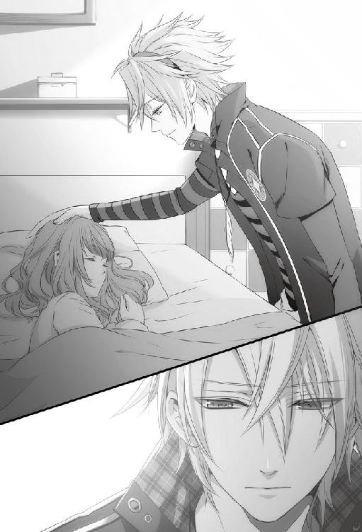
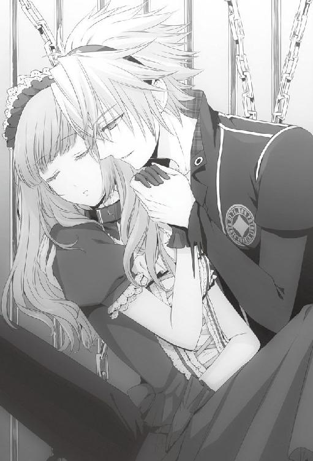

| 小説 AMNESIA TOMA Ver. AMNESIAシリーズ | |
| 狐塚冬里 | |
| (2014) | |
７月31日
『それじゃあ、また明日』と言って切れた携帯電話を、少しの間眺めた。何気なく机の上に置いてある卓上カレンダーを見て、三ヶ月ぶりだなと改めて思う。
電話の向こうから聞こえて来た彼女の声は、少しだけ緊張していたようだった。
『ちょっと話したいことがあって』
そう言われて断る理由はない。電話で？ と聞き返すと、できれば直接会って話したいと言われ承諾した。
会って話したい。それだけ彼女にとって重要な話なのだろう。『ちょっと』などと言葉を濁していたけれど、本当に何でもない話ならば電話でいいはずだ。
ひとり暮らしにしては広い部屋の中、溜息を呑み込むようにしながらベッドの端に腰を下ろした。
どうせ明日会うのだ。何も今、そのことを考える必要はないと思うのに、俺の頭は勝手に今の電話に結びつく記憶を引っ張り出していた。
あれは、今年の四月のこと。まだ桜の花が満開になりきっていない......そう、彼女の入学式を終えてすぐの頃だ。
めでたく俺と同じ茗荷大学に合格した彼女は、まだ高校生の雰囲気を引きずったままに見えた。と言っても、俺の中では彼女は今も小さな女の子のままで、高校生にすらなっていないから充分成長したと言っていいかもしれない。
同じ大学に通っているのだから、キャンパスで会ってもちっとも不思議ではなかった。でも、彼女は俺を見つけるなり駆け寄って来て、「......好きな人がいるの」と言った。
一瞬、何を言われているのかわからなかった。思考が止まり、動き始めるまで数分かかった気がしたが、それは俺の中でだけできっと返答はスムーズにできていたと思う。
「......好きな人？ へぇ、おまえもそんなこと言い出すようになったか──って、もう大学生だもんな。色気づくにしちゃ遅いくらいか」
彼女は俺の当たり障りのない反応の何が珍しいのか、一挙一動を見逃すまいとでも言うように真っ直ぐな目で俺を見つめていた。どうにも居心地が悪く、視線をさりげなく逸らした覚えがある。
「入学早々にそんな話フってくるなんてこの大学にいい男でもいた？」
茶化すつもりもなく、極自然の疑問として口にした。けれど、彼女は不満そうな顔をした。それから唇を引き結び、何かを堪えるような声で聞いた。
「......ショックじゃない？」
「ん？ ショック？ なんで俺が受けるの」
いつかこうなることはわかっていた。
だから今さらショックだなんて言われても、ぴんとこなかった。
「そこはむしろめでたいって喜ぶところだろ。おまえみたいな奴にも乙女な部分があったんだからさ」
あの時、彼女がどんな顔をしていたのか。見ていたはずなのに、そこだけよく思い出せない。
もしかしたら、俺は案外無理をして、笑顔で彼女と向き合っていたのかもしれなかった。
彼女に好きな男ができた。そう告白されてからほどなく、シンから聞かされたことがある。
実家に用があり向かっている道すがら、シンと顔を合わせた。シンが受験生だということもあって久しぶりに会ったのだが、シンは俺の顔を見るなり、
「あいつ、イッキとかいう奴のファンクラブに入ったらしいけど」
挨拶もなしに会話を始めた。
要点のみを話そうとする省エネ体質は昔からだが、せめて『久しぶり』と言おうとした俺の言葉を聞いてからでもよかったんじゃないのかと苦笑する。
「ファンクラブ？ 何それ」
「さぁ」
「さぁっておまえね......」
「イッキって知り合いじゃないの」
「んー......一応、知り合いかな？ 俺はもうやめちゃったけど、バイト先が同じで一、二回話したことがあるよ」
「それ立派な知り合いだろ」
シンは眉を寄せて、どこか不機嫌そうに言う。
「てか、バイト先が一緒って......それどう考えても一般人じゃないの」
「少なくとも、芸能人とかではないな。でも、いつも取り巻きみたいな女の子がいるのは知ってたけど......ファンクラブまであったなんて初耳だな」
「ふうん。とりあえず、オレは教えたからな」
「え？」
会った時と同じく、シンは別れ際の挨拶もなしに行ってしまった。もしかしたら、今から予備校へ向かう途中だったのかもしれない。そうだとすると、呼び止める形になって悪かったなという気すらした。
「......ファンクラブ、ね」
正直、イッキさんにもそのファンクラブにもまるで興味は湧かなかった。だが、彼女が入ったと言われると気にせずにはいられなかった。
自分でもいい加減、過保護過ぎるとは思いながらも、俺はイッキさんのファンクラブについて調べておくことにした。
イッキさんは俺が過去に勤めていたバイト先──冥土の羊の同僚だ。ほぼ交代でシフトに入っていたので一、二回しか話したことはない。
それでも、イッキさんが店の中で非常に人気があり、彼目当ての客が多くいることくらいは知っていた。でもまさかファンクラブまであるとは知らなかった。
確かに、目を引く容姿をしているし、女の子たちにも満遍なく優しく接するから人気があることは理解できる。でもそれがファンクラブを作るほどだったというのはシンに聞くまで知らなかった。
とはいえ、たかが一般人のファンクラブだ。そう大げさなものではないだろうと思っていた。だが、その予想はあっさりと覆された。
イッキさんのファンクラブはかなり有名らしく、同じ大学の女の子にちょっと聞いただけですぐ会員だという子たちに行き当たった。イッキさんが通う大学とは異なるのに、だ。
女の子たち曰く、ファンクラブには細かなルールが存在し、全体をまとめる統率者まで存在しているらしい。
そのルールについて詳しく聞こうとすると、女の子たちの口は途端に重くなった。お互いの顔を見比べるようにして、何か言おうか言うまいか迷ったような素振りを見せた。
ここだけの話にするし、誰にも口外しないと念を押すと、女の子たちはようやく口を開いた。
オブラートに包むように遠回しな言い方をしてはいたが、ようはファンクラブ内にはイッキさんを独占してはいけないという考えが根本にあるようだった。デートを申し込むにも会員の中で順序が定められており、抜け駆けは厳禁。仮にデートの順番が回ってきても、その内容はファンクラブに報告する義務があるらしい。出待ちの際の場所すら、会員内の序列が関係しているというから驚いた。
あまりの徹底ぶりに、全員が守っているのかと思わず聞くと、
「守るに決まってますよ。だって守らないと......」
と、女の子のひとりが言いかけてもうひとりに小突かれて慌てて口を閉ざした。あまりに不自然なやりとりに何かあるなと感じた。ルールを守らなければ、何があるというのか。
もう少し情報を得たかったが、女の子たちは貝にでもなったかのように口を閉ざしてしまった。無理やり話させるわけにもいかず、それ以上は自分で確認することにした。
さすがに自分がファンクラブに入ってその内部を見てみることは無理にしても、ファンクラブの子たちの動向を観察するだけで、ある程度はその実態が見えて来た。ただの仲良しクラブというわけでもないという実態が。
現在も会員の子たちとこれ以上接触するのは、自分の存在をアピールすることになりかねない。そこで、すでに会員じゃない、つまりは元会員を探すことにした。するとすぐに、強制的に脱退させられたという元会員に辿り着くことができた。
その子は、イッキさんのファンをやめたわけではないとはっきり言った。ただ、ファンクラブの規律を破ったがために、ファンクラブの会員から嫌がらせを受け、脱退せざるを得なかったという。しかし、どんな嫌がらせを受けたのかまでは語ってはもらえなかった。
更に別の人間に当たったところ、脱退までは至らなくともファンクラブの会員から嫌がらせを受けたという話をいくつか聞くことができた。どうやらこのファンクラブでは、気に入らない人間には容赦なく嫌がらせが行使されるようだった。
表向きはイッキさんが好きだという女の子たちの集まりに過ぎない。でも、そんな裏の顔を持っているファンクラブに彼女が入っている......？
かなり違和感のあることだったが、それ以上は俺が口出しをできる範疇でないことも確かだった。
手の中の携帯電話を手持ち無沙汰に転がし、今度こそ溜息をついた。
改まってされる話。好きな人ができたと言っていた彼女。イッキさんのファンクラブ。
「......明日、イッキさんも来るのかもしれないな」
──私たち付き合うことになりました。
そう報告された時、果たして自分はどんな顔をするのだろう。
８月１日
待ち合わせ場所は彼女の住むマンションの前。携帯で時間を確認しながら、寒さのせいで早足になりそうなのを強いてゆっくり歩いた。
八月に入ったというのに、この寒さは異常だ。いや、七月からして寒かったのだが、もしかしたら八月には夏らしくなるのではないかとどこかで期待もしていた。それなのに、現実は秋らしい爽やかな風を吹かせている。
長袖でも少し肌寒いが、歩いているうちに温まるだろう。
正直な話、あまり気乗りのしない道のりだった。
いつかこんな日が来ることはわかっていた。けれど、実際に彼女から恋人を紹介される段になってみると、予想以上に気が重い。
ずっと、妹だと思ってきた。思おうとしてきた。そうしなければいけない。自分で決めたことだというのに、彼女と自分の間に決定的な溝ができるのかと思うと気持ちがぐらつく。
本当に彼女の兄だったならば、何か違っていただろうか。
もうすぐ、彼女のマンションが見えてくる。そのマンションの前に立つ人影がひとつなのか二つなのか。どっちだろうと今さら事態を変えられるはずもない。
「あれ......？ 何だ？」
彼女の住む白いマンションの外観が見えて来た辺りで、道路に何かが見えた。
まさか人か？ 目を凝らして確認しようとして、息を呑んだ。
「って、おまえ!?」
人が倒れている。それが誰なのかわかった時には駆け出していた。
「どうした!? 大丈夫か!?」
仰向けに倒れている彼女の頭を揺らさないように気をつけながら、腕の中に抱く。声をかけると、朦朧とした様子ではあったが彼女がゆっくりと目を開けた。
「何があった!?」
ひとまず意識があることに安堵しながら、慎重に彼女の様子を観察する。そっと頭の後ろに触れ、次に腕や足などに怪我をしていないか確かめた。
目立った外傷は見られないが、どう倒れたのか見ていないのが怖い。
「大丈夫か!?」
意識の程度を確認するために何度も呼びかける。だが、彼女は目を開いてはいても、すぐ傍にいる俺すら見えていないかのようだった。
「おい！ おいってば！ 大丈夫なのか!?」
もう一度呼びかけてみたが、彼女は反応を返さなかった。
「ぼーっとしてるな......ただの貧血って感じでもないし」
試しに、彼女の目の前で手を軽く振って見せたがそれにも何ら反応しなかった。
もしかして、倒れた際に頭を強く打ったのかもしれない。そう思い至った瞬間、嫌な汗が背中を流れた。
このまま呼びかけていても埒が明かない。もし頭を強打しているようなことがあれば、一刻も早く病院に運ばねばならない。
「頭打ってるみたいだから病院行くよ、いいね？」
病院、という言葉にわずかに彼女の瞳が反応した。ようやく目が合う。
「病院へは行きたくありません」
「行きたくありませんって何言ってんの？」
予想とまるで異なる彼女の言葉に驚きを通り越して、呆れてしまう。
「頭打って倒れてたヤツをそのままにしとくわけにはいかないよ」
ポケットから携帯を取り出し、救急車を呼びかけて彼女の顔をもう一度見た。はっきりはしていないが意識はある。
「タクシーでいいか。行くよ」
近くのタクシー会社の番号を呼び出そうとすると、幸いすぐ近くを走っていたタクシーが捕まった。
彼女を慎重にタクシーに乗せ、自分も乗り込もうとした時に道路の端に転がる金属片が目に止まる。
「すみません、ちょっと待ってもらえますか」
一度タクシーを降り、金属片の近くに駆け寄るとそれは携帯電話だった。彼女のものだろう。
倒れた際に落としたに違いないそれを急いで拾い、タクシーへと戻る。
「出してください」
行き先の病院を告げた時、彼女が不安そうに俺を見上げた気がした。
彼女を連れていったのは入院施設もある比較的大きな病院だったが、救急の対応にも慣れているのか思いの外待つこともなく、案内された。
診察室に入ると、担当になる医師は病院到着時に俺が書いた問診票を読み返していた。
「どうぞ、座ってください」
医師の前に置かれた丸い小ぶりの椅子に彼女を座らせ、医師が問診票から顔を上げるのを待つ。医師の頭髪には半分以上白いものが混じり始めていたが、顔つきは思ったよりも若い男性だった。
彼は「ふむ」と彼女の様子を眺めてから、また問診票へと視線を落とす。
「では、あなたが発見した時は路上に倒れていたと」
ちらりと上げられた視線は彼女ではなく、俺へと向けられていた。
「そうです。昼に俺と待ち合わせてたんですが、待ち合わせ場所で倒れてました」
「わかりました。仰向け、と......後頭部をぶつけている可能性がありますねぇ。ちょっと失礼しますよ」
そう言いながら、医師は彼女に後ろを向くように言い、後頭部を簡単に触診する。髪がやや乱れていることを除いては何の異常も見られないが、医師の手を持ってしてもそれ以上のことは見つからなかったらしい。
ややコブができている程度だと診断され、ほっとする。
「この方のお名前は......ああ、ここに書いてありますね。学生さんかな」
「こいつは茗荷大学の一年生です。今は夏休み中でした」
「大学生、と......。持病の類は？」
彼女の反応が鈍いからか、医師は彼女ではなく完全に俺相手に話しかけながらカルテに記入していた。
「特になかったはずです。昨日も元気に喫茶店でバイトをしてたようなので、風邪とかもないですね」
「じゃあ貧血かな。簡単に検査しましょう」
医師の表情を注意深く観察してみたが、俺の見た限りでは何か深刻な可能性を黙っている様子はなかった。
「頭を打っているならしばらく注意が必要ですが、この方は家に帰ったらひとりですか？ ご家族は？」
「両親は転勤で近くにはいません。ひとり暮らしです」
「そうですかー......では、ちょっと入院してもらいましょうかね」
倒れて頭を打っているのだから、当然の処置だろう。今、何の問題もないように見えても後から症状が出てくることもある。それを考えると、検査入院をさせてもらえるのは有り難かった。
「お部屋はこちらになります。先に検温を済ませておいてもらえますか？」
入院する病室へと案内され、まだ若い女性の看護師から手際よく体温計を渡された。看護師は検温が終わる間も惜しむように一度部屋を出て行く。
割り当てられた個室は、窓もあり過ごし良さそうな部屋だった。検査入院ですぐに退院するためか、受付からも近い。
ひとまず彼女をベッドに入れてから、体温計を手渡した。
「自分で測れるよな？」
彼女は少しの間それを見つめてから、素直に検温を始めた。相変わらずぼんやりしてはいるが、その動作からはどこか痛めている様子は窺えない。
手近にあったパイプ椅子を引き寄せてベッドの傍に腰を下ろすと、程なくしてピピピ......と彼女の方から電子音が聞こえた。
「終わった？ じゃあ、貸して」
体温は三六度二分。問題のない数値だとは思う。
「とりあえず一日検査入院だってさ。夏休み中で良かったな」
話しかけてみたけれど、彼女は頷くこともせずに俺の顔を見つめていた。
「外傷はないみたいだけど、どこか痛むところとかない？」
さっきから妙に大人しいことが気になっていた。倒れたショックで頭がはっきりしないのだろうと医師は言っていたが、それはどのくらい続くのだろうか。何か会話を振ってみようかと思った時、
「すみませーん。検温済んでますか？」
先ほど部屋に来た看護師がひょいと明るい笑みを覗かせた。
「ああ、はい。三六度二分でした」
「はい。三六度二分、と......。ありがとうございます」
看護師は体温計の数値を確かめながらカルテに書き込み、うんうんとひとりで頷いている。ポケットにさっと体温計をしまうと、カルテを見ながら俺の方に顔を向けた。
「今日は経過観察で入院ですか。保険証はお持ちじゃないですよね」
「それは俺が持ってきます」
彼女の方を向き、確認する。
「おまえ、前に財布に入れてたよな。財布の入った鞄、家にあるだろ？ 家の鍵借りてくけど、いいよな」
彼女は頭を傾げた状態で小さく頷いた。それが何かを躊躇しているようにも見え、内心で疑問に思う。
そもそも、俺と待ち合わせていた場所に、彼女は携帯以外何も持って来ていなかった。もしかしたら、自分の部屋で話をする気だったのかもしれない。
こうなってしまった状態で推測しても仕方ないが、家に勝手に上がっていいものか一瞬迷った。しかし、そんな事情など知るはずもない看護師は、構わず続ける。
「わかりました。では、患者さんが診察中の場合はナースステーションに預けていってくださいね」
ふと彼女を見て、看護師は人の良い笑みを浮かべた。
「......優しい彼氏さんですね。彼氏さんの自宅で経過観察でも良かったかもしれないわね」
いかにも気安いその言葉に苦笑が漏れた。
「俺たちはそんな深い仲じゃないので。すみません」
あら、と看護師さんは意外そうな顔をしたけれど、それには気付かないふりをする。
「それじゃ、俺はもう行くよ。もし何かあったらここに電話して」
病院の備え付けのメモ帳に走り書きで自分の携帯番号を書き、それを彼女へと差し出した。手元にメモを差し出しても彼女が受け取ろうとしないので、その手に握らせるように持たせる。こういった反応も、頭を打つと鈍くなるものなのだろうか。
ひとりにして平気だろうか、と一瞬迷ったが、ここは病院だ。どこよりも安全だろう。
「これは俺の携帯番号。呼んだらすぐ来るから」
ふらふらと彷徨っている彼女の視線を捉え、メモを指差しながら言うと、若い看護師に小さく笑われた。
「そんなに心配しなくてもナースコールというものがあるので大丈夫ですよ」
「......まぁ、そうなんですけど」
病院を信用していないわけじゃない。それでも、何かあった時に連絡を取れる相手はいた方がいいだろう。
「それじゃまた明日来るから。ゆっくり休むようにね」
看護師に彼女を任せ、部屋を後にする。
「さてと......」
よく磨かれた病院の廊下を歩きながら、ポケットに手を入れる。やはり勘違いではなく、彼女の携帯がひっきりなしに鳴っていた。
後で彼女に返そうと思って持っていたものだが、病院の中なのでどうせ使えない。退院が決まってから返すのでも問題ないだろう。
それにしてもよく鳴っている。バイブ設定にしているとは言え、病院内では電源を落としておこうとポケットから出してみて、通話ではなくメールが次から次へと届いているのだとわかった。
彼女の携帯は、折りたたんでいても小さなディスプレイにタイトルの一行目が表示されるようになっている。
こんなにもメールを送ってくるからには何か緊急の用事だろうか。意識して見ないようにしていたが、緊急の場合だと困ることもあるだろうと思い、小さなディスプレイに目をやってぎょっとした。
「......は？」
廊下を歩いていた足が止まる。
小さなディスプレイには、『シネ』というシンプルな二文字が表示されていた。
見間違いかと思った。しかし、足を止めてディスプレイを見つめている間も携帯は震え続け、小さな画面に次から次へと同じ文字が表示されていく。
何が起こっているのかこれだけではわからない。それでも、見過ごすことはできずに早足で病院を出た。
病院の外に出てから、悪いとは思いながらも彼女の携帯を開く。メールフォルダを見て、その惨状に思わず顔をしかめた。
メールフォルダの中は、先ほどのような悪意のこもったメールで埋め尽くされていた。送信者を確認すると、どれもフリーのメールアドレスから送ってきているようだった。
いくつかのメールを開いて見ると、『シネ』という文字がただ並べられたものの他、もっと直接的に彼女を誹謗中傷しているものもあった。
こうして携帯をいじっている間も、メールの着信は止まない。明らかな嫌がらせ行為。
彼女が他人から嫌がらせを受けるような人間だとは思えない。とすると、すぐ頭に浮かんだのは彼女が入っていると聞いた例のファンクラブだ。だが、今手元にある情報だけでは断言できない。
携帯の電源はそのままに、またポケットへと押し込んだ。こんなものを、彼女に返せるはずがない。
病室に戻り、彼女に事情を聞いた方がいいだろうかとも考えたが、今まで彼女はこの嫌がらせについて俺に何も言ってきていない。そのことを考えると、こっちから言うべきではない気がした。
病院へと戻りかけた足の向きをまた変え、彼女のマンションへと歩き出す。
少し考えを整理しようと、敢えてタクシーは使わなかった。徒歩でも行ける範囲なのでそう遠くもない。
鳴りっぱなしの彼女の携帯は無視し、自分の携帯を取り出す。メモリから彼女の今のバイト先であり、過去に俺もバイトで世話になっていた『冥土の羊』の番号を呼び出した。
電話は二コールで素早く取られ、低音の声が丁寧に応じる。
『お待たせいたしました。カフェ、冥土の羊でございます』
「お忙しいところすみません。トーマです。ご無沙汰しております、店長」
『トーマか』
相手が俺とわかった途端、電話の主である店長の声から被っていた猫が二、三匹降りたのがわかった。
店長はワカさんという名前だが、勤めていた時からずっと店長と呼んでいたので、辞めた後もついそう呼んでしまう。店長も敢えてそれを直そうとはしなかった。
『何か用か』
「ええ。俺のことじゃないんですが、あいつのシフトってどうなってますか？」
『あいつ......ああ、彼女のことか。彼女なら今月はあまり入っていなかったと思うが』
「そうですか......。あの、突然で申し訳ないんですが、二、三日バイトを休ませたいと思ってるんです。そちらは大丈夫でしょうか？」
『体調不良か』
「ええ、そんなところです」
電話の向こうで、何か紙をめくるような音が聞こえた。たぶん、シフト表を確認しているのだろう。
『元よりシフトに入っていない』
「よかった。えっと次のシフトっていつになりますか？」
『四日の予定だ』
三日後か、と彼女の様子を思い出しながら思案する。検査結果もその頃には出ているだろうが、バイトに復帰できるかは彼女の調子にもよる。
「じゃあ、四日にまたご連絡すると思います」
『......そうか。わかった』
細かなことは何ひとつ聞かず、電話は向こうから切れた。別れの言葉もないところが、要点のみ伝えようとする店長らしい。
電話をしているうちに、前方にはもう彼女のマンションが見えて来ていた。
部屋に行く前に郵便物を確認しておこうと、郵便受けの方に回った途端、その異様さが目に入る。
いくつも並んでいる郵便受けのひとつが、目に見えて荒らされていた。
女性が住むマンションの多くがそうであるように、ここのマンションでもポストへは苗字など個人が特定できるものは入れている人が少なく、部屋番号だけがシンプルに表示されている。
まさか、と思いながらもポストに近寄り、その部屋番号を見て息を呑んだ。
鍵こそ開けられていないが、本来郵便物を入れ込む隙間から紙くずやバナナの皮といった生ゴミが無理やり押し入れられ、部屋番号の部位は赤い液体で汚されていた。匂いからして、ケチャップだろう。
どうしてこんなことになっているのか。
携帯に届いていた数々の嫌がらせメールを見た時もショックだったが、これはそれを遥かに上回る。
携帯に届いていたメールだけならば、不特定多数へ向けられたものがたまたま、彼女の元に届いてしまった可能性もいくらかは考えられた。だが、彼女が実際に住んでいる自宅の郵便受けへの嫌がらせは、彼女を特定して向けられた悪意であることを物語っている。
彼女はこの惨状を知っているのだろうか。少なくとも、俺は何も知らなかった。ここ三ヶ月会っていなかったのだから、知りようもなかったのだが、偶然、俺がここに来た日から嫌がらせをされたとは考えにくい。とすると、もっと前から嫌がらせを受けていたと考えるのが自然だろう。
すぐ片付けてやりたい衝動を抑え、ひとまず荒らされている郵便受けの状況を携帯のカメラに収めた。角度や距離を変えて数枚撮影をしてから、管理人室へと向かう。
管理人がつめている窓口へと向かい、簡易なベルを鳴らした。幸い、管理人はすぐに顔を出した。
管理人は窓硝子を開け、その隙間から俺の顔を訝しげに見上げた。老眼鏡を掛けた、初老の男性だ。
「どうかされましたか」
愛想笑いのひとつもない管理人に、小さく頭を下げてから口を開く。
「お忙しいところすみません。ここの住人の身内ですが、あの郵便受けは......」
言い終えるよりも早く、管理人が眉根を寄せた。
「またですか」
「......ということは、今回が初めてでは、ないんですか？」
「ご迷惑をおかけしてすみませんな。すぐに片付けますから」
「あ、いえ......俺はその、被害者側の身内です」
「あ？ あ、ああ、そうでしたか」
管理人は俺を値踏みするように視線を動かすと、より一層眉のしわを深くした。
「ご迷惑をおかけして申し訳ありません」
「失礼ですが、ご家族の方ですか？」
「......ええ」
「どうにかなりませんか。そちらも被害者かもしれませんが、うちとしても困るんですよ」
「ええ......すみません」
管理人の言い分はもっともだ。頭を下げる他、謝りようがない。
「郵便ポストの掃除は俺が責任を持ってします。床や周りもきれいにします。だからどうか、悪戯をしている犯人を捕まえるまでは時間をいただけないでしょうか」
「捕まえるって......物騒なことは勘弁してくださいよ」
「そうならないよう、細心の注意は払います。こちらにもご迷惑はかけません」
「そう言われてもねぇ」
「お願いします」
再度、深く頭を下げると、管理人は渋々ながらも頷いてくれた。掃除はしてくださいね、としっかり付け加え、迷惑そうな顔のまま窓ガラスを閉められた。つきそうになった溜息を押し殺し、管理人室の前から離れる。
早く解決をしなければ、彼女がこのマンションに居づらくなるのは目に見えていた。それどころか、あんな嫌がらせが日々繰り返されていたら、マンションを追い出され兼ねないレベルの問題だ。
彼女がひとり暮らしをすると言った時、もう少しセキュリティの高いマンションを勧めるべきだったと今さら後悔の念に襲われる。せめて、ポストもマンション関係者以外入れない場所に設置されていて、管理人が常駐しているような......と言い出せば切りがないことは自分でもよくわかっていた。
ひとまず今は、病院が閉まるまでに彼女の保険証を持っていかなければ。できればもう一度、彼女の顔も見ておきたい。
彼女から預かった鍵で部屋のドアを開け、室内へと足を踏み入れる。室内は前に訪れた時とそう変わった様子はなかった。掃除もきちんとされていて、荒らされた形跡は一切ない。
さすがに室内まではないか、とどこかほっとした。
ベッドの脇に彼女が普段使っているポシェットが置かれており、そこから保険証はすぐに見つかった。それを手に病院に戻ればいい。そう頭でわかってはいても、視界の中に入ったノートパソコンやただ伏せられただけの手帳から視線を外すことができなかった。
自分以外、誰も入ることがない部屋だからこその無防備さで、ノートパソコンは開かれたままになっていた。試しにエンターキーを押すと、画面がすぐに明るくなる。どうやら、電源は落とさずにスリープモードにしてあったようだ。
ここで表示されたのがパスワード入力画面なら、何もせずに病院に戻っていたかもしれない。だが、彼女にはパスワードを設定するという習慣がないのか、画面は彼女が使っていた時のまま表示されていた。
これ以上はプライバシーの侵害に当たる。それはよくわかっている。
彼女の意識がしっかりしてきたら彼女から事情を聞けばいい。しかし、だ。
今まで彼女は俺に嫌がらせについて何も言って来なかった。それをこちらから問い質したところで、弱音を吐くだろうか。
一歩踏み込むべきか、引くべきか。悩んでいる俺の背中を押すように、ポケットの中で彼女の携帯がメールの着信を知らせる。
『シネ』
そのたった二文字に心臓を鷲掴みにされた思いがした。
携帯へのメールだけではない。実際に彼女の住むマンションの郵便受けにまで嫌がらせは及んでいるのだ。今後、直接彼女に害が及ぶ可能性がないとは、今の状況では思えそうもない。
彼女の安全を第一に考え、俺は小さなテーブルの前に腰を下ろした。もし、このパソコンを見ても何ら嫌がらせに関する情報が得られなかった時は、素直に彼女に謝ろう。
ひどくふて腐れられるかもしれないが、何か決定的なことが起こってしまうよりはよほどいい。
短く吐息を吐き出してから、ノートパソコンのタスクバーに表示されたままのメーラーをクリックした。
未読メールが大量にある。内容を見ずにタイトルだけ表示させても、その誠意を欠いた内容に眉根が寄った。
携帯に届いていたメールと少し異なるのは、連絡がほしいとしっかりと明記されたタイトルの物が多いことだった。送信元のメールアドレスも、時折フリーアドレスではなくきちんとしたプロバイダのものが混じっている。
この違いは何なのだろう。
不思議に思いながらも『気に入ったら連絡して☆』と印されたタイトルのメールを、試しにひとつ開いてみた。
「......人違い、じゃないんだよな」
メールは男性から届いたもののようだった。彼女がネット上にアップした写真、コメントを見て連絡を寄越したと、このメールの主は書いている。さらに、その文面からはまるで彼女の方が不特定多数の男性にアピールしているかのようにも取れる内容が拙い日本語に顔文字入りで書かれていた。
自分が知っている彼女と、このメールの主が連絡を取ろうとした彼女は、本当に同一人物なのだろうか。
そう本気で悩んでしまうほど、このメールは彼女に送られたとは思えない内容だった。
これも迷惑メールの一種なのかと思い、もう数通のメールを確認するうちに、どんどん自分の心拍数が早くなっていくのを感じていた。
メールは男性からのものだけではなく、女性からと思われるものも届いていた。そこには彼女の隠し撮りらしい写真が添付されており、口にするのも憚られるような誹謗中傷の言葉が句読点もなしに羅列されていた。かと思えば、彼女を褒めちぎり、何とか自分と連絡を繋げようとしている男たちからのメールもある。
どちらも、不特定多数に送りつけられた迷惑メールだとはもう、思えなかった。
「何でこんなことに......」
『会いたい』、『シネ』、『超好みなんだけど』、『シネ』、『大学に行ってもいい？』、『シネ』、『シネ』、『シネ』......。
数通のメールを確認するだけで、手に汗が浮かんだ。
会いたいとは何だ。好みだということは、顔を判別されているということか？ 大学に来られたらどうなる？ シネって本気で言っているのだとしたら──。
どこかから、彼女の個人情報が漏れている。それもネット上で暴露されている。
大量に届いているメールからはそんな印象を受けた。たぶん、それは携帯に届いている方も同じだろう。もしかしたら、電話番号もすでにネット上に流れているのかもしれない。
俺がこうしてパソコンを開いている間も、新規のメールは届き続けている。どんどんと膨れ上がる未読メール。目を逸らしても、ポケットに入れたままの彼女の携帯が震えてその存在を主張する。
──このままにはしておけない。
漠然とした恐怖を感じた。
一度冷静になろうと、パソコンの画面から視線を逸らした時、すぐ横にある手帳の存在を思い出した。
何かメモでもしている途中で、ちょっと置いておいた。そんな風に手帳は開いた状態で伏せて置かれていた。
ほぼ無意識に手帳に手を伸ばし掛け、手に取る前に躊躇した。そこまでしていいものか、と。だが、そこまでも何ももう一線は越えてしまっている。それに、今は彼女の身の回りに起きている異常事態について知ることの方が重要ではないのか。
ひとつ息をついてから、手帳を手に取る。
開かれていたのは今月のカレンダーページだった。八月一日には、俺と会う約束があるとピンク色のペンで書かれていた。それ意外は『冥』という字が書かれていることから、『冥土の羊』でのバイトのシフトだろうと予測した。
まだ今日から八月に入ったばかりだからか、それ以外目立った書き込みはない。もう少し情報がほしいと、ページを遡ってすぐに手が止まった。先月のページだ。そこには見慣れた彼女の字で、予定が書き込まれていた。
「......イッキさんと二時半に駅前、イッキさんと西池大学、イッキさんと......」
予定を指でさしながら確認するまでもなかった。
彼女はイッキさんと付き合っている。
昨日、電話をもらった時の想像は、当たっていたわけだ。
手帳を閉じ、またノートパソコンの画面へと視線を戻した。止まらない嫌がらせメール。イッキさんとの交際。彼女が入っていたというイッキさんファンクラブ。
これらを繋げて考えるのは乱暴な推理だろうか。
男性から届いていると思われるメールは何とも言えないが、女性からと思われる嫌がらせメールは、イッキさんのファンクラブの誰かから、と考えられるのではないか。
気に入らない人間がいれば嫌がらせぐらいする集団だ。それはすでに自分で確かめている。
その気に入らない人間というのは、ファンクラブの女の子たちが夢中になっているイッキさんに近い人間──カノジョなどうってつけではないか。
いつから、彼女がイッキさんと付き合い始めていたかは知らない。だから、この嫌がらせが始まった時期も俺にはわからない。
でも、とにかく今は彼女をイッキさんから引き離さなければならない。それだけはわかる。
このまま彼女をイッキさんの傍にいさせては、嫌がらせは止むどころかエスカレートする可能性が高い。今だって、充分に過激なのだ。これがさらに度を超した時、彼女に何をされるかわからない。
彼女が誰と付き合おうと構わない。その気持ちに嘘はない。だが、それは彼女が幸せな場合に限っての話だ。こんな、辛い目に遭わせるために誰かに譲ったんじゃない。
いや、譲るも何も俺のものじゃないことなんて百も承知だが、それでも、彼女に害を及ぼすこの状況は見過ごせない。
彼女がどこにいようと、笑っていること。それは絶対だ。
今もメールを受信し続けるパソコンを閉じ、強制的にスリープモードへと切り替える。手帳も閉じると無意識に近くの棚の引き出しへとしまった。
彼女は今日この部屋には戻らない。それならば、今は状況確認に留め、彼女の様子を見に行った方がいい。
入院と言っても検査入院なので、とりあえず一日だけと医師からは言われている。それでも、彼女の部屋から数日は入院しても困らない生活用具を適当な紙袋に詰めた。歯ブラシや化粧品などは途中、コンビニで買えば済むだろう。
時刻は一七時を回っている。病院の面会時間は何時までだっただろうか。
彼女の保険証を持ったことをもう一度確認してから、玄関へと向かった。明かりを消すと、カーテンを閉めた室内は思ったよりも暗かった。その中で、スリープ状態のノートパソコンが淡い光を発している。
まるで、ノートパソコンそのものが忌まわしい何かのように見えた。
真っ直ぐに病院に向かおうかとも思ったが、何気なく手を入れたポケットの中で震える携帯を見て足を止めた。
この携帯を彼女にそのまま渡すことは避けた方がいいだろう。この嫌がらせメールの数々は、今後何かの証拠として提示する必要が生じる可能性が高い。それを考えると、この携帯はこのままの状態で保存しておきたかった。
彼女が倒れていた時、たぶん携帯は手に持っていたのだろう。弾かれたように道の端に落ちていた。彼女は朦朧としており、それには気付いていなかった。それなら、壊れていたと言うのはどうだろう。
きっと、彼女は俺の言葉を疑いはしない。
彼女には申し訳ないが、新しい携帯を持ってもらうことにした。俺の方で用意しておきたいところだが、携帯電話の契約は本人が行うのが決まりだ。今日中に用意することはまず無理だろう。そうだ。落ちていた彼女の携帯を俺が踏んで壊してしまったことにして、お詫びに新しい携帯を渡すことにしたらどうだろうか。
それならば、彼女の負担も少なく済む。そうしよう。
ひとり頭の中で勝手な結論を出してから、また歩き出した。
面会時間ぎりぎりに病院に着くことはできた。受付は通らずに、すぐ彼女のいる病室へと足を向ける。
廊下から声を掛けたが、返事はなかった。物音を立てないようにそっと扉をスライドさせると、彼女は眠ってしまっていた。カーテンが開けっ放しの窓から、赤く染まりはじめた陽がその頬に差している。
「......眩しそうな顔してるくせに、よく寝てる」
寝顔を覗き込んで、小さく笑った。少しだけ眉根が寄っているのは、気分が悪いのではなく単に夕日が眩しいのだろう。
なるべく静かにカーテンを引いてやると、その眉間のしわは綺麗になくなった。
パイプ椅子に腰を下ろし、しばらく穏やかに眠る彼女の顔を見つめる。室内が薄暗くなったせいか、顔色が少し悪く見えた。
彼女の身に降りかかっている出来事と、彼女の顔色の悪さに寒気がした。馬鹿らしいと思いながらも、彼女がきちんと息をしていることを確かめるように口元に手のひらをかざし、吐息があることに安堵する。
彼女は今、眠っている。規則正しい寝息を立てて、ぐっすりと。
『シネ』
不意に頭の中に声が響いた気がした。もちろんそれは俺の気のせいで、実際はポケットに入れたままの彼女の携帯が振動しただけのことだ。
今日一日で知った、数々の出来事が頭の中に次々と思い起こされる。彼女は、俺の知らないところでどう暮らしていたのだろう。
このまま、彼女を日常に返した時、彼女はきちんと笑顔でいられるだろうか。
彼女を──失うことにはならないだろうか。
最悪の事態まで想像してしまい、きつく自分の手を握り締めた。だが、この想像を考え過ぎだと笑い飛ばすことはできなかった。
彼女の寝顔には幼い頃の面影もまだうっすら残っていたが、すでに大人と言っても差し支えのない年齢になっていることは知っている。それでも、俺が守るべき存在であることには違いない。
あの日した約束を忘れたことはない。あの、遠い幼い日──。
「もうだいじょうぶだよ。いっしょにかえろう」
手を差し出すと、泣きじゃくっていた彼女は俺の手を掴んでから、さらに顔をくしゃくしゃにして涙を零した。よほど怖かったのか、その小さな肩は震えていた。
「ずっとまよってたんだね。こわかった？」
彼女は言葉にならない嗚咽を漏らしながら、何度も何度も頷く。その度に、髪につけている小さな飾りが揺れていた。
「なかないで。もうへいきだよ。ぼくがうちまでつれていってあげるから」
「......ほんとう？」
大きな目をいっぱいに開いて、彼女が聞く。全身で頼られていることがわかる真っ直ぐな目に、心臓が跳ねたのをよく覚えている。
「これから、こわいことがあったらぼくをよんで」
彼女は泣くのを忘れたように、きょとんと首を傾げた。
「どんなこわいことからも、ぼくがまもるよ」
泣き顔が、一瞬にして笑みに変わった時、これは絶対だと心に誓った。
「やくそくするから......」
あの日交わした約束を忘れたことは、一度もない。たとえ、すぐ傍にいなくとも。
あの時も夕方だったな、とそんな細かいことまで覚えている自分に驚いた。
彼女も、覚えているだろうか。覚えていなくとも構わない。俺が守ればいいだけのことだ。
だから今、彼女を取り巻いている事態を収拾しようと決意した。そうしなければ、彼女の笑顔どころか身の安全すらどうなるかわからない。
そのためにはいろいろと踏み込んだことをする必要もある。それが、彼女にしてみれば好ましくないことも多くあるだろう。それでも、やめるわけにはいかない。
たとえ彼女に嫌われても──憎まれることになっても、彼女の笑顔を守るためならば、俺は手段を選ぶ気はない。
「......ごめんな」
勝手にメールを見たことか、手帳を見たことか、携帯を返さないことか。謝るべきことはすでにたくさんある。でも、まだ面と向かって謝ることはできない。
彼女の保険証を受付に預け、病院を後にした。
彼女のマンションにもう一度向かう気ではいたが、先に自分のマンションに行き、必要なものを揃えた。ゴミ袋にティッシュ、雑巾、洗剤、それとＵＳＢメモリ。それらのものを雑多に鞄に放り込んでまた外に出る。
彼女のマンションに着いた時にはすでに日が暮れており、先に確認したところ管理人も今日はすでに帰った後だった。先に断っておいたからか、いつもそうなのかはわからないが、嫌がらせを受けた彼女の郵便受けは変わらずケチャップにまみれている。
持って来たティッシュで部屋番号のプレートにかかっているケチャップを拭った。ケチャップはプレートのみならず、周りや中にもまかれていたが、見事に彼女の部屋の郵便受けのみに留まっている。
「ケチャップって......思ったより垂れないんだな」
どうでもいいことに感心してしまう。
郵便受けの鍵は、彼女の部屋の鍵と一緒にまとめられていた。可愛いキーホルダー付きのそれを差し込む時、嫌がらせをされている郵便受けとの差に苦笑が漏れる。
郵便受けの中もひどい有様だった。丸めた紙くずは可愛いものだ。バナナの皮もいいとしよう。わざわざ嫌がらせをした犯人が用意したのかこの場で食べたのか。
「......やっぱり」
予想してはいたが、正規の郵便物はケチャップにまみれて赤く染まっていた。ビニール封筒に入ったダイレクトメールのようなものだけが、まるで被害を受けていないことがまた皮肉に思えた。
一応、必要そうな郵便物はケチャップを丁寧に拭いてみたが、しっかり湿ってしまい文字も滲んでいる。彼女が通っているらしい美容院からのはがきは、手書きの文字部分が完全に読めなくなっていた。
「これ、いるかな」
少し悩んだ結果、ゴミとは別の袋により分けておくことにした。
洗剤や雑巾を使って、嫌がらせの形跡を完全に消し去るまで約二〇分。初めての作業にしては効率が良い方だろう。幸い、片付けている間にこのマンションの住人と鉢合わせることもなかった。
今日はこれで良いとして、今後どうするか少し考える必要があるだろう。できれば、彼女には知られずに郵便受けの掃除は行いたかった。
それも明日、彼女の退院が決まってから対処しようと決め、ゴミをまとめてから彼女の部屋へと上がった。
室内では相変わらずノートパソコンだけが淡い光を放っている。そのどこか不気味な光景を見ていたくもなく、すぐに電気をつけた。
問題のノートパソコンを開き、メーラーを起ち上げる。午後に見た時よりも、未読メールは増えていた。このまま受信を続けても埒が明かないので、ひとまずネット回線を抜いて接続を切った。
メールの動作がなくなってから、嫌がらせメール、そこから派生したのであろうメールの類いは全て、あらかじめ用意しておいたＵＳＢメモリに移動した。メーラーからは削除し、削除されたメールが保存されるフォルダからももちろん削除した。特殊なソフトウェアを使用すれば復元は可能だが、彼女がそこまでするとも考えられないので、そこまでで良いだろう。
彼女が明日退院できたことを想定すると、当然のことながらメールチェックは行うはずだ。それでは今メールを削除した意味がない。
考えた末、彼女のノートパソコンからバッテリーを抜き取っておくことにした。不自然ではあるが、他に良い考えが浮かばない。バッテリーを抜いただけではアダプターをコンセントに繋げばパソコンが使えてしまう。それも考慮してコンセントもまとめて鞄にしまった。
パソコンが使えないと不便なことも多いだろうが、ひとまず今まで届いていた嫌がらせメールが彼女のメールアドレスに届かないよう設定するまでは時間稼ぎをしたかった。
猶予は明日、彼女がこのマンションに戻るまで。退院にも、もちろん付き合う気でいる。そうすると当然、この部屋にまた来るだろうから隙を見てバッテリーなどを戻すこともできるだろう。
他にこの部屋でしておくことはあるだろうか。ぐるりと室内を見回してから、何も映さなくなったノートパソコンを閉じた。
８月２日
朝、毎日かけていた携帯電話のアラーム音で目が覚めた。
「朝、か......」
どうやら、昨夜は遅くまでパソコンをいじっているうちにそのまま眠ってしまったようだ。長時間操作していなかったために、ノートパソコンはスリープモードへと切り替わっていた。
ひとり暮らしをするようになってから、こうして不規則な生活を送ってしまうことがあった。誰に何も言われない生活は楽だが、自己管理をしないとすぐに崩れてしまう。
「ん......」
座ったまま伸びをすると体がぎしぎしいった。おかしな体勢で眠っていたのだから無理もない。
昨夜できたことは多くなかった。
彼女のパソコンから抜き出してきたメールのアドレスをまとめ、大まかな区分けをするだけでも相当の時間を要した。まだ、内容を全て確認し終えてもいない。それほど、メールは大量にあった。
他にも、今日彼女が退院してしまうより先にしておくこともあった。
まず、彼女の新しい携帯を確保するために委任状を作る必要がある。これはすぐに終わるが、肝心の彼女のサインの欄が空欄になる。だが、サインを彼女に書かせる手段はすでに考えてあるので問題はない。
次に監視カメラについて、法律的にどのような縛りがあるのか調べておく必要がある。
できれば、早いうちに彼女のマンション、それも嫌がらせを受けている郵便ポスト部分を撮影するための監視カメラを設置したいと考えていた。
彼女のマンションの郵便ポストは共用部分にあり、誰でも入り込むことができる。だからこそ起こった嫌がらせだ。そしてその嫌がらせは、今後も行われる可能性が高いだろう。それをむざむざ見逃す手はない。
ただ、この監視カメラ周りの法律はデリケートな部分もあり、そこは上手く立ち回る必要があった。自分で調べる程度でわかる内容だといいが、とマウスを動かしてノートパソコンのスリープモードを解除する。
今が夏休みで良かった。これが大学の講義のある日だったなら、こうも自由には行動できないだろう。一応、ゼミから夏休みの間に課題が出されていたが、講義がないだけ良しとしなければ。
病院に彼女を迎えに行くのは夕方になると、昨日のうちに看護師には伝えてある。病院に行く前に郵便受けに嫌がらせをされていないか確認しておきたいし、もし嫌がらせをされているようならば片付ける必要がある。できれば、管理人に監視カメラの話もしておきたい。
それらを考えると午後には家を出た方が良さそうだ。
「これは......先にある程度課題をやっとかないとな」
彼女の退院手続きの時間を考えると、帰宅は夜になるだろう。
ノートパソコンの画面に表示されているやりかけの課題を見て、溜息をついた。夕方までに提出しなければいけない課題が、まだ半分も終わっていない。今から家を出るまで集中すれば、何とか終わるだろうか。
まだ眠気を訴える頭を無理やり働かせようと、立ち上がる。コーヒーでも飲めば少しは目も覚めるだろう。
ゼミの課題を提出し終えたところで、空腹を覚えた。そういえば今朝コーヒーを飲んだきり、何も食べていない。
何か適当に口にできるものがなかったかと冷蔵庫を漁ったが、めぼしいものは何もなかった。
「......仕方ない。少し早いけど出るか」
カフェかどこかで軽く昼食を取ってから、その足でそのまま彼女のマンションに向かうことにした。
昼食を取るために駅まで行くと、家の周りとは比べものにならないほど人がいる。都内に住んでいると簡単な食事に事欠かないが、こういう人混みはたまに面倒だと感じることがある。
ちょうど昼の時間だったが、この街の昼時間は一般的に言われる昼の時刻よりも遅く始まる。そのおかげで並ぶこともなく席につくことができた。
簡単に済むファーストフードで胃を満たしてから、携帯に手を伸ばした。自分のものではない、彼女の携帯だ。
今も、彼女の携帯には絶え間なく嫌がらせメールが届いている。その不気味な様子に眉根を寄せながら、そっと携帯を開いた。
相変わらずのひどい内容に手が震えそうになる。誰もいない家よりは、ファーストフード店のざわめきの中にいる方が、まだいくらか気分が安らぐ気がした。
昨日までに届いた嫌がらせメールの数々はすでにパソコンの方に転送してあるが、今も絶え間なく流れてくる分については保存していない。だが、もう保存する必要もなさそうだ。
今日新たに届いたものも念のため数通確認したが、ここまでで大体固定の人間から送られてきていることはわかった。それに、どうやらパソコンより携帯のメールアドレスの方が情報を持っている人間が少ないらしいことも、そのメールの数から判明した。
携帯を操作して友人、知人以外のメールアドレスからはメールを受け取れないようにと設定した。漏れがあるかもしれないが、普段のやりとりを見る限りではこの程度で問題ないはずだ。
俺も大概プライバシーの侵害だな、と自嘲めいた笑みが零れる。もう決めたことなのだから、やめはしないけれど。
空腹も満たされた。次は掃除の時間かと我ながら趣味の悪いことを考えながら、店を出た。
「............」
彼女の部屋の郵便受けは、今日も荒らされていた。外見からは一見わからないが、それとなく香る調味料の匂いですぐにわかった。
自然と眉根が寄り、しかめ面になっている自覚はあったが抑える気にもならない。
鍵を開けると、今日はどうやらマヨネーズ攻めのようだった。溜息を堪え、郵便物を不要な物と必要な物へと取り分けるところから始めた。
丁寧に掃除をしてから、管理人室へと顔を出す。管理人の方も俺の顔を覚えていたようで、窓ガラスを覗くと座っていた椅子からゆっくりと腰を上げた。
「今、少し大丈夫ですか？」
窺うように言うと、管理人はポストのある方向に視線をちらりとやってから頷いた。もちろん、ここからではポストがどうなっているのかなど見えはしない。
「またですか」
あからさまに迷惑そうな表情で言われ、頭を下げる。
「ご迷惑をおかけして、本当にすみません。掃除は今すませました」
「......それで、何か？」
年のせいだけではなく、眉間にしわを寄せるのがこの老人の通常の顔になってしまっている。これはどう切り出しても苦労しそうだ。
「......郵便ポストの付近に、防犯カメラを設置させてはもらえませんか」
どう遠回しに言ったところで、言うことは変わらない。せめて監視カメラより防犯カメラの方が当たりが柔らかいかと言い回しを考えはしたが、それ以外はストレートに言うしかなかった。
「防犯カメラ......ですか？」
案の定、管理人の眉間のしわが更に深くなる。
「防犯カメラがあれば、ポストに悪戯をしている現場を撮影できるかもしれません。それに、設置するだけで悪戯防止の役目も果たせるかと思うんですが......」
悪戯防止は、管理人を説得するための建前だ。防犯カメラは犯人に気付かれない位置に設置し、とにかく証拠を集めるつもりでいた。
「しかし、そういうのはねぇ。私の一存では決められませんし」
管理人は溜息混じりに俺から視線を逸らした。すぐにでもこの窓ガラスを閉じて会話を終了したいと、顔に書いてある。
「ご迷惑をおかけして、本当に申し訳ないと思っています。カメラの設置はもちろん俺がやります。設置する期間も決めて、できるだけ早く解決します。どうか、考えるだけ考えてみてはもらえませんか」
「そうは言われても......」
「お願いします」
もう一度深く頭を下げると、管理人は低く唸るようにして押し黙った。
すぐに設置の許可が出るとは思っていなかった。だが、カメラの設置は必須だ。嫌がらせの犯人を突き止めるためにも、証拠にするためにも。
そのためならば、頭を下げることなど何の苦にもならない。それでも許可が下りない場合には、また別の手段を考えてもいた。
「......管理組合に掛け合うだけですよ」
根負けしたように言った管理人に、「ありがとうございます」とまた頭を下げる。
用は済んだだろうとばかりに窓を閉められたが、構わない。
根負けしてくれるような相手ならば、説得を重ねれば監視カメラ設置の許可が下りる可能性は高い。
今から掛け合うということは、結論が出るまでにはもう少しかかるはずだ。それまでにカメラの方を準備しておかなければと管理人室に背を向けた。
病院へは、予定通り夕方についた。
退院の手続きに時間がかかるようならば、彼女に会う前に済ませてしまおうと受付へと先に顔を出した。するとすぐに、昨日応対してくれた看護師が顔を出し、俺を見て「ああ」と笑みを浮かべる。
「彼女さんのお見舞いですね」
昨日、カノジョではないと否定したはずだが、すっかり間違って覚えられているようだ。また否定するのもどうかと思い、曖昧に頷くと何故か看護師の方が顔を曇らせた。
「実は、ＭＲＩに使用する機械が一部故障してしまっていて、ＭＲＩ検査ができてないんです」
「え......じゃあ、もしかして」
「ええ、申し訳ないんですけど」
さして申し訳なさそうでない様子で、看護師は彼女の退院が一日延びたことを告げた。
「他の検査で異常は見つかってませんけど、まだＭＲＩを撮ってみるまでは安静にしてくださいね。不用意な刺激を与えたり、お見舞いで長居するのも禁止ですよ」
「......わかりました」
「お願いしますね」
釘を刺されるように言われてから、彼女の病室へと向かう。
入院が延びてしまった彼女には気の毒だが、俺としては好都合だと言えなくもなかった。彼女が安全な病院という場所にいてくれる間に地固めしておきたいことは多い。
しかし、まさか機械の故障なんてことが起こるとは思わなかった。昨日、彼女に渡しておいた入院セットは、一応は数日分まかなえるようにしてあったが、きちんと足りるだろうか。それに、機械の故障はそうすぐ直るものなのかもわからない。また日にちが延びる可能性も考えて、準備をしておいた方がいいかもしれない。
そんなことを考えている間に、彼女の病室に着いていた。
ノックをすると、しばらくして「はい」と小さな声が返る。今日は眠っていないようだ。
ドアを開けると、彼女はベッドの上に上半身を起こしてこちらを見つめていた。
「起きてていいの？」
起きてて、というよりも今起きたところのように、彼女の反応は鈍い。
「昨日、保険証持ってきたけどおまえが寝てたから看護師さんに預けといたよ」
俺の言葉を確認するように、彼女は小さく頷く。その顔に、昨日見た寝顔を重ねて幾分血色がよくなっていることに心の中でほっとした。
「......今日は顔色は悪くないね。頭に包帯巻いてないところを見るとひどい怪我もしてないって感じかな」
初診の通り、外傷はたんこぶくらいのものだったのだろう。頭を打っているから検査入院は必須だったが、それほど心配することもなかったかもしれない。と思いかけて、彼女の口数が随分と少ないことに気が付いた。
先ほど起きたばかりのようにも見えたから、まだ寝ぼけているのだろうか。それほど寝起きが悪い方ではないと思っていたが......。
「......でも、ぼーっとしてるな。ほんとに大丈夫なのか、おまえ」
確認するように顔を覗き込むと、彼女は少し頭を引いてからゆるゆると頷いた。その避けるような態度に、あまりしつこく聞くことでもないかと話を変えることにする。
「そうそう、看護師さんに聞いたけど機械の故障でＭＲＩが撮れてないんだって？」
「そうなの！」と頬を膨らませる様子を想像したのだが、彼女はただ一度頷いただけでそれ以上のリアクションは見せなかった。本当に、大丈夫なのか少し心配になるくらい、大人しい。これは、看護師の言うとおり、あまり長居をして疲れさせてはいけないのかもしれない。
「......だもんで、その看護師さんにまだ安静にしてあげてくださいって言われちゃったよ。変に刺激したりお見舞いで長居するなってさ」
彼女は俺の話を聞いているのだとは思うけれど、頷く程度で何か言葉を発しようとはしなかった。どうにも調子が狂うが仕方ない。
「そういうわけだから、今日はもう行くよ。おまえの顔が見られて良かった。少し安心したよ」
パイプ椅子から腰を浮かすと、俺が立ち上がるのに合わせて彼女の視線が動く。不安げな視線で追われると、置いて行くことに罪悪感に近いものを感じてしまうが、俺の気持ちを知ってか知らずか、彼女の視線はすぐに俺から横へと逸れた。
何となくその視線を追ってみたけれど、俺の他に誰かいるはずもなく、彼女は何もない空間を見つめている。やはり、まだ本調子ではないのだろう。
そのまま帰りかけて、思い出した。
「悪い。帰る前にこれだけサインしておいて」
用意しておいた書類とボールペンを差し出すと、彼女は何も聞かずに自分の名前をゆっくりと書いた。書かせておいて、俺が詐欺師とかだったらどうするの、と余計な心配をしてしまう。
もちろん、俺が彼女に害を及ぼすようなことをするはずもないが、このサインだって理由を聞かれたら入院の関係で必要だと誤魔化す気でいた。本当は、携帯の機種変更時に必要な、委任状へのサインだというのに。
聞かれなかったおかげで余計な嘘をつかなくて済んだ。そのことに思ったよりも安堵しながら、署名入りの書類を鞄へとしまい込んだ。
「明日、また来るからな。いい子でいなさいよ」
俺が病室を出て行こうとしても、彼女は「うん」とも「またね」とも言わなかった。強い違和感に首を傾げたが、調子の悪い時というのはそういうものかとあまり気にしないことにした。
彼女の退院が延びたとなると、海外に転勤中の彼女の両親へ連絡を入れておくか微妙なところだ。
一日くらいの入院ならば、退院後に彼女から連絡を入れさせれば問題ないと思っていた。けれど、二日となると少し長い。連絡先も知っているし、彼女の両親とは家族ぐるみの付き合いなのでもちろん面識もある。俺の方から連絡を入れることに何ら問題はないが、検査結果も出ていない状態で連絡を入れても心配させるだけのような気もした。
少し迷いはしたが、彼女の様子を思い出して大丈夫だろうと判断した。いくら付き合いが長いとはいえ、第三者から連絡をもらえば様子の見えない方からすれば心配になるだろう。
考え事をしながら歩いているうちに、すっかり駅の方まで出ていた。もちろん、目的があって歩いていたわけなので問題はないが。
確か駅近くにあったはずだと辺りを見回し、すぐに彼女が持っている携帯のショップを見つけた。
まだ会社勤めの人々が帰る前だからか、携帯ショップは空いていた。番号札を取る必要もなく、すぐに窓口へと通される。
「本日はどのようなご用件ですか？」
訓練された営業スマイルを浮かべる女性に、つられて笑みを返した。
「携帯の機種変更をしたいんですが」
「はい、機種変更ですね。ではまずお電話番号をよろしいですか？」
マニュアルどおりの対応に、こちらも用意しておいたどおりの事柄を順に並べていく。
「番号はこれです。契約者が今入院しているので、俺は代理になります」
ほんの少しの間の後、店員はまた笑顔を見せた。女性の頭の中で、こう言われた時はどう返すか、という内容が検索されているのがよくわかる。
「代理人の方による機種変更ですね。いくつか必要書類がございますが、そちらのご準備はお済みですか？」
「はい。先にサイトで確認しておいたので。これで足りてると思うんですけど」
この携帯会社のサイトで確認しておいた書類を並べると、店員は断りを入れながらひとつずつ確認していった。
「ええ、こちらで大丈夫です。機種はもうお決まりですか？」
「それなんですが、この携帯と似た操作性で色もできれば同じ系統のものがあれば......」
彼女が元々使っていて、今は電源を落としただけの携帯をカウンターに置く。店員はそれをまた断ってから手に取り、一度席を外すとすぐに数台の見本を手に戻った。サイトでも確認してはいたのだが、操作性となるとやはり店頭で聞いてしまうのが早い。
「操作性を重視するならこちらですね。でも、こちらの方が最新の機種になりまして、見た目も可愛いので女の子には人気ですよ」
店員が手にした携帯電話は、俺から見るとさほど差がないように見えた。店員はすでに契約者が彼女であることをデータで確認しているのか、しきりに最新機種の方を勧める。
「じゃあ、最新の方でお願いします」
女性が勧めるのだから、きっとそっちの方がいいだろう。そのくらいの考えで携帯を選んだ。
機種変更の手続きの他、寄り道をしているうちに自宅に帰り着いた頃には日もすっかり落ちていた。今夜も寝るのは遅くなりそうだ。
ゆっくりしている暇もなく、コーヒーを淹れ早速ノートパソコンの前に座り込んだ。
締め切りが迫っているゼミの課題はすでに終えている。締め切りが先の物はひとまず後回しにし、昨夜のうちにまとめておいた彼女のパソコンのメールを確認していく作業へと入る。メール本文の中に特定のサイトのＵＲＬが記載されている場合は、そのＵＲＬを別途ファイルへとまとめていった。
メールの中には彼女の写真が添付されているものもあり、ぞっとする。彼女は無防備な笑顔をその写真の中でさらしていた。
見るからに隠し撮りされたそれらの写真を見て、どうして平然と『可愛いね』、『一度会おうよ』と言えるのか俺にはわからない。だが、メールを寄越してきた男たちは口々に彼女を褒め、自分へ感心を持たせようと必死だった。
一通りメールの確認が済むと、今度は抜き出しておいたＵＲＬのチェックに入る。念のため、ウィルスソフトは起動しておいた。サイトによってはアクセスしただけでコンピューターウィルスに感染する類いのものもあるからだ。
ひとつ目のサイトはいわゆる出会い系サイトだ。
「予測はしてたけど......ひどいな」
そのサイトは会員の年齢や性別、見た目といった細かな好みを検索条件に入れることができるタイプで、彼女に当てはまる条件を入れていくと数件のデータがヒットした。
一番上のリンクをクリックした途端、パソコン画面の中で楽しげに笑う彼女の写真が表示されドキリとした。これも隠し撮り写真だった。画像はやや粗かったが、目元を黒いボーダーで隠されていようと知っている人間ならばすぐに彼女とわかる。
通っている大学までもしっかりと明記されたプロフィール欄には、『寂しいのが苦手なのでたくさん連絡ください』と一言メッセージが添えられていた。もちろん、彼女が書いたものではないに決まっている。
そのサイトでは、自分も会員登録をすることで他の会員にコンタクトを取ることができる仕組みのようだった。会員登録は無料だ。初回の連絡も無料。その後も連絡を取りたいならば有料サービスへと切り替わる。
試しにデタラメのプロフィールで登録し、彼女へコンタクトを取ろうと試みたところ、同時に起動させていたメーラーにすぐメールが届いた。彼女のメールアドレスに届いたメールを受信するように設定しておいたのだ。
メールを開いてみると、それは今まさに、自分が彼女に宛てて書いたメールだった。ただし、送信元メールアドレスは登録したものではなくこのサイト特有のものに変換されている。女性の方から連絡を返すにも、必ずこのサイトを経由するようにできているということだ。
初回で連絡の交換ができなければ、このサイトを通して何度も連絡を取らなければならない。その度に料金が発生するので、サイトとしてメールのやりとりを経由させるだけで丸儲けというわけだ。
だからか、と納得する。男たちから彼女へ送られたメールには、必ずと言っていいほど、連絡はこっちに欲しいと自分のメールアドレスが記載されていた。出会い系サイトを使用してはいても、有料サービスを使いたくはないという男たちの態度に呆れてしまう。
だが、そのおかげでこちらは調べる手間もなしに男たちの連絡先を手に入れることができた。彼ら自身にコンタクトを取る必要は今のところないが、今後のために連絡先はリスト化しておいた。
これで、フリーアドレスと思われたドメインのひとつが、このサイト固有のドメインだと判明した。おそらく、多数重なっているドメインはこのサイトと同じような出会い系サイトを経由したものだと考えて問題ないだろう。
ドメインでくくれてしまうと大分作業は簡単になった。集計しておいたメールアドレスをドメインごとに並べ替えるだけで、大抵ひとつのサイトへと結びつく。
「次はこれか......」
彼女の個人情報がネット上に流れていることはわかった。だが、出会い系サイトへ彼女になりすまして登録しただけではないはずだ。男たちからのメールの大半は出会い系サイトからのようだったが、中にはプロバイダ特有のメールアドレスや、俺でも知っているような有名なフリーメールアドレスから直接、彼女にメールを送ってきている者もいるからだ。
そういった男たちのメールには、よく『掲示板見たよ』という一言があった。この、『掲示板』に彼女の個人情報が載せられているのだろう。この掲示板自体を見つけるのはそこそこ苦労した。
男たちは親切にＵＲＬを貼っておいてなどくれない。文面から何となく、とある掲示板に彼女の写真と名前、メールアドレスが書いてあること、そして彼女が何かの加害者にされていることが伺い知れるだけだ。
「すごいことやってんね......って、どういう意味だ？」
中には彼女に同情し、自分で良ければ相談に乗ると言い出している男もいた。大抵が、彼女を責めながらも交際を申し込もうとするものだと言うのに、だ。
彼女を責める、という点では女性からと思われるメールと共通している。明らかに女性からと思われるメールはその内容からして、男からのものとは毛色が異なっていた。
はっきりと、誹謗中傷が書かれているのだ。『最低』、『雌豚』、『ビッチ』とよくそんなにも汚い言葉が思いつくものだと思う。
男からのものと女性からのもので分けて考えていたが、その考えを一度改めてみようと女性から届いたメールをもう一度開いて見ることにした。
『掲示板、見ました。相手の女の子が可哀想です』
ここでも、掲示板だ。
何かヒントはないのか。と考えて、はっとした。本当に、ヒントがないのか？ そんなことはない。
「見逃してたな......」
大型の検索サイトで、掲示板というキーワードに彼女の名前を入れ込んで検索をかける。すると、すぐに複数の掲示板がヒットした。複数とはいえ、見切れない数ではない。
俺が知らないだけで、ネット上では彼女の名前はそこそこ知れたものになってしまっているのかもしれない。そこまで珍しい名前でもないが、同姓同名だと思い込むには無理がある。
ヒットした一番上のサイトへのリンクをクリックすると、またしても彼女の写真がすぐ目の前に現れて心臓に悪い。今度の写真は、出会い系サイトのように目元も隠されていない。
初めは彼女が作ったと見せかけた、また出会い系に近い掲示板かと思ったが、そうでないことはすぐにわかった。この掲示板は、彼女をつるし上げるためのものだ。
書き込みを過去のものから見ていくと、彼女は人のカレシを横取りした上で、その元カノジョに嫌がらせを働いたことになっていた。さらに横取りしたカレシの他に数人の男と関係を持っているとも書かれていた。
作り話にしても、男たちが『すごいことやってんね』と言いたくなるほど、内容は盛ってある。
その掲示板には、彼女の名前、メールアドレスや通っている大学といった個人情報を書いたコメントが執拗なほどに何度も書き込まれていた。
これならば、ちょっと掲示板の噂を聞いて見に来ただけの人間でも、簡単に彼女の個人情報を手に入れることができる。
恐ろしいのは、この書き込みは『善意の』ものであると主張しているところだ。つまり、彼女から被害をこうむった側が作成しているという立場を取っている。
書き込みの中には、更に別のＵＲＬへと誘導するような記事があった。何のＵＲＬだろうとそのリンク先へ飛んでみると、それは彼女の嫌がらせを受けたという被害者女性のブログだった。
もちろん、この掲示板の中で被害者だとされているだけで、架空の人物に違いない。
そのブログはいかにも女の子が好みそうなデザインで、一目見ただけで強い悪意を感じた。それは俺が、先入観を持って見ているからかもしれないが。
このブログも確認しておく必要があるだろう。
女の子のブログは、今年の五月以降、更新されていないようだった。
その最新の記事には『疲れてしまったので眠ります。みなさん、いままでありがとう』という短い文章だけが書かれていた。何も知らずに読んだならば、ただ就寝前の挨拶に見える。だが、これは本当にそうなのだろうか？
ブログの日付を遡っていくと、その周到さに鳥肌が立った。
ブログは楽しくカレシと交際しているところから始まる。時折、写真もつけた記事はいかにも楽しそうだった。だが、日付が進むにつれて徐々に不穏な影が差していく。
四月の中旬にカレシを彼女によって略奪されたと匂わせる内容があり、その後、すぐに彼女から嫌がらせを受けているような内容が書き込まれていた。そして徐々に書き込みの頻度が下がり、最後の記事に辿り着く。
ブログの記事を全て読んだ後では、『疲れてしまったので眠ります。みなさん、いままでありがとう』という最新の記事は、ただの就寝の挨拶などにはもう見えなかった。
思わず、頭を抱えたくなった。
ここまでされなければならないような何を彼女がしたと言うのか。
一度大きく息を吐き出し、頭をクリアにしてからまた情報を追った。
ネットというのは、誰でも簡単に情報を発信することができる。非常に便利な道具だ。だが、その情報の正否は、受信した側の判断に委ねられてしまうから怖い。誰ひとり真実を知らなくても、あたかも真実のように語られ、信じられてしまえばネット上ではそれが真実になってしまう。
全ての人間が彼女が加害者であると信じないにしても、これだけ裏工作をされてしまうと、彼女の方が加害者だと信じる人間も出てくるだろう。現に、信じた人間から、嫌がらせメールが届いている。俺だって、何も関わりのない第三者の話だったらどっちを信じていたかわからない。
掲示板や女の子のブログのログを保存し、念のためにスクリーンショットも保存した。最終的に被害届を出す段階になった時、必要となるだろう。
今の段階でも、プロバイダや掲示板の管理者に彼女の情報を削除するよう訴え出ることはできる。だが、それをしてしまうと、こちら側が何か行動を始めたのだと犯人側に知らせるようなものだ。逃げ切らせなどしない。尻尾を捕まえたのだ。その本体まで引きずり出し、責任を果たしてもらう。
何度かコーヒーを淹れ直しながらネットを徘徊し、彼女に関することが発信されている情報を集めていった。リスト化した表は見る間に長くなり、一ページで表示しきれないほどになった。
そうして目と脳が疲労を訴え始めた頃、あるひとつのサイトに行き着いた。今まで見ていたようなサイトとは何かが違う。何が違うのだろうと考え、気が付いた。写真が違う。
今まで見て来たものは全て、隠し撮り写真だとわかる、要は彼女の視線がカメラに向けられていないものばかりだった。だが、このサイトに載せられている写真は違う。彼女はきちんとカメラを見、笑いかけていた。一緒に映っている友達の顔は加工され、完全にわからなくされているが、知り合いでなければ手に入らない類いの写真に思えた。
このサイトは、実際の彼女を知っている人間が作ったものだ。派生先ではなく、派生元。
書かれている内容は他の掲示板などと同じく、彼女が人のカレシを横取りするのが趣味であること。横取りされた子の中には自殺した子がいたこと。万引きの常習犯であること。などなど、全ての掲示板を集約した内容がこれでもかと記載されていた。
さらにこのサイト内にもブログがあり、頻繁に更新されていた。ブログのタイトルは、『今日の悪魔』だ。
内容はと言うと、彼女の動向を事細かに追ったものらしかった。携帯のカメラで撮影されたらしき粗い画像が、心ない文章とともにアップされていた。二日とおかず更新されるブログは、七月三一日で止まっていた。今までどおりならば、今日、またブログが更新される予定だったのだろう。
だが、その彼女は今、病院にいる。病院にいることを知っているのは、彼女の知り合いでは俺ひとりのはずだ。
相手もブログを更新するネタがなくて困っているだろうと思いきや、俺が見ている目の前でブログが更新された。彼女は今日、呑気に買い物をしていることになっているらしい。それも相当の額を使ったことにされている。
普段、冥土の羊でバイトをして貯めたお金で、悩みに悩んで本を一冊だけ買うような彼女を知っていると、鼻で笑ってしまうような内容だった。
「本当のことと嘘とが半々、くらいなのかな」
どうやらこのサイトでは、彼女の動向が追えた時はその報告を。わからない時は適当な写真を使って情報をでっち上げるスタイルのようだ。
このサイトは常に監視しておく必要がありそうだ。
一度パソコンから目を離し、目頭を強く指で押さえた。
ネット上に溢れる彼女の情報を流しているのは、イッキさんのファンクラブだと考えていいのだろうか。今の段階では、疑わしいというだけで断定できる証拠はない。
だが、それぐらいしか、彼女の周りに急激に起こった変化が思い至らなかった。こんなにも悪質な嫌がらせを受けるからには、それなりの出来事がなければおかしいはずだ。
自分で仮定してはみたが、嫌がらせをする人間の気持ちはまるでわからなかった。仮にファンクラブの子たちが犯人だとして、自分の憧れの人が誰かと付き合い始めたからといって、どうして嫌がらせをするに至るのか。
誰かと付き合うことが、こんなにも悪意を向けられるような行為だとは俺は思わない。思わないからこそ、嫌がらせをする気持ちもわからず、今後どこまで何をしてくるかの予想もできないことが恐ろしかった。
犯人はファンクラブの人間だけだと思って良いのか？ そうだとすれば、犯人の目的はイッキさんと彼女を引き離すことか？ それさえできれば、嫌がらせは収束するのか？
全てが予想でしかなく、濃い霧の中にいるような不明瞭さに嫌な汗が流れた。
８月４日
朝、また自室の床の上で目覚めた。
ここのところ、調べ物やゼミのレポートを作っている途中で力尽きてしまうことが多い。床でといっても机に突っ伏した状態で眠っているのでは、うたた寝したような気分しかない。疲労は取れないし良くないなと思いながらも、またやってしまった。
昨日も病院へ行ったのだが、生憎とＭＲＩの機械は故障したままで、彼女の退院はまた延期になってしまった。看護師からも絶対安静だと言われ、半ば追い出されるように病院を後にした。
先延ばしにしていたゼミのレポート期日も徐々に迫っていることもあり、昨日は一日レポートを書いて過ごした。
伸びをしながら書きかけのレポートを片付けていると、携帯が鳴った。アラームかと思ったが着信で、『病院』とディスプレイに表示されている。
「はい」
急いで電話に出ると、がやがやした音をバックに、
『あ、今大丈夫でしたか？』
明るい看護師の声が聞こえた。病院名とこちらの身元を確認してから、看護師ははきはきとした口調で用件を口にする。
『ＭＲＩ検査は今日できる予定ですので、問題なければ本日退院となります。どなたかお迎えに来られますか？』
検査の結果、異常なしと判断されればひとりで帰らせても問題はないらしい。いや、財布すら彼女は持っていないのだから問題はあるだろうが、看護師はそのことを知らない。
「はい。俺が迎えに行きます」
『わかりました。ではお待ちしてますね』
検査が終わる時間を確認し終えると、電話はあっさりと切れた。
「今日、退院か」
卓上カレンダーに視線をやり、すぐに切れたばかりの電話をまた別の相手へと繋げた。
「あ、店長ですか？ 開店前の忙しい時間にすみません」
『トーマか。用件は何だ？』
相変わらず要点のみの話し方で、冥土の羊の店長は手短に聞き返す。
「今日、あいつバイトに入ってたと思うんですが、急で本当に申し訳ないですがお休みさせてもらえませんか？」
『ふむ。未だ体調が戻らないということかな？』
「はい、体調不良というか......」
何度もシフトを外してもらうからには、説明をしないわけにもいかない。俺は手短に彼女が数日前に倒れ、短期ではあるが入院していたことを店長に伝えた。
『......そういうことならば仕方ないだろう』
「ありがとうございます。あと、退院できたとしても今日なので、念のために明日のバイトも......」
『わかっている』
次回のバイトは七日だと確認を取ってから、電話を切った。彼女の回復度合いにもよるのだが、七日も休む可能性があるとだけ伝えておいた。
昨日は一瞬しか顔を見ていないので何とも言えないが、ぼんやりとしている状態は脱しただろうか。回復していれば、彼女のことだ。きっとすぐにでもバイトに出ると言うだろう。できれば、嫌がらせが止むまで家で大人しくしていてほしい。だが、俺が嫌がらせの犯人を特定しようとしている話はしたくない。家で大人しくしていてほしい理由を言えないのでは、彼女の行動を簡単に制限できないこともよくわかっている。
最近、癖になりつつある溜息をついて、身支度を整え始める。午後に彼女を迎えに行くならば、それまでにやってしまいたいことがあった。
初めに、電気屋へと足を向けた。
まだ監視カメラ設置の許可は下りてはいないが、いつ許可が下りても大丈夫なように、カメラは先に購入しておいた方が良いだろう。広い電気屋の中を歩き回り、いくつもの種類を見比べた。結局、一見するとライトのように見えなくもないタイプのものを購入した。このタイプならば、そう簡単に犯人に監視カメラの存在を気付かれる心配もないだろう。設置も簡単そうなのが助かる。
監視カメラ設置の許可が下りた場合でも、設置期間は八月の間だけにしようと決めていた。あまり長く設置をしても犯人に気付かれる可能性が高くなるだけだし、何よりマンション側が良い顔をしないだろう。
一ヶ月。この一ヶ月で彼女への嫌がらせ行為を全てやめさせるつもりで動いている。全ての火種を消すことが難しくとも、主犯と思われる人間を特定するのにあまり長い期間を想定するのは上手くない。何より、彼女に直接的な被害がいってしまってからでは遅いのだ。
彼女のマンションに着くと、すぐに管理人室へと顔を出した。だが、まだ監視カメラ設置の許可は下りていなかった。
管理人はマンションの管理組合に掛け合ってくれてはいたが、まだ話し合いの場すら設けられていないと言う。すでに被害が出ているため、なるべく早く話合いの場を設けてもらえるように再度頭を下げ、管理人室を後にした。
次に、すぐに設置できなかったカメラは脇に置いておいて、郵便ポストの掃除に取りかかる。今日も、部屋の主は帰ってすらいないというのに、彼女の郵便受けは嫌がらせを受けていた。
今日は主に苺ジャムがまき散らされており、甘ったるい匂いが鼻についた。ＤＭ程度しか入っていない郵便受けに、執念を感じさせるほどべったりと苺ジャムを塗る犯人の悪意に背筋が冷える。
片付けを一通り終えると、もう午後になっていた。病院に迎えに行く頃には、ちょうど彼女の検査も終わる時間になっているだろう。
一度彼女の部屋に上がり、退院の時に着る私服を適当に選んで紙袋に詰めた。俺がコーディネートした格好じゃ不満があるかもしれないが、それは仕方ない。病院から家に帰るまでの間だけ我慢してもらおう。
「さてと」
そのまま病院に行ってしまいたい気持ちもあったが、手元には生ゴミに監視カメラと結構な荷物がある。これを彼女の部屋に放置していくわけにもいかない。
「一度、家に帰るか」
遠回りにはなるが、荷物を置きに自分のマンションに戻ってから病院へと向かうことにした。
退院に必要だろうと思われる、彼女の身分証などを手に病院に行くと、いつもより人が多いようだった。呼ばれるのを待っている人々の中には、マスクをする人の姿も多い。
今日も八月だというのに秋らしい天候なので、風邪を引く人が多いのだろうか。
そういった人々を横目に受け付けに行くと、面会の前に医師の元へと通された。
医師は彼女を初めて診察してくれた男性で、俺の顔を見てひとつ頷いた。
「ＭＲＩの結果をお伝えしたいのですが、ご家族の方ですよね？」
どうしよう、と考える間もなく、俺の口からは「兄です」という言葉がするりと出る。
「では、検査結果ですが......」
医師は俺の言葉を疑おうともせずに、すらすらと彼女の検査結果を読み上げていく。本人にもすでに簡単には伝えてあると言われたとおり、検査結果は何の異常もないとのことだった。
「ただ、記憶の混濁が少しあるようですね」
「記憶の混濁、ですか」
「交通事故などで頭を打った人などに多いのですが、倒れた時の状況などをよく覚えていないといったそういうレベルのものだとお考えください」
「ああ......」
テレビや小説の中の世界でしか聞いたことはないが、確かに頭をぶつけたショックで一時的にその部分の記憶をなくしてしまうといった話は聞いたことがある。
入院してからの彼女の様子を思い出し、どうも始終ぼんやりしていると思ったらそういうことだったのかと納得した。
「一応、経過はみてください。数日間は安静に。一週間ほど経っても記憶の混濁が改善されないようでしたら、もう一度受診してください」
「わかりました。お世話になりました」
丁寧に頭を下げている間に、医師はもう次の患者のカルテに手を伸ばしていた。
彼女に何もないようでよかったと思いつつ、こうも簡単に自分の言葉が認められてしまうことに苦笑してしまう。
彼女の病室に向かうと、廊下でちょうど例の看護師と顔を合わせた。
「あら」
看護師はすぐに笑みを浮かべると、俺がするよりも早く、彼女の病室をノックした。
「お迎えの方が見えられましたよ～。ナースステーションに声をかけてから、お帰りくださいね～」
顔だけ病室に入れて彼女に伝えると、看護師は俺に笑いかけてからまた廊下の奥へと歩いて行った。
「おはよう。起きてたか」
彼女は今日も、ベッドに上半身を起こした状態でこちらを静かに見つめていた。退院が決まったと聞いているはずだが、まだ俺が用意したパジャマを着たままでいた。
「検査結果、俺も聞かせてもらったよ。身内だって嘘ついちゃった」
パイプ椅子を引いて腰を下ろすと、彼女は俺の動作を目で追いながら小さく頷いた。心なしか、昨日よりも反応が弱い気がした。気のせいだろうか。
「検査では異常なしだってさ。頭の傷は軽いから二、三日で治るらしいよ」
傷、と言ってもたんこぶ程度のもので、それは心配がないとも医師は言っていた。気になることがあるとすれば、外傷ではなくその中だ。
「ただ、まだ多少記憶の混濁があるようだけど、それはしばらく様子を見てくれだって」
彼女は首を傾げた状態で、俺の顔を澄んだ瞳に映す。表情の変化が乏しいのも、記憶の混濁に関係しているのかもしれない。
「交通事故に遭った人とかにはよくあるらしいよ。事故当日のことだけ忘れちゃうとかね。だから、一週間くらい様子をみて状態が改善されないようならまた受診するように、だそうだ」
彼女が医師からどの程度説明を受けているのかわからないので、自分が聞いた話をそのままする。彼女は俺の話を聞いた後、一度だけ極々小さく頷いた。首を傾けたまま頷かれても、こっちとしてはわかっているのかそうでないのか判断に困るけれど、彼女も自分の状況を完全に把握できているわけでもないのだろう。
「そういうわけだから、家に帰ろう」
私服はここにあるから、と紙袋を手渡すと今度は比較的はっきりとした頷きが返った。ほんのわずかな差でしかなかったけれど、家に帰れることが嬉しいような、そんな顔をしている気がした。
いつもなら、顔を見ただけである程度何を考えてるかわかるだけに、おかしな感じがした。
「俺は部屋を出てるから、身支度したら廊下においで」
廊下に出たものの、椅子などがあるわけでもなく立っているにもやや邪魔に思えた。それに、彼女の寝癖などから考えると支度にはそれなりの時間がかかりそうだ。
幸い、廊下の先に受付があるし、彼女が病室から出てくればすぐにわかるだろう。先に会計を済ませてしまおうと俺はそっちに向かった。
彼女のマンションまではタクシーで行くことにした。荷物も多かったし、病み上がりの彼女を歩かせるのも気が引けた。タクシーの運転手には短い距離で少し申し訳ないけど、それも商売のうちだろう。
彼女のマンション前でタクシーを止めてもらい、先に彼女を降ろし、料金を支払ってから俺も続いて外に出た。彼女は相変わらず無表情に近い顔で、自分の住むマンションを見上げていた。
何かあるのかと上を見上げたけれど、ただ彼女のマンションがあるだけだ。彼女は外観を眺め終えると、今度は視線を道路や道の様子にやっていた。まるで、初めて来た場所を見るような様子に、ああ、と思い当たる。
もしかして、倒れた時のことを思い出そうとしている？
それならば、納得がいく。自分がここで倒れていたこと自体は覚えていても、その時の詳しい状況は覚えていないようだと医師からも聞いていた。しばらく、好きにさせていよう。
呑気にそんなことを考えていたが、彼女がマンションの中に入ろうとしてはっとした。昼間、郵便受けを片付けたからと安心していたが、今は夕方だ。俺が片付けてから、また嫌がらせをされていないとは言い切れない。
「っと、ごめん」
歩いて行こうとする彼女を呼び止め、手にしていた荷物をすかさず渡す。
「ちょっとここで待ってて」
彼女は足元に置かれた荷物と俺と交互に見つめてその場に立ち止まった。その隙に、郵便受けを確認する。よかった。まだ新たに悪戯をされてはいない。
急ぎ足で彼女の元に戻ると、彼女は大人しく荷物番をしていた。少しの間ではあったけど、待たせたことに罪悪感を抱かせるような従順な立ち姿だ。
「何か郵便物来てるかと思ったんだけど、なかった。あとでおまえも確認しといて」
郵便物なんて、部屋に上がる時に自分で確認すれば良い。不自然な物言いだと自分でもわかってはいたが、彼女は何も言わなかった。
突っ込まれないことは今は有り難かったが、反応があまりに鈍いので心配にもなる。退院許可が下りたのだから大丈夫だとは思うが。
「はい、お疲れさん。荷物、こっちにおいとくよ」
適当な位置に荷物を下ろして振り返ると、彼女はマンションを見上げていた時と同じ顔で、室内を見回していた。その視線の先にノートパソコンがあるのを見て、無意識のうちに視線を逸らした。彼女のノートパソコンからはバッテリーとコードを外したままだ。
「ああ、そうそう。これ」
不自然にならないように彼女の視界の前に入り、紙袋のひとつから新しくした彼女の携帯を取り出す。すでに充電も終え、すぐにでも使用できるようにしてある。もちろん、メールのフィルター設定は残したままだ。
「携帯。前のヤツは落ちて壊れてたから、勝手だけど新しくしといた」
彼女は素直に携帯を受け取ると、じっとそれを見つめてほんの少し首を傾げた。壊れたことについて細かく聞かれるようなら、それなりの理由は考えてあったけれど、彼女がそれを聞く様子はない。
「気に入らなかったらあとで自分で変えて。それはとりあえずってだけだからさ」
補足すると、彼女の視線が揺れ表情が少し崩れる。
何か言われることがあるとすれば、デザインについてだろうと思っていた。彼女は一見大人しそうに見えて、おかしなところに強いこだわりを持っている。てっきり、携帯のデザインが気に入らなかったのかと思ったけれど、違った。
「ありがとうございます」
「礼なんていいよ。大した手間じゃなかったし」
あまり感情がこもらないまでも、丁寧にお礼を言われて内心で苦笑した。本当に、彼女がお礼を言う必要なんて少しもない。
「にしても......」
自分の中の罪悪感を誤魔化すように、言葉を続けた。
「......おまえの声、今日会ってから初めて聞いたよ。随分大人しいんだな。やっぱ本調子じゃないってことか？」
おかげでいろいろ余計なことを言わずに済んでいることがあるのも確かだが、調子が悪いのならば喜ばしいことじゃない。顔を覗き込むようにすると、俺の視線から逃れるように彼女は顔ごと横を向いた。
「それと、なんで敬語？ 気持ち悪いから普通に喋ってよ」
よくよく思い出してみると、彼女が倒れていたあの日も、彼女は俺に敬語で話していなかっただろうか。『病院には行きたくありません』と。
確かに俺は彼女より年上だけど、小さい頃からの付き合いということもあって敬語を冗談以外で使われたことなんて一度もないはずだ。
しばらく彼女の返答を待ってみたけれど、彼女からめぼしい答えが返って来ることはなかった。それどころか、俺の方を見ようともしない。
「......てかさ、もしかして物事の判断力とかすっごい鈍くなってる？」
少なくとも、反応が鈍くなっていることは確かだ。全然しゃべらないし、表情も変わらない。彼女をよく知っている人間からしたら、様子がおかしいとすぐ言い出すレベルだ。
病院にいる間は、場所が場所だけにまだ大人しくしてるのかと思っていたけど、家でもこれでは心配にもなる。
「さっきの敬語にしてもそうだけど俺が誰かわかんないとかないよね？」
我ながら、突拍子もない質問だと内心で苦笑しながら聞く。ドラマの世界じゃあるまいし、完全な記憶喪失などそうあり得ないと頭ではわかっている。退院許可を出した医師も、倒れた時の一時的な記憶の混濁だと言っていた。
「ここが誰の家で、いつから住んでるとか、そういうことはわかってる？ それがわかんないとは思わないけど、あんまりボケっとしてるから不安になってくるよ」
本当なら、笑い飛ばされるべき質問だ。けれど、俺の心配を裏付けするように、彼女は何も映さない瞳でただ真っ直ぐに俺を見返す。
不安に圧迫されたように、胸苦しさが増した気がした。
「その辺、実際のところどうなの？」
彼女は一度視線を床に落とし、半拍ほどおいてから口を開いた。
「ほとんど何もわからない」
「えっ？」
今、自分が聞いたことだと言うのに、実際に認めらてしまうと間の抜けた反応しか返せなかった。
「わかんないって......ほんとに？ 冗談でなく？ 何もかも？」
俺のことも、この家のことも、もしかしたら自分のことも、忘れてしまったと言うのだろうか。喉から、乾いた笑いが出かかった。けれど、彼女が全く笑う様子を見せないので、冗談などではないのだと空笑いは自然と消える。
「......おいおい、嘘だろ。そんな状態なのかよ......」
記憶の混濁、と医師から言われた時もそれなりに驚いたが、今はそれの比じゃない。まさか全ての記憶を失くしているとは思わなかった。
記憶を失くすほど、強く頭を打っていたのか？ 失った記憶はすぐに戻るのか？ 記憶を失くした状態で退院をしても大丈夫だったのか？
次から次へと疑問と不安が交互に浮かんでくる。
彼女の様子を横目で伺うと、相変わらず人形のような表情の乏しい顔でこちらを見上げている。何の表情も浮かんでいないというのに、それが不安そうに見えるのは俺が今知ってしまった情報のせいだろうか。
俺の方が取り乱しても仕方ない。きっと、顔に出ていなくても彼女の方が不安に違いないのだから。それに、どんな状態であろうと、俺が彼女を守ることには違いはない。
はぁ、と一度落ち着くために吐息を吐き出した。
「......まあいろいろ言っても仕方ない。医者もああ言ってたし、二、三日でなんとかなるだろ」
楽観的な考えは、俺の希望も多分に含まれている。
「ならなかったらもう一回病院だね。今度は何科になるんだろうな。......脳外科方面かな」
自然と回復してくれればそれに越したことはないが、いろいろな可能性を考えておく必要があるだろう。
ひとまず、ずっと立ち話をしているのもなんなので、彼女だけでも座らせた。
記憶がないとなると、彼女がまず困ることは何だろう。それに考えを巡らせる。
「しっかしこの状況どうしたもんかな」
考え事をしながら数歩歩くと、彼女の視線が俺を追って動いた。それを見て、思い出す。
「ああ、おじさんとおばさんにはまだ言ってないよ。俺が伝えようか迷ったんだけど、重体ってわけでもないし、だったらおまえ本人が伝えた方がいいだろ？ 海外にいる人にむやみに心配かけてもね」
彼女が退院したら、彼女から連絡を入れさせるつもりだった。でも、今の状況ではそれも難しい。こんなことならば先に連絡を入れておくべきだったか。
しかし、どちらにせよ、彼女の記憶は倒れた時から失われていた可能性が高い。とすれば、下手に連絡を入れると体は健康なだけに余計な心配をかけるだけになっただろう。
それはきっと、記憶を失う前の彼女は望んでいない。彼女ひとりを置いて海外に行くことを最後まで心配していた両親に、ひとりで問題ないと胸を張った手前、バツが悪いこともあるだろうし、今すぐ来られないのはどちらにせよ一緒だ。
ひとまず、彼女の両親への連絡は保留事項とした。二、三日彼女の様子を見てから、改めて考えた方が良さそうだ。
彼女の携帯は通じるようにしてあるし、彼女の両親の方からコンタクトがあった時はそれはその時対処しよう。そう決めて、もうひとり、先に連絡しておくべき人間の顔が浮かんだ。
きつい視線を真っ直ぐに向け、不機嫌さを丸出しにしたその顔を思い出して苦笑する。
「とりあえず、シンには連絡しといた方がいいか」
シンにとっても彼女は姉弟のようなものだし、普段ついた連絡が滞ったりすれば心配もするだろう。
「電話するからちょっと待ってて」
人前で電話をかける時の常で、何となく携帯を手に彼女に背を向けた。別に目の前で話しても何の問題もないのだが、何となくそうしてしまう。
シンの番号を携帯で呼び出すと、しばらくコール音が続いた後にようやく繋がった。
『......はい』
「ああ、シン？ 俺。起きてた？」
いつもの倍ほど低い声に、思わず聞き返すとさらに相手のトーンが下がる。
『起きてたけど、何』
「あのさ、あいつが倒れて頭ぶつけて入院してたんだよ」
『......は？』
予想はしていたが、低くなりがちだったシンの声が更に低くなる。たぶん、どうして入院した時点で連絡して来なかったのかと不平を言われるに違いない。
「そのせいで軽い記憶混濁があって、ちょっと今は普通じゃないっつーか、まぁそんな感じなんだ。だから当面電話とか......」
『してたってことはもう退院したんだろ。倒れはしたけど、どこも悪くなかったってこと？』
「ああ、うん。精密検査はした。問題なし」
『ふうん......あっそ』
「......え？ あっそ、っておまえいくらなんでもそれは冷たくない？」
『問題ないって言ったのはトーマだろ。それとも、心配した方がいいレベルなわけ？』
「......うん、いや心配はいらないよ。俺も見てるし」
『じゃあいいだろ。とりあえず、あいつに言っとけよ。ドジ、バカって』
「つったっておまえも気になるだろうと思ってわざわざ連絡してやったんだろーが。だからね」
はぁ、とこれ見よがしの溜息が聞こえたかと思うと、何の挨拶もなしに通話が切られた。
「おい、ちょっと......切りやがった、あのバカ！」
耳元で鳴るツー、ツーという無機質な音に、思わず悪態をつくが、すでに切れてしまっているのだから意味もない。
背を向けていた彼女の方を振り返ると、少し目を丸くして俺を見上げていた。
「あー......シンから伝言だ。『ドジ。バカ』だとさ」
丸い目が瞬きを繰り返し、首が傾げられる。無理もない。バカとだけ言われても意味もわからないだろう。いや、それ以上に、今の彼女には俺が誰と話していたかもわかっていないのか。
「シンって誰かわかる？ ......わかんないかな」
俺が誰だかもわかっていないレベルだとすると、シンのこともわからない可能性の方が高い。彼女の返事を待ってみたが、彼女は瞬きをする以外の反応を返してはくれなかった。
「シンは俺と同じ幼なじみだよ。おまえと幼稚園の頃から一緒で学年はいっこ下。ちなみに、俺がひとつ上。そのくらいは覚えてたかな？」
彼女は頭を斜めにしたまま、動かない。これは覚えていなかったと判断していいのかいまいちわかりづらい反応だ。
「まぁとにかく、俺とシンとおまえはよくつるんで遊んでたんだ。高校あたりまでね」
俺もシンも、彼女も、子供の頃は何も考えずにいつも一緒にいた。親同士が友達で会うことも多かったし、年が近い子供はすぐに仲良くなる。一緒にいると楽しいから傍にいる。そのことに何の疑問も抱かない子供の頃は良かった。
だが、大人になるにつれて、周りは徐々に男女差というものを意識し始める。気にしないようにしてはいても、俺たちも男女で常に一緒にいることに違和感を感じ始めていた。むしろ、高校までよく持ったものだと思う。
「そのあとは、それぞれ家ごと引っ越したり進学でひとり暮らし始めたりして、縁遠くなったけどさ。それでもまだ一応連絡は取ってた。親同士が仲良かったし、もう三人とも兄妹みたいになってたから......ただ......」
俺は、意識して彼女と距離を置くようにしていた。そうしなければ、いられなかった。
彼女を妹としてではなく、ひとりの女性として見ている自分に気付いてしまった後では、今までのように傍にいることはできなかった。
彼女の方からも四月終わり頃から連絡があまり来なくなって、そうすると本当に距離は遠くなっていった。だから、彼女の身の回りであんな悲惨なことが起こっていることも、何も知らなかった。
自分は最善の道を選べていなかったのか。
頬に視線を感じてはっとした。今はそんなことを考えている場合じゃない。
「......いや、まあいいや」
適当に誤魔化しても、今の彼女は何も言って来ない。それが今は有り難いのに、妙に寂しい。
「おまえが倒れた日、俺はおまえとこのマンションの前で待ち合わせてたんだ」
約三ヶ月ぶりだった。その再会があんな形になるなんて想像すらしていなかった。
「久しぶりに会う予定だったんだけど......。来てみたら、アレだよ。驚いた」
苦笑を向けると、微かに彼女の表情が動く。申し訳なさそうな、同意をするようなそんな様子に、表情が乏しくなってはいても、感じるところはあるのだと少しほっとした。
「無事だったからいいけどさ」
記憶を失くしてしまっている、という今の状況は無事と果たして言っていいのかわからない。でも、彼女を完全に失ってしまうよりは何倍も良いことは確かだ。生きていてくれさえすれば、傍にいて守ることはできる。
ずっと立ち通しで少し足が疲れてきた。彼女は座ってはいるが、俺に立たれているのも落ち着かないに違いない。
「あ、コーヒーもらっていい？ キッチン勝手に使うよ。おまえも飲むだろ？」
すぐにどうこうできる問題でもないし、一度落ち着こうとキッチンへと足を向ける。
キッチン用具などは俺が知っている時のまま、何も配置が変わっていなかった。お湯を沸かしている間にマグカップを適当に二つ出す。
インスタントコーヒーをいれ、少し考えてから両方にミルクを入れた。そして片方にだけ砂糖を多めに入れ、スプーンできちんと混ぜてからカップを手にリビングに戻る。
「はい。砂糖多めに入れといたよ」
彼女の手にマグカップが渡った時、玄関のチャイムが鳴った。
反射的に壁にかけてある時計を見上げて、首を傾げる。まだ夕方なので誰が来てもあまり不思議はない。
「......誰だ？ ちょっと待って、俺が出るから」
立ち上がろうとする彼女を手で制して、玄関近くにあるモニターを覗き込む。
わざとカメラから顔を逸らしているようなその来客の顔に、思わず苦笑した。
「何だおまえか。結局来たんじゃないか」
インターフォン越しに言うと、シンはちらりと視線を上げた。何か弁明する気はないらしい。
「入れよ、鍵開けるから」
言ってからすぐに、玄関に向かう。鍵を開けてドアを内側から押すと、ようやくシンが外からドアを引いた感触があった。
「で、結局来たわけだ」
改めて顔を見て言うと、
「うるさいよ」
嫌そうに顔をしかめられた。
肩を竦めてその視線を流すと、シンは顎で早く上がらせろと催促をした。昔からだとは言え、シンには年上を敬おうといった気持がまるで感じられない。別に年上だからと偉そうにする気もないが、シンはただでさえ口調や表情がきついのだから、周りからまた誤解されていないかと心配になる。俺以外の年上にはそれ相応の態度が取れることを知ってはいても、だ。
咎められない程度の小さな吐息をつき、一歩後ろに引くとシンは後ろ手に鍵を閉めながら靴を脱ぎ始めた。それを半分見守ってから部屋の方へと引き返す。
彼女はテーブルの前に腰を下ろしたまま、少し上体を傾けるようにして来訪者の様子を窺っていた。
「シンがきたよ」
今の彼女には、シンを見ても誰だかわからない可能性がある。先に名前だけでも教えておけば、少しは安心もするだろうと思って言ったが、
「何だよ、やっぱりピンピンしてるじゃん。わざわざ来て損した」
明け透けなシンの口調に溜息をつきそうになった。
「来るなり第一声がそれ？」
シンの飾らない口調はいつものことだが、それが『いつも』じゃない彼女には少しきつく聞こえるだろう。
もう少し、シンには彼女の記憶の混乱状態について話しておくべきだったかなと脳裏を過ぎったが、話す前に電話を切られたんだったと思い出した。
「おまえね、一応入院してたんだからもうちょっと心配するとかないの」
彼女の反応を窺いつつ、シンに話しかける。幸い、と言っていいのかわからないが、彼女はぼんやりしていてシンに対して怯えた様子などはなかった。見た目と内面が同じならば、だが。
「......まあ確認くらいはしてもいいけど」
彼女が何も言い返さないからだろう。シンは少し口籠もってから、彼女の顔をじっと見つめた。
「で、どうしたの。転んで頭打ったってただのドジ？ それとも貧血かなんか？ だから言っただろ、おまえにひとり暮らしは向いてないって」
何も反論が返って来ないのをいいことに、シンの口は止まらない。
「傷は？ 頭以外にもどこか怪我したの？ 記憶混濁って何」
「はいはいそこまで。いきなり質問責めにするんじゃないよ」
このまま放っておくと、どんどんエスカレートしかねない。適度なところでストップを入れると、シンは特に不満そうな様子もなく黙った。
「傷ってほどの傷はないよ。ＭＲＩまで撮ったんだからひとまず問題はないはずだし。総合病院でいろんな医者に診てもらったから誤診の心配もほぼゼロ」
「なんでおまえが答えんの」とシンの顔に書いてあったけど、気付かないふりをして続ける。
「つーか、ひとり暮らしが向いてないなんて今さら言っても仕方ないだろ。とりあえず座れよ。コーヒーでいいか？」
テーブルの上には、俺と彼女の分のコーヒーしかない。まだお湯が少し残っていたしとキッチンに向かうと、
「苦いのヤダ。いれるなら紅茶にして。砂糖とミルクたっぷりで」
背中にシンの声がかかった。
「子供かよ」
シンには聞こえない程度の声で突っ込みつつ、少し温くなったお湯をまた沸かす。
「そんなことよりトーマ」
そう広い部屋じゃないから、リビングから声をかけられてもそこそこ声を張ってもらえれば問題なく聞こえる。だが、今はお湯を沸かしているので少し聞こえづらい。俺が戻るまで待ってから話しかければいいのにと、生返事をしたがシンは構わず言う。
「おまえ、こいつが入院してたことなんで今ごろになって連絡してくんだよ。隠されてたみたいで気分悪い」
言われると思った。
彼女が倒れていた瞬間はそれどころじゃなかったし、その後もショッキングなことがあり過ぎて、正直シンへの連絡は思い浮かばなかった。でも、それを言うとまた拗ねられるのも目に見えている。
ティーバッグで紅茶をいれ、要望どおり砂糖とミルクをたっぷり入れたものを手にリビングへと戻った。
彼女の横に座っていたシンに、どうぞ、とマグカップを渡すと、シンは懸命に紅茶を冷まそうと息を吹きかける。その様子を見るともなしに見ながら、今になって連絡をしたそれらしい言い訳を口にした。
「みたい、じゃなくて隠してたんだよ。受験勉強の邪魔しても悪いからな」
「それなら十分邪魔された。明日学力テストなんだけど、オレ」
「は!?」
予想外の返答にぎょっとする。
「何でこんなとこ来てんのおまえ。とっとと帰んなさい！」
まるで親みたいな口調だなと、どこかで思いながらも言わずにはいられない。シンの学力が低いとは思っていない。でも、希望の大学に入りたいならこんなところで油を売っている場合じゃないだろう。
「もう今さらだよ。すぐ帰るし」
シンもそんなことわかっているのか、ようやく口にできた紅茶で喉を潤しながらさらりと言う。もしかしたら、学力テストと言うのは予備校などで行われるもので、直接受験に影響する類いのものではないのかもしれないと、その様子から思う。
「けど、次にこんなことがあったらメールでいいから連絡くれ。言われなくても勉強はするから」
生意気な口を利くくせに、勉強はすると自分から言うところはまだ可愛げがあるな、と内心で小さく笑った。平気そうな顔をしていても、シンだって彼女のことが心配だったに違いない。そうでなければ、電話をもらってすぐ駆け付けたりはしないだろう。
「後から知らされても困る」
「はいはい、わかった。それは悪かったよ」
口だけでも約束すると、シンはあっさりと引き下がった。
俺に何か言うのはやめて、彼女の方に視線を投げる。
「まあ、こいつなら殺してもそう簡単には死なないだろうけどな」
わざとらしく喧嘩を売るような口調だったけれど、彼女は何も言い返さないし、頬を膨らませるようなこともなかった。
ただじっと見つめ返してくる様子に、シンはゆっくりとマグカップをテーブルに置いた。その顔には、わずかに困惑の色が浮かんでいる。
「......それにしてもこいつ、全然喋らないのな」
シンは彼女の顔を覗き込むようにして見てから、回答を求めるように俺に顔を向けた。
「ああ。見てのとおり、ちょっとボーっとしてるんだよなぁ」
ちょっと、の域ではなのだが、今は様子見の段階だ。シンにこれ以上心配をかけても仕方ないし、曖昧な言葉で濁す。
「医者いわく、二、三日で元に戻るだろうってさ」
「二、三日か......それで戻らなかったら再診？」
頷き返すと、シンは二、三日ね、と繰り返した。頭の中でスケジュールを確認しているかのように。
これは予定が合えばまた様子見に来るかもしれない。その時、あの嫌がらせの現場を見られないようにしなければと頭の片隅で考える。
「まあボケっとしてるだけで異常な行動をとるとかはないから安心して」
「すでに十分異常だろ」
シンと俺が話している間も、彼女は一言も声を発しなかった。ただ、話している側の顔を見ているだけ。
シンの言うとおり、彼女を知っている人間からすると、それだけで異常だ。シンは人形のように大人しい彼女に眉を潜めながら、ひとり言のように言う。
「ただでさえドジなのに、ひとりで置いといて大丈夫なのかよ。......オレ泊まっていこうかな」
「は!? 何言ってんのおまえ？」
「別にいいだろ、看病なんだから」
「あのな、幼稚園児の頃とは違うんだよ。男二人にワンルームの部屋に居座られちゃコイツも休めないだろ」
零れる溜息を堪える気にもならない。俺のその態度が気に食わないのか、シンの眉間にぎゅっとしわが寄った。
「何で二人でいることになってんの。オレを帰しといておまえは居座るつもりかよ」
シンがいるなら俺もいるし、シンが大人しく帰るなら俺も帰る。そんなことすぐわかるだろうに、とまた苦笑してしまう。
「そうは言ってないだろ。おまえが帰れば俺も帰るよ。大体おまえ勉強はどうすんの」
「ここですればいいだろ」
「何も持ってきてないくせに」
手ぶらなことなんて来た時からわかっていたことだ。きっと、電話を聞いて携帯と財布程度をポケットに入れただけですぐこっちに向かったんだろう。
「これで成績下がったなんつったら次は事後連絡もしないよ？」
「へえそう。おまえってほんとやり方汚いよな」
「汚くて結構。俺は常識と最善を大事にしてるだけ」
自分の言葉に嘘はない。本当にこれが最善だと思っているだけだ。
シンは言い合いをしても埒が明かないと思ったのか、俺を視界から追い出すようにやや不自然に顔を彼女の方に向けた。
「......で？ おまえはどう思う。ひとりで大丈夫なのか？」
なるほど、そう来たか。
彼女に結論を委ねられてしまうと、俺も何も言いようがない。
彼女がシンといたいと言えば、その意見を尊重するしかない。その場合は俺も残ることになるが。
溜息を呑み込んで彼女の返答を待った。
「......トーマに傍にいてほしい」
てっきり、何も答えないかと思ったが、彼女は小さな声ながらきちんと主張を返してきた。シンではなく俺を選んでくれたことに、子供染みた優越感のようなものがじわりと湧く。きっと、シンよりは長く一緒にいた俺の方がましだ、程度のことだろうけれど。
「......そうしたいのは山々だけど」
彼女と目を合わせてから、その視線をシンの方へとやる。
「おい。さっき男が居座るなって言ったよな。自分だけ棚上げしないだろうな」
「って、ほら。怒るヤツもいるしね。俺は危険人物じゃないけど差別したらシンに悪いだろ」
「どう考えてもおまえは危険人物だろ」
間髪入れずに言われて、思わず一瞬間が空いた。
「ガキの頃から面倒見てるんだぞ？ 今さらこいつに変な気起こすかっての」
呆れたまま言い返しても、シンは疑わしい目を俺に向けていた。そんなに心配されなくても、彼女が嫌がることを俺がするはずがないのに。
と言っても、それもまた疑われるだろうから言葉にはしなかった。シンには苦笑を向けてから、
「何かあったらすぐメールして。すっ飛んでくるからさ」
彼女の出しっ放しの真新しい携帯を指さす。
「とにかく、俺たちはそろそろ帰るよ。不安なこともあるだろうけど、明日また様子を見に来るから」
俺が自分の飲んでいたコーヒーをキッチンに下げると、不満そうな顔をしながらもシンも腰を上げた。
「......まあいいや。じゃあそういうことで」
シンを促しながら玄関へと向かうと、見送りをしてくれるらしく、彼女は俺たちの後をついて来ていた。
「ああ、それと。今日明日はまだバイト休むって連絡しといたから。明後日行けるようなら一緒に行こう」
何気なく言っただけのつもりだったのだが、彼女はわずかに目を見開いた。そういえば、まだバイトについては話していなかったなと思い至る。
縋るような目で見上げられると、どうしても幼い頃の彼女が重なって見えた。何も考えずに俺の後をくっついて回っていた女の子。あの頃は、俺も何も考えていなかった。いや、考えてはいたけれど、それが何かの結果に結びつくことはなかった。
「じゃあ、また明日。......何も心配しなくていいよ。全部、俺がなんとかするから」
記憶を失くして困ることにも、悪質な嫌がらせからも、俺が必ず守ってみせる。
「はいはい、おまえはこいつに兄貴ヅラできて嬉しそうだな」
俺の内心を見透かしたようなシンの痛烈な一言が胸に刺さる。本当に、そのとおりだ。
一時的とは言え、彼女から純粋に頼られることに喜びを覚える自分がいる。また、兄のように彼女の傍にいることが許される。だが、そんなことばかりも言っていられない。
「こう言ってるんだし、何かあったらトーマに全部やらせろよ。オレ忙しいから。じゃな」
彼女の家を出る時は、シンに引っ張られるようにして出た。
シンは始終、つっけんどんな物言いでいたけれど、俺と別れ際にはまた「あいつ、ほんとに大丈夫なの」と少し不安を滲ませた声で聞いた。それに「大丈夫だよ」と答える自分の声が空々しく耳に届いた。
８月５日
控えめなアラームの音にはっと目が覚めた。まただ。また、うたた寝をしている間に朝になってしまった。
昨日は帰宅してから、また彼女の情報を載せているサイトのリスト化の続きに取りかかった。嫌がらせメールの整理はどうにか終えたが、多数派生しているサイトのチェックはまだ終わりが見えない。最終的に、彼女の情報を全てネット上から削除するのは厳しいと、作業をしている段階で感じ始めていた。
それに、やるべき事は情報集めだけではない。
マンションの管理人から監視カメラ設置の許可が下りた時のために、運用基準などの書類を用意しておく必要もあった。これが思いの外手間取るものだった。
何が手間取るかと言うと、法律だ。法学部に所属してはいても、実際の法律は曖昧な部分も多く、学生が少し調べたくらいで理解し切れるものでもない。結局は当たり障りのない物を作ったところで、専門家である大学の教授に相談した方が良いだろうという結論に至った。それが、朝の五時のことだ。
そこからゼミのレポートに取りかかり、アラームが鳴ったのが午前七時。うたた寝と言うほど眠れたのかすら定かではない。
まだ若いからと言って、こんな不規則な生活をしていては体がもたなくなるぞ、と自分に言い聞かせながらも、寝直すほどの眠気もなくそのまま起き出した。
カーテンを開けてから、テーブルの上に出したままの携帯を見下ろす。昨夜は、結局一度も鳴ることがなかった。連絡がないのは無事な証拠、ではないが、連絡をしてくるような何事も彼女には起きなかったことにほっとする。
今日からまた、彼女はあのマンションで生活を始めるのだ。盗撮などもきっと再開される。それも含めて気を引き締めておかなければ。
今は彼女の記憶が混乱......いや、記憶を失くしているから、嫌がらせのこともきっと彼女は忘れている。無防備になる面では危険だが、ある意味ではやりやすかった。できれば、彼女が記憶を取り戻すよりも早く、嫌がらせの件を解決してしまいたい。
目覚ましにコーヒーを淹れながら、今日はどう動こうかと頭の中でだけスケジュールを組み立てた。ひとまず、彼女が確認するよりも先に、郵便受けを正常の状態にしておかなければと外出の支度を始める。
勤め人はすでに会社に出社している時刻だからか、住宅街の道は人がほとんど見当たらなかった。駅の方に近付くと平日だろうと多くの人が行き交う地域だけに、このギャップが不思議だ。
「......今日も寒いな」
夏らしい気候は、どうやら今年は期待できそうにない。長袖でも少し冷えるくらいで、たまに見かける通行人も秋のような服装をしていた。
ほどなくして彼女の住むマンションの白い外壁が見えてくる。
彼女がひとり暮らしに向いていないとシンは言っていたが、それについては俺もおおむね賛成だった。向いていない、というよりは単に危ないからしてほしくないだけかもしれない。
今回のように嫌がらせをされることを想定していたわけではないから本当に今さらだが。
とはいえ、俺のマンションから徒歩圏内であることは有り難かった。おかげでこうしてすぐ様子を見に行くことができる。
エントランスより先に郵便ポストが設置されている場所に向かい、短く息をついた。
「......犯行は夜中か」
今日も、彼女の部屋のポストだけが異様な空気を放っている。すぐ横や下にポストがある住人たちは、何か言ってきたりしないのだろうかとふと不思議に思う。いくらジャムが垂れにくくとも、いつ何時、塗りたくられたジャムが自分のポストに進出してくるかわからないような状態だ。普通なら、文句のひとつも言いたくなるところだろう。
その辺りも探っておいた方がいいなと頭の片隅にメモしてから、掃除に取りかかった。
この掃除も慣れたもので、初めての時の半分程度の時間で終えるようになった。こんなことに慣れたくもないのだが。
ゴミを小さくまとめ、ちょうど普通ゴミの日らしいゴミ収集所にさりげなく混ぜ込ませる。このマンションの住人用のゴミ捨て場だが、このマンションで出たゴミなのだから俺が捨ててもそう問題にはならないだろう。
次は管理人室かと足を向けようとした時、ちょうどマンション前に管理人が顔を出した。手にほうきを持っていることから、今俺が行ってきたゴミ捨て場の掃除でもしようとしていたのかもしれない。
「おはようございます」
歩み寄りながら笑顔で挨拶をすると、反射的に笑顔を返そうとしていた管理人の顔が奇妙に強ばった。完全に迷惑な住人扱いをされている。
「......おはようございます」
低く返った挨拶に苦笑しそうになるのを堪え、足早に近付く。
「何度も伺って申し訳ないんですが、防犯カメラの申請の方は今どうなっていますか？」
予測していただろうに、管理人はああ、あれかと片方の眉を上げて見せた。
「明後日、管理組合で協議することが決まりました」
「そうですか！ ありがとうございます」
「......まだ設置許可が下りたわけではありませんよ」
「はい。それでも、お時間をいただくことになるので。カメラの設置も、管理も撤去も俺が責任を持って行います。今は悪戯で済んでいますが、放っておけばエスカレートしかねません。そうなる前に、どうしても犯人を捕まえたいんです。こちらに迷惑はおかけしません。どうかよろしくお願いします」
早口でまくし立てるように言い、深く頭を下げる。管理人は半ば気味悪がるようにして、「わかってますよ」と足早に立ち去った。
後は明日の話し合いとやらで許可が下りるのを祈るしかない。最悪、許可が下りなければ、別の手を使う必要がある。
郵便ポストがマンションの共用部分だけに問題も多く、勝手にカメラを設置できないのがもどかしかった。
携帯で時間を確認すると、昼少し前だった。この時間ならば彼女も起きているだろう。
今から行くと先にメールを入れておくべきかな、と一瞬考えたが、もう目の前にいる。直接部屋に行ってしまおうと彼女の部屋のチャイムを鳴らした。
インターフォンから返事が返って来るのを待っていると、そちらではなくドアの鍵が外される音が先に聞こえた。ちゃんと相手を確認してから開けたのか、と心配になりながらも、鍵を開けただけで開かないドアを勝手に開けた。
「あれ......」
てっきり、玄関に彼女がいるものと思ったが、誰もいない。どうやら、鍵を開けるだけ開けて、彼女は部屋にいるようだ。この様子では、まだ本調子に戻ったとは思えなかった。
リビングの方に顔を出すと、やはり彼女はこっちにいた。
「起きてたか。おはよう」
表情は幾分すっきりしており、顔色も悪くない。無表情ではあるが、昨日よりはましな気がした。
「顔色は悪くないけど、昨夜はなんかあった？」
彼女の表情を注意して観察しながら聞くと、わずかに視線が下がった。
「......不安でした」
「ああ、そっか......。だったら連絡くれればよかったのに」
彼女が不安にならないように、気をつけた気だった。本当にメールでも電話でもしてくれれば、すぐに駆け付ける気でいた。でも、考えてみれば記憶を失くした彼女から見た俺は、そう気軽に頼れる存在でもないのだろう。それを昨夜のうちに気付いていれば、何かしてやれたかもしれないと、胸の中に苦い思いが広がる。
「遠慮してんだか俺が嫌なんだか知らないけど、前者なら気にせずかけてきていいから」
ずっと、傍にいてやれば良かっただろうか。でも、それができないことは俺が一番よくわかっている。時間ややるべきことといった現実的なことから、気持ちという曖昧なことを含めて、ずっと一緒にいることはできない。
考えに沈み込みそうになるのを溜息ひとつで流し、
「んでさ、おまえ、買い出しとか行かないとマズイよね。冷蔵庫の中ほぼ空だったし」
現実的な問題へと頭を向けた。
彼女は冷蔵庫に視線を向けてから、「そうなの？」と言うように首を傾げる。この様子じゃ、冷蔵庫を開けてすらいないかもしれない。
「今からでよければ荷物持ちに付き合うよ。どうする？」
放っておくとまともな食事もしなさそうだし、買い物に行かないならばすぐ食べられそうなものを用意しておかないといけないだろう。さして積極的な意思表示を期待していなかったのだが、彼女の返事は予想外に前のめりだった。
「裏路地に行きたいです」
「行きたいです、って、また敬語か。完全に直ったわけじゃないんだね」
本当は、敬語よりもその場所自体に驚いていた。裏路地？
彼女がよく他の場所と区別するために使っていた言葉なことはわかっている。だが今はそれではなく、彼女の手帳に頻繁に書かれていた『イッキさんと裏路地』という予定を思い出していた。
まさか、イッキさんのことを何か思い出したのか？
彼女が忘れている間は、安全かもしれないと楽観視していた自分に気付く。イッキさんと距離を取らせることが、嫌がらせから彼女を守る最善策だというのに、今、イッキさんのことを思い出されると困ることになると、嫌な汗が背中を流れた。
あまり間を空けても不自然だ。舌で乾いた唇を湿してから口を開く。
「それはともかく、裏路地？ って、あの裏路地かな。『路地裏』じゃなくて『裏路地』だよね？」
慎重に言葉を選びながら、彼女の反応を窺った。
彼女は数回瞬きを繰り返した後、首を傾けたまま頷いた。その態度からは、何か思い出したのかそうでないのかわからなかった。
どちらか判断がつかないなら、まず裏路地に連れて行ってみて、それから考えるしかない。
「んー......まあいいや。おまえが行きたいなら連れてくよ。何か落とし物でもした？」
今の様子を見る限りでは、まだ何も思い出していない可能性の方が高いように見えた。俺と同じく、自分の手帳を見て裏路地のことを知ったのかもしれない。
「んじゃ下で待ってるから、仕度できたら下りておいで。できれば二〇分以内でね」
出たとこ勝負になるが、予定なんてものはがちがちに固めてしまうと上手くいかない。臨機応変に対応するしかないと自分に言い聞かせながら背を向けようとして、足を止めた。
視界の端に、盛大に跳ねている彼女の髪が見える。
「......ああ、二〇分じゃ無理か。すごい寝癖だし」
くるりと外側にカールしてしまった毛先に無意識のうちに手を伸ばしそうになった。触れるより前に気付いて、空に浮いた手を不自然に戻して苦笑する。
「短いと髪がハネるからって伸ばしたんだろ？ なのにそれでも寝癖がつくって、どんな寝方だよ。寝相が悪いのは直ってないな」
変わらないことと、変わったこと。数えだしたら切りがない。それでも、俺の良く知る彼女の一面を見ると、やはり彼女は彼女なんだなと強く感じた。
「まあいいや。時間は気にせず全部直してから来なよ。のんびり待ってるから」
意識して何でもない笑みを向けてから、先に部屋を出た。
約三〇分後、彼女がマンションの外に顔を出した。悪戦苦闘した結果が髪型によく現れている。勝負は引き分けといったところか。
「んじゃ、散歩がてら行きますか」
まだほんの少し跳ねている髪を見ながら、歩き出す。彼女は何も言わずに、半歩距離を空けてついて来た。
世間話でもしようかと思ったが、微妙に後ろを歩かれているので話しかけづらい。彼女は俺を見失うまいとするように口を引き結んだままで、あっちから会話を振ってくる様子もない。
ちょうど電車が通るタイミングで踏切に差しかかり、足を止めた。
「......しっかし、ほんと大人しいな。これも頭ぶつけた影響ってこと？」
ようやく並んだ彼女の顔を覗き込みながら聞くと、わからないというように彼女は大きく首を傾げた。しゃべらないからか、表情が動かないからか、その動作は随分と子供染みて見える。
「おまえは黙ってりゃ可愛いってよくからかってたけど、実際黙られるとちょっと困るな。よくできた人形見てるみたいで、妙な気分になるよ」
本来の、というと語弊があるが、彼女はよくしゃべるし、表情もコロコロ変わる。外見だけ見ると大人しく見られがちだから、黙ってればなんてからかい方をしていたけど、彼女らしい方がやはりいいなと思う。
「可愛いけど......なんだろうな。人形っぽいおまえを見てると罪悪感みたいな気持ちがわくんだ。罪悪感？ いや、違うか。同情ってのでもないし、ただの違和感でもないし」
何も疑わずに、俺だけを頼ってくる姿は、幼い頃必死に俺を追いかけてきていた姿とダブって見えた。
彼女に頼られることは嬉しい。そんな場合じゃないこともわかっているから、嬉しいと気付いた途端に決まり悪い気持ちになった。それは罪悪感と言うには重すぎるけど、よく似ている。
「とにかく落ち着かなくて仕方ない。早く完全に治るといいな」
微妙になりかけた空気を流すように、電車が気持ちの良くない風を吹かせて通過していった。
住宅地からビル群へと周りの景色が変化していくと、途端に人が増え道も狭くなる。相変わらず彼女とは会話もないまま、一定の距離を保って歩いていた。
目的地が近くなってきたからと歩調を緩めると、彼女はそれに気付かなかったのか俺を追い抜かしかけた。それを手で軽く止めてから、狭い路地裏へと足を向ける。
「そっちじゃないだろ。こっちこっち」
普通に『裏路地』を通り過ぎて行こうとした彼女に、少しだけほっとする。完全に思い出したわけではないようだ。
「はい。ついたよ」
ビルとビルの隙間。何の変哲もないただの路地だ。しいて特徴をあげようにも本当に何の変哲もない。
「おまえが『裏路地』って言う場所はここしかないよ。他のビルの裏は普通に『路地裏』って言ってたし」
この『裏路地』で彼女はイッキさんとよく待ち合わせをしていたようだ。バイト先からそう遠くないし、人目にもつきにくいから利用していたのかもしれない。
「ここだけ地名みたいにして呼んでたから、俺も頭に残ってたけど。......で、ここに来てどうすんの？」
彼女は裏路地を見渡して、困ったような顔で俺を見上げた。そんな顔を向けられても、俺も困る。
やはり、手帳を見てとりあえず来てみただけなのだろう。彼女は少しだけ眉根を寄せて、裏路地の様子を熱心に観察しているようだった。だが、意思を持って動いていた瞳が、急に光を失う。
「......？」
ここではない何かを見つめるように、彼女の瞳が不自然なほど透き通った。その場に棒立ちになる彼女を見守っていると、不意に彼女の体がぐらりと傾いだ。
「何!? どうした!?」
バランスを崩しかけた彼女の体を慌てて支える。近くに立っていたおかげでどうにか間に合ったが、あと少し遠くにいたらまた彼女は頭を打っていたかもしれない。
「大丈夫か!? おい！」
意識を確認しようと顔を覗き込む。彼女の顔からは血の気が引き、わずかに開いた唇にも色がなかった。目は開いているけれど、俺を見ているのか確かじゃない。
「顔が真っ青だ......！ この間と同じか!? すぐに病院に......」
甘くみていた。検査結果は異常がなかったし、退院もすぐにできた。だから、記憶を失っていたとしても体調的には問題がないのだと勝手に思い込んでいた。こんな発作みたいに倒れるなんて、誤診も良いところだ。
すぐに救急車を呼ぼうと携帯を出した俺の手首を、震える華奢な手が掴んだ。
「ま......って」
「どうした!?」
必死に何かを訴えようとする彼女の声にはっとした。具合は悪そうだが、目には光が戻っており表情はクリアだ。
「......教えて」
彼女は、関節が痛くなるほどきつく俺の袖を掴んでいる。
「私が好きだった人は......トーマ？」
「............っ......」
心臓が止まるかと思った。咄嗟に反応できない。
「......今はそんなこと言ってる場合じゃない」
逃げるように視線を逸らしたが、彼女はそれを許してくれなかった。
「おねがい、教えて......！」
「......」
彼女が好きだった人は──イッキさんだ。俺はそれを知っている。
でも、それを今伝えてしまうと、彼女は必ずイッキさんと連絡を取るだろう。そうなったら、彼女はどうなる？
また、ひどい嫌がらせを受けることは目に見えていた。ここで、イッキさんと引き離しておかなければ、取り返しのつかないことにだってなり得る。一時的でいい。嫌がらせの犯人を捕まえるまで、イッキさんと恋人であることを忘れていてほしかった。
「......ああ、そうだよ。俺とおまえは、恋人同士だった」
喉が渇いて、ひくついた。
「混乱させると思って言わなかった。ごめんな」
こんな嘘、すぐにばれる。そんなことは俺にだってわかっている。だから時間稼ぎでしかない。
彼女を守るための、嘘だ。
そう思っているのに、
「......よか......った......」
心底ほっとしたように微笑んだ彼女を見て、ぎゅっと胸が締め付けられた。
俺は、本当に彼女のためだけにこの嘘をついたのか──？
自問自答する俺の腕の中で、彼女はいっそう安らかな顔で意識を手放した。
８月６日
このまま、目を覚まさないことなんてない。
何度も自分に言い聞かせた。彼女は俺の気持ちなどまるで知らないように、ベッドの中で眠っている。規則正しい呼吸音だけが、救いだ。そのベッドのすぐ傍に座り込み、彼女の寝顔をただ見守る。一晩中そうしていたので徐々に疲れ、朝日が昇る頃にはベッドに凭れるような体勢になっていた。
片手に携帯を握り締め、彼女が動く気配がする度に携帯を開きそうになる手を必死に押さえ込んだ。
昨日、彼女は裏路地で意識を失ってからずっと眠り込んだままだ。救急車かタクシーか迷って、しっかりした脈と呼吸を確認してから結局タクシーを呼んだ。
まるで意識のない彼女をタクシーに乗せる俺を、運転手は少し訝しんでいたけれどそんなことはどうでもいい。
彼女のマンションに戻りベッドに寝かせても、目を覚まさなかった。眠り姫というものが現実にあるとするならば、まさにそれだと頭の片隅で考えいた。
どうして、気を失ったのかはわからない。病院で調べても何も異常は見つからなかった。だとするとやはり、貧血だろうか。ただ、貧血だというだけでこんなにも眠り続けるものなのかは疑問だ。
久しぶりに背負った彼女の体は、当たり前だけれど幼い頃よりもずっと重かった。月日の流れと自分たちの変わってしまった関係をひしひしと感じながらも、気付かないふりをして眠り続ける彼女を見守る。
そういえば、彼女は昔からよく眠る子供だった。子供なんて元々よく眠るけれど、一緒に遊んでいたと思った次の瞬間に彼女が爆睡していたことがあり、あの時は何かあったのではないかと驚いたものだ。
普段、俺はそう長く眠らなくても活動できるタイプなのでよくわからない。でも、一日九時間や一〇時間は当たり前に眠り続ける人がいることは知識として知っている。
一日眠り続けていると言っても、まだ丸一日経ったわけでもない。何か急変するようなことがあれば即、救急車を呼ぼうと決めて、ひたすら彼女の寝顔を見つめていた。
「............？」
「！」
微かに身じろぎをした後、彼女の瞼がゆっくりと開く。その瞳が自分の状況を確認するように動き始めるのを見て、どっと肩の力が抜けた。
「......おはよう。やっと起きたか。具合は？ 気分悪かったりはしない？」
声をかけると、彼女の瞳が俺を捉える。どうしてここにいるのだと問われた気がして苦笑した。
「おまえ、あれから丸一日眠ってたんだよ。昨日のこと覚えてる？」
「............」
「......返事がないってことは覚えてないわけね。ったく」
きょとん、と目を丸くした呑気な表情だけ見ていると、昨日倒れたことが嘘のようだ。
「昨日、おまえは急に裏路地で気絶したんだ。それで、さすがにあの距離じゃ抱えて運ぶこともできなくて、タクシー拾って連れ帰ってきたわけ」
彼女の瞳がほんの少しだけ見開かれる。倒れたという意識自体、彼女にはないのかもしれない。
「病院行くか迷ったけど、とりあえず自宅で休ませて、急変したら即救急車だなって決めて。一晩中ここで見張ってたんだ。意識が戻ってよかったよ。何度救急車呼ぼうと思ったことか」
ずっと携帯を握り込んでいたせいで、手のひらが変な疲れ方をしていた。
「気分、悪くないんだな？」
こくり、と彼女が小さく頷いたのを見た途端、目眩にも似た激しい睡魔に襲われた。
「......だったら悪い、ゴメン、一〇分だけ眠らせて......ちょっともう限界。さすがに、疲れた......」
一晩中、気を張っていた疲れが一気に押し寄せ、俺はベッドの端に突っ伏して目を閉じる。
目を閉じただけで、波にさわられるように意識が遠のいていくのがわかった。抗いがたい眠気にそのまま意識を手放そうとした時、手に温かいものが触れた。
「......？」
その温かさに意識を引き上げられ目をうっすら開けると、俺より一回りも小さな手が見えた。
「......はは、ありがと。おまえと手を繋ぐなんて、何年ぶりかな......」
手を、握り返そうとは思わなかった。ただ触れてくるあたたかさに安心する。
「......懐かしいけど......なんだか恥ずかしいな......」
あんなに毎日手を繋いで歩いていたのに、いつからその手を放してしまったのだろう。
「......あのさ、一〇分で起きるから......それまで......俺が起きるまでこうしててくれると嬉しい」
再び、今度はゆったりとした優しい眠気がやってくる。きっと、今度は本当に眠ってしまうだろうと他人事のように感じた。
「......おやすみ」
どこか遠くで、聞き覚えのある音が聞こえた気がした。
「......？ 何の音......？」
頭がぼんやりして、それが何の音だか思い出せない。
まだ眠気はあったけれど、一度目を開けてしまうとまた眠りに戻れないのはいつものことだ。このまま、起きてしまった方がいい。
自分の家で迎えた朝の気分で目を開けると、俺の手を握っている小さな手が見えて一気に脳が稼働し始める。
「あー......ええと......今、何時？」
そうだった。ここは彼女のマンションで、俺はさっき少しだけ眠ろうと思って......と、順を追って状況を確認しながら、携帯で時間を確認した。
「......一二時一五分か。あれ、寝たの何時だったっけ。それほど待たせてないよな？」
さりげなく、触れ合っていた手を引き抜く。
「俺が寝てる間に何かあった？」
頭が働き出すと、さっき聞こえた音が彼女の携帯が鳴った音だとわかる。迷惑メールは全て拒否設定にしてあるので、電話でないなら俺が大丈夫だと判断した身内からのメールのはずだ。
「......何もないよ」
「そう、良かった」
少し間を置いてから返った返事に、自然と笑みが浮かんだ。彼女は、昔から嘘がつけない。
「もし、俺が寝てる時に何かあったら、遠慮なく叩き起こしていいから。おまえにぶたれるのは慣れてるからさ」
軽口に乗せて言うと、彼女はどう反応していいかわからないような顔をしながらも、頷いた。
「......しっかし......一二時か。さすがにハラ減ったな......」
大きく伸びをしながら立ち上がると、背骨が軋んだ。ここのところ、いつも座った姿勢で眠っている気がする。
「昨日買出しできなかったし、コンビニでも行ってくるか。おまえの分も買ってくるよ。何でもいいよな？」
特に返事を期待したわけではなかったので、彼女が首を傾げている間に玄関へと向かった。案の定、靴を履いている間も彼女は何も希望を口にしなかった。
「鍵借りてくよ。すぐ戻るから」
玄関の棚に置きっ放しの鍵を手に取ると、鈴の軽やかな音がした。
コンビニに行くと言ったのは嘘ではないが、先に郵便ポストへと向かう。昨夜は彼女を見張っていたので、こっちを見に来られていなかった。
「やっぱりか......」
今日も、彼女の部屋のポストだけが、異色を放っている。
俺が出ている間に彼女がポストを見る確率は低そうだったが、念のため簡単に片付けてからコンビニへと足を向けた。さすがに手持ちのティッシュだけではソースは拭いきれない。
彼女のマンションの近くにはコンビニはなく、そこそこ歩かなければならない。ようやく着いたコンビニは、お弁当類がことごとく売り切れていた。
そんなに重いものを食べたい気分でもなかったので、菓子パンを数個と、彼女がよく好んで食べていたオニギリをカゴへと放り込んだ。コーヒーなら彼女の部屋で淹れられるが、目についた紅茶のペットボトルも入れる。ついでに彼女の夕食用にとレトルト食品を適当に選んだ。
レジにカゴを置くと、奥で揚げ物をしていた茶髪の男性店員が思いの外素早い動作で俺の前に立った。慣れた手つきでバーコードを読み込んでいくのを何気なく眺めていたが、会計が二〇〇〇円を超えて軽く驚く。どうやら、適当に選んだ箱ティッシュが豪華なものだったらしい。
会計を終えると、
「ありあ......っしたー」
という『ありがとうございました』を曖昧に発音する適当な挨拶で店の外へと送り出された。
仕事は速いだけに良い店員と言えば良い店員なのかなと、どうでも良いことを考えているうちに彼女のマンションへと帰り着いた。出ていた時間は二〇分くらいだろうか。
思ったよりも時間がかかってしまったが、すぐには部屋に行かずもう一度郵便ポストへと向かった。
ソースは大体落ちていたが、コンビニで買ってきたミニ洗剤で一応洗い直す。豪華ティッシュで拭うには勿体ない代物だ。そうして、郵便ポストを綺麗に片付けてから、ようやく階段を上がった。
念のため、鍵を回す前にドアを引いてみると、きちんと鍵のかかった感触がした。彼女が室内にいることに安堵してから、鍵を差し込む。
「ただいま」
彼女はベッドから起きだし、何故か机の前に行儀良く座っていた。その姿勢の良さに違和感を覚えて視線を動かすと、部屋の隅に片付けたはずのパソコンの位置が、微妙にずれていた。
ここは彼女の部屋なのだから、彼女が何に触れようと誰にも咎められはしない。それをわかってはいても、一瞬ドキリとした。
「ちょっと時間かかっちゃったよ。ほら、これ」
レジ袋の中から彼女の分の食事を取り出し、テーブルの上に並べる。内心で動揺していても、顔に出ないタイプで良かったと本当に思う。
「はいよ。梅のオニギリと紅茶。おまえ、この組み合わせが好きだったよな。紅茶とオニギリとか、俺としてはちょっと信じられないけどね」
今の彼女にはその記憶がないのか、ただ首を傾げるばかりだ。こういった記憶も失ってしまっているのだと思うと、不憫な気持ちになる。だから、ではないけれど、少しでも彼女の記憶が戻るようにと言葉を続けた。
「......前にそう言ったら、オニギリと紅茶における梅とレモンの相似性を熱く語られたな。確か」
彼女に語って聞かせるつもりで思い出したのに、あまりに鮮明に思い出しすぎて思わず笑ってしまう。
「おまえ、熱くなるとほんっとわけわかんないキレ方するよな。そういうところ、可愛いって言えば可愛いけどね」
すぐ怒って、すぐ笑って、すぐ泣いて。忙しいほど感情豊かな彼女が、今は湖面のように静かな瞳で俺を見上げていた。
「それを可愛いって思うヤツって少ないよ。せいぜい俺くらいだから、俺に感謝するように」
記憶を失くす前の彼女と反応が異なっていても、今の彼女を否定するつもりもなく、せいぜい茶化して話を切り上げた。
「さてと、俺も菓子パン食うかな。......ふぁ......あー、まだちょい眠いな......」
何でもいいやと手に取った菓子パンは、クリームが想像以上に甘く、口の中に残った。
俺が食事を始めると、彼女ものろのろとオニギリの包装を剥がしていく。説明を読む素振りもなく、問題なく海苔を巻いたのを確認して、生活する上で身につけてきた基本的なことはきちんと記憶しているのだと、再度確認した。
梅のオニギリを数口食べてから、紅茶を口に含み、これは美味しいと目を輝かせる姿が可笑しい。記憶を失っていても、味覚などは変わらないのだなと笑いそうになった。
オニギリを食べ終えると、思い出したように彼女が俺の顔を見た。
「......寝てるところずっと見てたの？」
思いの外、はっきりとした口調で言われ驚いた。
「なんだ、そんなこと気にしてたのか」
驚いてはいても、するりと返事を返す自分の反射神経に感謝した。
「前から言ってるだろ。今更おまえを妙な目で見ないよ。おまえは妹みたいなもんなんだから」
聞かれた内容自体は動揺するようなことじゃない。何を今さら、と思うようなことだ。
「考えてみたら、俺とおまえとシンはほとんど生まれた時からの付き合いになるんだよな」
自分たちのような関係を、幼なじみだというのはわかっていた。でも、それよりも兄妹だと言われてしまう方がしっくり来るような気もするのは、誕生の瞬間にかなり近いタイミングで出会っていたからかもしれない。
「あ、そうそう、俺の親が言ってた」
甘ったるい菓子パンを飲み下してから、記憶の底を漁る。
「俺とおまえが家で遊んでて、そこに生まれたばかりのシンを連れたおばさんが遊びに来たんだって。シンの赤ん坊姿を俺たちに見せに来たらしい」
俺も後から聞いた話で、その時のことはまるで記憶にない。
「で、シンのおかあさんが俺に『お兄ちゃんになってあげてね』って言ったそうだよ」
記憶にないはずなのに、後から教えられた情報がまるで自分の体験のように思い描けるのはどうしてだろう。
歌を歌ってあげると、両手を叩いて嬉しそうに笑う小さな女の子。彼女が笑うのが嬉しくて、俺はたくさん歌を覚えたし、絵本も人より早く読めるようになった。
「それで俺は......『もうおまえのお兄ちゃんだから、シンのお兄ちゃんにもなるよ』って答えたんだってさ」
何も特別なことじゃなかった。家に帰ればひとりっ子だった俺にも、外に行けば妹と弟がいる。それがとても嬉しかった。
「......おかげで、こんな性格になっちまったみたいだ。俺、兄弟いないのにね」
こんな、なんて口で言っても卑下しているわけじゃない。初対面の人間にあったら、十中八九「お兄ちゃんでしょ？」と言われる性格に育った。その自覚があるというそれだけのことだ。
俺には妹と弟がいる。
それを嫌だと思ったことは、たぶん一度もないはずだ。
小さい頃の話をし出すと、次から次へと思い出して話題が尽きなかった。
簡単に昼食を終えて、彼女のペットボトルが空になって、コーヒーを入れて。そうして話しているうちにカーテンの向こう側の光が赤くなりかけているのを見て、それをきっかけに話を切った。
「んじゃ、俺帰るけど。今日は大人しくしてなよ」
マンションの外に出ると、彼女はサンダルを突っかけて廊下まで見送りに出てくれた。それを玄関に戻しながら、
「メシとかも適当に買ってきてあるから、フラフラ出歩かないように。ってかもう家から出るな」
わざと少しだけ口調をきつくした。
「次倒れたら、容赦なく病院に叩き込むから」
最初から病院には行きたくないと言っていただけあって、この言葉は効果的だったようだ。
彼女ははっと目を瞠ると、何度も頷く。この分なら、大丈夫だろうと俺が安心するくらいには、必死だった。
「じゃあまたな。明日も様子見に来るよ」
鍵は閉めるように、と付け加えてドアを閉じると、少し経って鍵のかかる音がした。
よくよく考えると、彼女の部屋の鍵は彼女しか持っていない。彼女が部屋の中で倒れるようなことがあったら、助けに行くのに遅れが生じる。
「......合鍵なんか持ってるかな」
普通は家の鍵は数本あるものだが、と考えながらゆっくりと背を向けた。
８月７日
卓上カレンダーで日付を確認してから、家を出る。
外は相変わらずの寒さで、来月には冬になってしまうのではないかと思うような温度だった。
昨日の彼女の様子を思い出し、バイトの再開は無理だろうと考える。今日になって急に記憶が全て元通りになっているとは考えにくい。何の連絡もないのがその証拠だ。
あらかじめ店長に前置きはしてあるが、今日もバイトは休ませてもらおう。
彼女のマンションに着き、まずは郵便ポストを片付ける。ますます手際の良さに磨きがかかり、全く嬉しくない。
片付けを終えてから彼女の部屋のチャイムを押すと、またモニターで確認するような間もなく鍵の開けられる音が聞こえた。この不用心さを改めさせないとと内心で苦笑しながら、玄関から室内を覗き込んだ。
「おはよう。行けそうか？」
室内から顔を出した彼女は、日本語以外を聞いた時のような顔をする。
「ん？ 今日バイトだろ。送ってったら迷惑？」
彼女の目が泳ぐ。誰かに助けを求めるようにあらぬ方向を見てから、何か訴えるように俺の顔を見た。
「何か言いたいことがあるようだけど、どっちみちもう出ないと間に合わないだろ」
携帯で時間を確認すると、ゆっくりめに歩いてちょうどぐらいの時間だった。それでも、開店前に店長と話しておきたいこともあるから、もう出た方が良い。
「文句はあとで聞くよ。ほら、早く！」
急かすように言うと、彼女は覚悟を決めたみたいな顔で頷き、一度部屋へと消えた。あの寝癖を今日は何分で直せるのだろうと思いながら、その背中を見送った。
思いの外早く、彼女は出かける支度をして玄関に現れた。ちょっと後ろ頭を確認すると、微妙に髪が跳ねたままだった。
「この時間からならゆっくり歩いても間に合うかな。じゃ、行こう」
ゆっくり歩いて、と言うと彼女は少しだけ眉を寄せた。間に合わないんじゃなかったのかと責められている気がして、小さく笑う。
彼女はいつも早めに待ち合わせ場所に行くタイプで、間に合わないなんて言われると走り出してしまう。きっと、今の彼女もそれは変わりないのだろう。
歩いているうちにちょうど踏切が下りて来たのでその前で立ち止まり、そういえばと声をかけた。
「昨日あれからどこか出かけた？」
「......家でバッテリーを探してたよ」
半ば返事を予想していただけに、率直過ぎる彼女の返答に面食らう。
「バッテリー？ なんだそれ。......あー、もしかしてパソコンの？」
なんだそれって、自分で隠しておきながら、よくもこうあっさりと嘘がつけるなと我ながら思う。嘘が上手いと誰かに言われたことがあるけれど、それは決して褒め言葉なんかじゃない。
「バッテリーだけなくしたわけ？ 何やってんのおまえ」
笑いながら言うと、彼女の眉が少しだけハの字に下がった。何と言われても、彼女には昔の自分の行動は思い出せない。それを責めるようなことを言ったのは可哀想だったかな、と、そもそも自分が悪いことを棚に上げて考える。
「パソコン使えないんじゃ不便だろ。......携帯があればそうでもないかな」
幸い、彼女の携帯にはパソコンのメールアドレスの情報は入っていない。パソコンさえ起動できなければ、あの勝手に送られてくる不快なメールを見てしまうこともないだろう。
「バッテリー見つかる前にパソコン使いたくなったら言いな。俺の貸すよ。好きにしていいから」
彼女が、自分のパソコンを起動して何をしたいかなんてわかっている。記憶を失くしているのだから、元の自分の痕跡を探すことくらい容易に想像できた。
だから、俺のパソコンを貸されても、彼女の目的が果たされないことも百も承知だ。知った上で提案しているのだから、俺も質が悪いと思う。
「しっかし、今日も涼しいな。八月とは思えないよ」
話題を当たり障りのない話に向けると、思ったよりも彼女の反応は大きかった。
この異常気象は先月あたりから始まったもので、最近でもテレビなどで頻繁に特集されていたが、彼女はまだそれを見ていないようだった。
「まったく、ひどい冷夏だよな。テレビでも言ってたけどオゾン層が厚くなりすぎたとかプレ氷河期に入ったとか」
毎年、冷夏だ猛暑だと振り回されて、正直な話どのラインが普通だったのかもう思い出せない。人間とはいい加減なもので、目の前の暑さが過ぎてしまうとすぐにそれを忘れる。だからきっと、今年の冷夏も来年の夏には「そういえばちょっと寒かったかも」程度のことになるのだろう。
「まぁ来年の夏は猛暑になるって予測だから、バランス取れてていいんじゃない？」
俺の天気への無関心さとは違い、彼女は生真面目な顔で俺の話を聞いていた。
「ん？ どうした？ こっちだろ」
店の前を通り過ぎようとした彼女を止めてから、彼女にはバイト先の記憶もないのだったと思い出す。俺が先に場所を示してやるべきだった。
当たり前に取ってしまうちょっとした行動に注意しないと、無意識のうちに彼女の記憶があった時と同じ行動を取ってしまう。
彼女の様子を窺うと、困ってはいないようだったのでほっとした。俺が、彼女をサポートしないといけないのだからと、気を引き締め直す。
「オープンまであと二〇分か。ちょうど良いタイミングかな」
携帯で時間を確認してから、冥土の羊のドアに手をかける。彼女は看板と店内を交互に見つめていた。
「店長はもう出てるかな」
準備中の札が出ているドアを押すと、軽やかなドアベルが鳴った。
「こんにちは、店長います？」
開店前の店内には誰もおらず、スタッフルームの方に向かってやや声を張り上げる。するとすぐに、奥から店長が顔を出した。
「......おや、トーマじゃないか」
「おはようございます、店長」
俺がバイトをしていた頃、といってもまだ一年も経っていないが、店長はあの頃と何も変わらなく見えた。この店の制服は非常にデザインに凝っており、着る人間を選ぶ。店長の衣装は一際目立つデザインで、黒に赤を差し色としたどこかゴシックを思わせるジャケットは、優に足元ほども長さがある。それを苦もなく着こなしているのは、かなりの長身なだけでなく、和風に整った顔の作りも多分に影響しているのだろう。
バイトたちを切り回す鋭い瞳は、眼鏡の奥にしまわれていても眼光の鋭さを鈍らせない。
「久しぶりだなトーマ。私の店を辞めた君が、この古巣に戻るとはどういう風の吹き回しかな？」
「はは、久しぶりですね。学校がヒマになったらまた雇ってくださいよ」
「かつての君の働きは、この店にとって非常に価値あるものだった。再雇用の件は前向きに考えておこう」
ほんの軽口に、店長は眉を微かに上げて一考してから頷く。メリットデメリットを計算して動くところも、昔と何ら変わりがない。
「それで、ちょっと話があるんです。こいつなんですが」
一応横について来てはいたものの、店内の様子を物珍しそうに眺めていた彼女を、店長の前に引き出す。
「いきなりで悪いんですが、今日からしばらくバイトを休ませてほしいんです」
彼女の記憶回復を待ってから、バイトを再開させたいということもあった。だがそれ以上に、例の嫌がらせの件を片付けてからでないと、彼女を迂闊に外に出せないとも考えていた。
「......ほう。それはこの二日間、彼女が休んでいたことと関係があるのだろうな」
眼鏡の奥の店長の目が、彼女を見据える。彼女はその眼力に一瞬たじろいだが、目を逸らすことはしなかった。
「あります。先日倒れた原因がまだはっきりしていなくて、体調が万全じゃないんですよ。店で料理でも運んでいる最中に倒れたりしたら、この店にも損害を出すしコイツも怪我をする」
店長は事の真意を判断するように、じっと彼女を見つめたままだ。
嫌がらせの件を、店長は知っているのだろうか。あれだけ派手に動かれているのでは、とまで考えて思い出す。
この店にはイッキさんも働いている。そのイッキさんが何か動いている気配はない。とすると、ファンクラブの動きについては把握していないのだろう。
そうでないとしたら、自分のカノジョが嫌がらせされているのに放置していることになる。
イッキさんに動きがばれていない時点で、この店の中では目立った行動は取られていないのだと予測できた。いくら店長でも、店員たちのプライベートな面までは管理しきれないはずだ。
「なので、当面......今月中くらいは様子を見たいんです」
知らないのならば、本当のことを打ち明ける必要はない。速やかに問題を解決し、誰も、できれば彼女も何も知ることなく元の日常に戻れるのが最善だ。
「......ふむ。それはそれで筋の通った話だが......」
店長が納得しやすい方向で話を持って行ったつもりだったが、店長は眉根を寄せて俺と彼女を見比べるように視線を動かした。
「それをなぜ君が話すのだ？ 可能なら、本人の意思を確認したいのだがね」
店長の言っていることは極当たり前のことだ。隣に本人がいるのに、本当は保護者なんかじゃない俺が彼女のバイトまで管理するのはおかしい。
「......どう？」
バイト先を見た彼女の状態を見てから、と敢えて彼女には何も言わずに来た。店長に聞かれることになるなんて予想できたことなのに、と少し彼女に申し訳ない気持ちになる。
彼女は数回瞬きを繰り返してから、
「休ませてください」
と、自分の意思で答えた。そのことに、ちょっと安堵する。
「わかった。本人の意思も同じなら私としても彼女の回復を優先したいと思う。ゆっくり休んでくれ。それに、今月の君のシフトはもともと少なかった。まったくとは言わんが、さして影響はない」
彼女の手帳を見た時点で俺も気付いていたが、今月のシフトはまばらにしか入っていなかった。学生の夏休みといえばバイト三昧ということはよくあると思うのだが、彼女は旅行にでも行くつもりだったのだろうか。いや、旅行よりもイッキさんとデートかな、と頭の片隅で考える。
「では、来月から復帰ということで皆には話しておこう。体調が良ければ、たまに顔を見せに来てくれると有難い。私としてもそれなりに心配なのでね」
それなりに店長は厳しい方だと思うが、こうしてバイトのことを気にかけてくれるから働きやすい店ではあった。多少、コンセプトというか制服が他の店より珍しいというだけで。
「どうも、助かります」
軽く頭を下げると、話は終わったとばかりに店長が準備に戻りかけた。
「あ、そうだ。今朝はもう誰か来てるんですか？」
「ミネとサワが来ているが」
ミネとサワか、と頭の中で二人の顔を思い浮かべる。どちらも、彼女と親しい友人だ。話を通しておく必要があるだろう。
「わかりました。ちょっと話していってもいいですか？」
「構わんよ。二人とも事務所にいる。久しぶりに会えれば喜ぶだろう」
今度こそ、店長は開店準備のために奥へと引っ込んだ。
「......ってことなんだけど。勝手に決めちゃってごめん。怒った？」
彼女は少し考えてから、首を横に振った。よかった。
「また倒れられたらと思ったら心配で、ついね」
スタッフルームに顔を出すのは簡単だが、彼女をどうしようかと少し迷った。従業員である彼女が行くのはまるで問題がない。でも、この状態で二人の前に連れていけば、すぐに様子がおかしいとわかってしまうだろう。二人を信用していないわけではない。でも、あまり彼女の今の状態に関する情報を広めたくはなかった。
彼女の顔を見せた方が二人も喜ぶし、彼女にも良い刺激になる。だが、その分危険も多い。今回はその危険回避の策を取ることにした。
「俺はちょっと事務所覗いて来るから店の前で待ってて」
もしかしたら、自分も行きたいと言うかな、とも思ったが、彼女は素直に頷いた。
「一〇分くらいで済むよ。悪いね」
気にした風もなく、彼女は無言のままドアベルを鳴らして店の外に出て行った。その従順な態度は本当にお人形のようで、可愛らしいがどこか寂しげに見えた。
「さてと......」
この店から見える範囲に彼女がいれば、とりあえずは安全だろう。だが、長くひとりにしたくはない。
頭の中でさっと、ミネとサワに話す内容を組み立ててから、スタッフルームのドアを開けた。
「えー！ トーマさん!?」
「え、うそうそ！ うわ、ホントだ！」
「お久しぶりです～！ お元気でしたか？」
「開店前にどうしたんです？ あ、もしかして今日だけヘルプで入るとか？」
矢継ぎ早に飛んでくる、ミネとサワの声に圧倒される。元気が良いことは何よりだけれど、口を挟む余裕もない。
「二人とも久しぶり。聞くまでもなさそうだけど......元気してた？」
「元気なんかじゃないですよ～。せ～っかく海に行く予定とか立ててたのに、この寒さでぜ～んぶ台無しです」
ミネはその長くふわふわと波打つ髪を揺らしながら、頬を膨らませた。大抵の男は、この容姿と愛らしい動作に目を引かれる。それくらい、女の子らしい可愛さを兼ね備えているだけあって、ミネを目当てにこの店を訪れる客は多い。
「まぁた言ってる。どうせ海行っても、焼けるのが嫌だって上着脱がないくせに。どう思います、トーマさん？」
呆れたように腰に手を当てるサワは、相変わらずのサバサバした口調に好感が持てた。ミネとは大分タイプが異なるが、サワはサワで一部コアなファンがついていた。
二人とも、着物をアレンジしたこの店特有の制服に、フリルをたっぷりつけたエプロンをしていた。頭にはヘッドドレスがついていることから、一応はメイド服ということになっている。
「まぁ、この寒さは異常だとは思うよ」
当たり障りのない返事を返してから、室内のロッカーに視線をやる。プレートに彼女の名前が入っているロッカーを見つけて観察してみたが、やはり嫌がらせをされているらしい痕跡は全くなかった。
「でもホント、今日はどんな用事で来たんですか？」
ミネとの会話を切り上げたらしいサワが、声をかけてくる。それに合わせて視線をロッカーから引き戻した。
「今日は保護者役で来たってところかな」
「保護者ってことは～、先輩どうかしたんですか？ ここのところお休みしてますよね？」
「そうそう。メール送っても返事がないし、心配してたんですよ」
「ちょっと体調崩しててね......。携帯も壊したから、一時期繋がらなかったんじゃないかな」
「なんだ、そういうことですか。って、そんなに体調悪いんですか？」
「うーん......今はそうでもないみたいに見えるけど、原因がわかんないから様子見ってとこ。だから、今日もバイトは休み。その分、二人に負担がいって悪いけど」
「え、先輩お休みなんですか!? まぁ、でも今日はそんなに混まないでしょうから平気ですよ」
「体調が悪いんなら仕方ないですよね。ま、私らでこの店は切り盛りしますから！ 安心するように言っといてください」
「うん」
「あと、メール返すようにも言っといてください。心配してるって」
「わかった、伝えとく」
もう少しいろいろなことを突っ込んで聞かれるかと思ったが、二人とも思った以上にあっさりと納得した。女の子が体調不良でバイトを休むことはそう珍しいことじゃないからかもしれない。
「......そうそう、ちょっと聞いておきたいんだけど、あいつの周りで最近何か変わったこととかなかった？」
嫌がらせについて二人が何か知っている可能性は低い。それでも、何かしら情報が得られたら御の字だ。
ただ、この場で「嫌がらせをされているようだけど」と言及してしまうわけにはいかない。事を大きくしたくないというのと、いつどのように犯人に情報が入るかわからないからだ。あくまで、こちらは何もしていない体を装って、犯人を捕まえるつもりでいた。
「変わったこと？ さぁ......私は気付きませんでしたけど、ミネあんたは？」
「うーん......私も特には。でもそれがどうかしたんですか？」
「ああ、うん。体調不良のきっかけとかそういう原因がわかればなって思っただけだから」
二人とも、顔を見合わせてから「先月とかは普通に元気でしたよ」と不思議そうに答えた。
これといった情報が得られないまま、彼女を連れてマンションへと戻った。
「ただいま、と。店からここまでって意外に歩くよな」
彼女の反応はない。ここのところ慣れて来てはいたが、今はいつも以上にぼんやりして見えた。俺が店から出て来た時から、ずっと眉間にしわが寄っている。
「......つーか、おまえずっと一点を見つめてるけど、何か考えごとでもしてんの？」
彼女が見ている先を見ようと頭を屈めた瞬間、視界の端に何かが入り込む。
「──危ない！」
反射的に彼女の体を腕の中に引き寄せていた。よろめくようにして彼女が俺の腕に収まったのとほぼ同時に、何かが落下し地面へと叩きつけられる。
ガシャン、と派手な音を立てて割れたそれは、植木鉢のようだった。
落ちて来た方向に視線をやるが、マンションの窓はどこも閉じており人影も見当たらない。
「大丈夫か!?」
呆然としてはいたけれど、彼女はかろうじて頷いた。
「怪我は......ないか。でもスレスレだったね。こんなの直撃すればどうなってたか......」
植木鉢は素焼きのもので、地面に土をまき散らして割れている。彼女の頭よりも大きなサイズのそれが、当たっていたらと思うだけで背筋が冷えた。
各部屋の窓は全て閉じていた。とすると、考えられるのはもっと上、屋上だ。他のマンションの可能性も考えたが、植木鉢が落ちて来た時の角度は真っ直ぐに見えた。
屋上を見上げても、人影は見当たらない。けれど、屋上ならば下を覗き込みでもしない限りその姿は見えないはずだ。
「ちょっとここで待ってて。......上、見てくる」
彼女ひとり残して行くことに不安はあったが、今すぐ向かえば犯人を捕まえられるかもしれない。何より、彼女に危害をくわえようとした人間がいる可能性を見逃したくなかった。
エレベーターを確認すると、Ｒという表示にランプがついたまま止まっている。誰かが屋上へと上がったことは確かだ。そのままこのエレベーターが下りてくるのを待とうかとも思ったが、エレベーターは俺が見ている前で下り初め、二階で一度止まった。
二階の誰かが呼んだか、犯人が一階ではなく二階に降りたか。いろいろな可能性は考えられた。そのひとつずつを潰している時間はなく、今は階段を選択した。
一段飛ばしに階段を上がり、屋上まで一気に上る。いつもは施錠されている屋上の扉は、ノブを回すと簡単に開いた。
鉄扉がうるさい物音を立てるのも気にせず、勢いのままにドアを開けて屋上へと転がり出る。
「......誰も、いない？」
貯水タンクの他に背の高いものが何もないそこで、身を隠すことは難しい。念のため、ぐるりと一周してみたがやはり誰も隠れてはいなかった。
屋上から下を覗き込むと、割れた植木鉢が真下の位置に見える。すぐ近くに、彼女は所在なげに立っていた。
下りも階段で駆け下り、マンション前まで戻る。
「......ごめん。探したんだけど犯人は見つからなかったよ。もうちょっと真剣に探したら捕まえられたかもしれないけど、おまえをひとりにしとくのもね」
彼女は割れた植木鉢を見下ろして、不安そうに瞳を揺らしていた。
「とにかく、家まで行こう。さっきみたいな事がまた起きても嫌だしさ」
彼女の背を押すようにすると、ようやく彼女は動き出した。エレベーターを使っても良かったのだが、何となく気味が悪くて二人で階段を上って部屋へと入った。
「じゃ、おまえは家にいな。俺はちょっと外に出てくるから」
彼女を室内に入れてすぐに出ようとすると、彼女まで玄関まで戻ろうとするのでそれを手で止める。
「さっきの植木鉢、あのままにしとくわけにはいかないだろ？ 管理人さんに連絡してくるよ。それから、もう一度あたりを調べてくる。......あれやっぱり不審だからさ」
不審、という言葉に彼女の顔が曇った。もしかしたら、彼女はただの事故を想像していたのかもしれない。自分が嫌がらせを受けていた記憶がなければ、そう考えても不思議はない。
「植木鉢は偶然落ちてきたわけじゃないよ。悪意がある。落ちてきた直後、どの家の窓も閉まってたしね」
それなのに、屋上には誰もいなかった。犯人が逃げるだけの充分な時間はなかったはずだ。一体どうやって逃げたのかと思うと不気味だった。
「帰る前にもう一回声かけるから。それじゃ」
必ず鍵を閉めるようにと繰り返し言ってから、外へと急いだ。
マンションの前に出ると、ちょうど管理人が割れた植木鉢を険しい顔で見つめているところだった。
「おはようございます」
「......ああ、あなたですか」
管理人は険しい顔のまま、ちらりと俺の顔を見てまた視線を植木鉢へと戻した。
「その植木鉢なんですけど、さっき上から落ちてきたみたいなんです」
「そうみたいですね。音が聞こえたんで私も様子を見に来たんですが......」
どこから落ちて来たのか探すように、管理人がマンションを見上げる。その表情から、これは単なる事故だと思っているようだった。
彼女が狙われたかもしれない、という話を持ち出すか一瞬悩んだ。
ポストへの悪戯だけでも、彼女はいいイメージを持たれていない。それが今度は命に関わる問題だとすると、本格的にマンションを追い出され兼ねない。
悩んだ結果、あくまで心配し過ぎている家族というスタンスを取ることにした。
「この植木鉢、ポストへの悪戯がエスカレートしたものじゃ......」
「......いや、さすがにそれは」
「でも、わかりませんよね？ 犯人はわかってないんだし......。やっぱり、一度警察に連絡した方いいのかもしれない」
「警察って......そんな大ごとにするのはちょっと」
マンションの方でも、周りを警察がうろつくようなことは避けたいはずだ。苦い顔をした管理人の反応から、それは当たっていたようだとわかる。
「それならせめて、防犯カメラの設置を許可してください！ 悪戯の犯人がわかったら、解決するかもしれません。取得した映像は犯人を捕まえるためだけに使います。必要のない箇所はすぐ削除します」
「......わかりました。今日、管理組合と話し合いがあるんで、そこで設置できるよう私からも伝えますよ」
「ありがとうございます！」
本当に渋々といった様子ではあったが、管理人は頷いた。
協議の結果が出次第連絡をもらえるようお願いし、俺の携帯番号も伝えておいた。これで、許可が出さえすればすぐに監視カメラを設置することができる。
笑顔でお礼を言いはしたが、内心では後悔がどす黒い渦を巻いていた。もっと早く、監視カメラを設置できていれば、今回植木鉢を落とした犯人が映っていた可能性もあるのだ。どうして、もっと早く動けなかったのかと自分に激しい苛立ちを感じる。
念のため、屋上に上がる前にポストを確認すると、朝俺が片付けたままだった。植木鉢を落とした犯人と、ポストに嫌がらせをしている人間は同一人物ではないのだろうか。
同じにしろ、違うにしろ、その姿を撮り損なったことは痛い。今から監視カメラを設置したとして、またポストへ嫌がらせをしに来るだろうか？
ポストに届いていた手紙を、また明日汚される前に出しておいた。
植木鉢の掃除は管理人に任せ、屋上へと再び上がる。今度はエレベーターを使ったが、エレベーターの中は特に変わった様子はなかった。
屋上は相変わらず無人で、冷たい風が頬を撫でていく。
ぐるりと屋上を一周した後、ドアノブを細かく確認したが無理やりピッキングされたような痕は見られなかった。ということは、合鍵を作ったのでなければたまたまここの鍵が開いていたことになる。
そんな偶然を狙った犯行だと言うのだろうか。釈然としない気持ちを抱えたまま、一旦彼女の部屋へと戻った。
俺が部屋に戻るなり、彼女は「イッキさんって知ってる？」と無垢な瞳で聞いた。
その名前はできればまだ思い出してほしくなかった。俺に知ってるか、と聞くくらいだから誰だったか彼女自身思い出してはいないのだろうけど、何か情報を与えると思い出すきっかけになってしまうかもしれない。
「え？ イッキ？ イッキって、イッキさん？ バイトの先輩でしょ？」
慎重に答えを選びながら言うと、彼女はあってた、とばかりに目をわずかに輝かせた。
「俺とはウエイター同士であんまりシフトがかぶらないから、一、二回話したことがあるくらいだけど」
あまり話したことがないことは本当だが、彼の周りのことならばもう少し詳しく知っている。例えばファンクラブとか。
彼女の中では、イッキさんを好きだったという気持ちは今どうなっているのだろう。存在自体を思い出せないから、その気持ち自身も眠っている状態なのだろうか。
イッキさんの気持ちを考えると気の毒だなと思いはするが、今は彼女の身の安全が最優先だ。彼女には、もう少し忘れたままでいてもらいたい。
「あの人がどうかした？」
あくまで、そんなに重要な人ではないのだと思わせる軽い口調に、
「ちょっと気になって......」
彼女は曖昧な返事を返した。
「ふうん？ ......用でもあったの？」
用というよりは、頻繁に手帳に出てくる名前が気になったのだろう。わかっている。でもそれ以上のことは言わない。
「まあいいや。それで、こっちの方だけど。管理人さんには言っといた。片付けてくれるってさ」
テレビも何もつけていないと、外でほうきを履く音が聞こえて来る。マンションの防音なんてこの程度のものだ。
「ただ、植木鉢を落とした犯人はやっぱりわからなかった。ごめんな」
端から期待していなかったように、彼女は一度頷く。
「あとこれ。ダイレクトメール。郵便受けにあったから持ってきといたよ。いらないだろうけどね」
毎日のように届いていたであろうダイレクトメールを数通だけ渡されることに、彼女は違和感を感じなかっただろうか。それとも、ダイレクトメールの数など昔から気にしていなかったのか。
「それじゃ、俺は帰るよ。俺もやることあるしさ」
そう、やることはたくさんある。頭の中で、今日やるべきことを組み立てた。
「あんなことがあったから、ちゃんと大人しくしてるんだぞ。ふらふら出歩くなよ」
玄関で靴を履きながら口にして、思わず苦笑した。
「ってこれ、最近しょっちゅう言ってるな。......早く安心させてくれよ」
その安心は、俺が作らなければならない。早く、解決しなければと苦い思いを抱えたまま、彼女の部屋を出た。
すぐに家には戻らず、俺は再び屋上へと上がった。何か手がかりを見つけられればと思ってのことだ。
さっきは簡単に確認しただけだったので、今度は一歩一歩、それこそ埃も見逃さないよう目を凝らして調べた。
屋上の端、植木鉢を落としたであろう地点に立ってみる。フェンスは俺の胸下辺りまでしかなく、男なら......いや、女でもちょっと手を持ち上げれば植木鉢くらい簡単に落とすことができそうだ。
足場を見たけれど、ただのコンクリート造りなので足跡がついているようなこともない。フェンスも、砂汚れがそこだけ消えている、なんて明確な手がかりを残してくれてはいなかった。
８月８日
昨日、帰宅してからしばらくした後、携帯に連絡が入った。管理人から、監視カメラの設置の許可が下りたという連絡だ。
時間のある時にでも、と言われ、すぐに監視カメラを設置しに彼女のマンションへと向かった。すでに夜だったので管理人は良い顔はしなかったが、設置は早い方が良い。
郵便ポストが映り、かつあまり目立たない位置にカメラを設置した。撮影したデータは本体に記録するタイプのものなので随時自分で回収する必要があるが、どうせ毎日掃除をしに来る必要がある。それぐらい何の問題にもならなかった。
監視カメラの設置をしていたせいで、帰宅は随分と遅くなった。疲れが溜まっていたのと、一歩前進したせいか、いつもより深い眠りについたように思う。
朝も気持ちよく目覚め、早めに彼女のマンションへ向かうつもりだったが出がけに大学から連絡が入ったせいで、そうもいかなかった。
夏休みとはいえ、完全にフリーというわけじゃない。面倒なやりとりを電話で終えた時には、昼になろうとしていた。
急いで彼女のマンションへと向かい、まずはポストを覗く。
生卵が滴り落ち、地面まで汚している光景に思わず顔をしかめた。今まで、他の部屋のポストに影響することはほぼなかったというのに、今日は遠慮なく下の階の人のポストまで汚されていた。
彼女はこの家の住人と親しくしていただろうか。引っ越して来た際、上下左右に挨拶には行っただろうが、都会のマンション住まいではそこまで関係を築かないのが一般的だ。
まだこの家の住人がポストを見ていないことを祈りながら、片付けを始める。
「うわ......なんだこれ」
思わず口に出すほど、中もひどい。
生ゴミに、虫の死骸。ここに来て、嫌がらせがエスカレートし始めた気がした。
彼女がバイトを休んでいるからか？ 俺と常にいるところを見られているせいだろうか。
それに昨日の植木鉢の一件も気になる。あれをきっかけにたがが外れてしまったのだとしたら......。
嫌な想像はいくらでもできた。ひとつの可能性でしかないそれを強いて頭の隅に追いやる。今は想像力を働かせるよりも、証拠集めが先だ。
辺りに人がいないことを確認してから、監視カメラから昨夜のデータを記録したメモリカードを取り出し、新しいものへと交換しておいた。ここに、彼女のポストへと嫌がらせをした犯人の姿が映っているはずだ。それを思うと、すぐにでも家に帰り確認したい衝動に駆られたが、彼女の様子を見ずに帰るわけにもいかない。
手の中に握り混んだメモリカードを、なくさないようにしっかりポケットへとしまってから階段を上がる。
「あれ？」
階段を上がりきったところで、部屋からちょうど出て来た彼女と顔を合わせた。
「なんだ、どこかでかけるとこ？ 様子見に来たんだけど」
マンションの廊下に出た瞬間の彼女の顔は、微妙に強ばっていた。それに違和感を感じながら、顔を覗き込む。
「あの......『冥土の羊』に行きたい」
遠慮がちに言われ、すぐに昨日の店長との会話を思い出した。
「店に？ ああ、昨日店長に顔出してって言われたこと、気にしてんの？」
真面目な彼女らしい。普通なら、社交辞令だと受け流してしまうようなことだ。店長の場合は社交辞令でなく、本当に気にかけてくれているのだろうから良いのだけど。
「まあいいや。そんなら店まで付き合うよ。行こう」
先だって歩き出すと、彼女は慌てて後をついて来た。
「......っ！」
郵便ポストの横を通り過ぎようとした時、一瞬ではあったけれど彼女の足が止まった。
「ん？ どうかした？」
彼女の視線の先を追うと、あのポストだった。
部屋を出た時の緊張した表情と、今の驚いた顔。その二つを関連づけて考えると、彼女は俺が片付けるよりも先にあの悪意に満ちたポストの様子を見てしまったのではないかと頭を過ぎる。
「......何もないなら行くよ？」
彼女は、誰が片付けたかまで気付いてしまっただろうか。いや、自分の態度からそれはわかり得ないだろう。管理人あたりが気を利かせて片付けてくれたものと思い込んでくれればいい。
何も知らない彼女に、何かを話す気はまだなかった。
踏切に差しかかり、そのまま渡れるかと思ったらカンカンカンと音を鳴らしながらバーが下り始めた。
「あー、電車来ちゃったか。タイミング悪いな」
ランプを確認すると、上下線両方から電車が来るようだ。
「まぁ、急ぐわけじゃないしのんびり行こう」
バーの前に二人で並んで立ち、ぼんやりと電車が近付いて来るのを見つめていた。その時、ドンという音が聞こえ、何の音だと横を向いて目を瞠る。
「!?」
手を伸ばすも間に合わず、彼女の体がバーをくぐって線路へと転がり倒れる。何で、という言葉が頭の中を埋め尽くしていた。電車が迫り、警笛が鳴り響く。思考が追いつかないまま彼女の腕を掴み、思い切り引いた。勢いのままに彼女を腕の中に抱き込んで尻餅をついた。
ゴッ......と唸りを上げて、彼女のすぐ横を電車が通り過ぎて行く。彼女の髪が強い風に舞い上げられて、その距離の近さにぞっとした。
「大丈夫か!?」
体中が心臓になったみたいだ。どくどくと血液が流れ、頭が痛い。
腕の中の彼女は青い顔をしたまま、動かない。頭や頬に触れてみたが、どこもぶつけてはいないようだった。
「危なかった......あと少しで轢かれるところだった......！」
よかった。間に合った。彼女を腕の中に一度きつく抱いてから、その顔を覗き込む。
「今、誰かに押されたよな!?」
のろのろと、彼女が頷く。
「──くそ、誰だ......!!」
油断した。植木鉢を落とされた時点で、もっと警戒するべきだった。完全に俺の落ち度だ。
彼女から腕を離し辺りに視線を巡らせたが、犯人らしき人影はない。
「おまえ、ここで待って......ああ、いや、違う。おまえをひとりにしておけない」
座り込んだままの彼女の手を取り、
「とにかく一旦帰ろう。駄目とは言わせないよ、いいね」
決してその手を放さないように、来た道を引き返した。
彼女のマンションに戻り、彼女を先に部屋に入れてからしっかり施錠した。念のため、チェーンまでかけてから部屋に上がる。
「昨日の植木鉢といい、さっきの踏切といい、いくらなんでもおかしいと思う。これ、ほっとける状況じゃないよ」
彼女への嫌がらせは、イッキさんのファンクラブの子によるものだと思っていた。いや、今もその考えは変わっていない。だが、俺が思っていたよりもはるかに相手の方が行動力があった。
嫌がらせメール、ポスト荒し、植木鉢ときたのだから、それ以上の行動に出てもおかしくないとわかっていたはずなのに、どうして防げなかったのかと自分の甘さに腹が立った。すぐ近くに彼女がいることに、安心して気が抜けていたとしか思えない。
だが、嫉妬にしてはいきすぎていないか？
それも、自分のカレシを取られたといった根深いものではなく、ファンであるイッキさんと付き合っている彼女への嫉妬だ。それで、命まで奪おうとするか？
「最近、何か変わったこととかない？ あったら教えて。どんな些細なことでもいいから」
彼女は少し考えるように俯いた後、
「......男の人に、会ったよ」
小さい声で言った。
──男？ イッキさんのファンクラブは全員、女だったはずだ。どうしてそこに男が関係してくる？
「......どんな男？ 知り合い？」
「たぶん、知らないと思う。長い髪の、整った顔の人で......」
「それで」
「......短い余生だから、せいぜい今を楽しめって......」
「......何だそれ。殺害予告？」
辿々しい説明と伝えられた内容のギャップに、余計に不気味さが増した。
彼女に害を為そうとしているのはファンクラブの人間だけじゃないのか？ その髪の長い男もファンクラブに関係しているのか？ わからない。
それとも、彼女の個人情報がネットに流れたために、全く関係ない第三者が関わってきているのか......？
「......そんなことがあったならもっとちゃんと警戒できたのに、なんで黙ってたんだよ、このバカ！」
彼女は驚いたように目を見開いた。
「その男も今回の件に絡んでるとしたらシャレにならないな。殺意と、それを実行に移す意志があるってことじゃないか」
嫌がらせをしている犯人を捕まえれば、それで終わると思ってた。でも、そうじゃない。
「かといって警察に言っても、こんなことじゃ動いてくれないし。実害が出るまでは、せいぜいパトロールするくらいだろうね」
初めから、ファンクラブの人間に的を絞ったことが間違いだった。どうして、初めからあらゆる可能性を視野に入れておかなかったのかと後悔しても遅い。
これからは、ファンクラブの人間だけから彼女を守ればいい、という話じゃなくなる。髪の長い男、いやそれだけじゃなく、不特定多数の人間が関与してくることもあり得る。その全てから、彼女を守らなくては。
そのためには、彼女をひとりにしないことが最優先だ。ひとりにするのは、あまりにも危険だ。
「......あのさ、何泊かできる仕度して。今すぐ。これからしばらく、俺の家に寝泊りしてもらうから」
彼女には俺の手の届く範囲にいてもらう。今は、それしか彼女を守る方法が思い浮かばなかった。
片手を彼女と繋ぎ、もう片手には彼女の荷物を持って歩いた。彼女の荷物は少なく、小ぶりのボストンバッグひとつだ。
彼女のマンションから俺のマンションまでそう遠くはないが、そのちょっとした距離を歩くのも緊張した。またいつ、彼女に害を為そうとする人間が現れるかもしれない。
駅から少し離れた住宅街は人もまばらでまだ助かった。これが駅並に混雑していたら、彼女を連れてなんて歩けない。
マンションに着き、部屋へと彼女を通す。彼女はおっかなびっくりな様子でそろそろとリビングへと入った。
「ここにカバン置くよ。適当にくつろいでていいから」
くつろぐも何も、他人の家ではそうもいかないだろう。所在なげな雰囲気に可哀想な気さえしてくる。それでも、今はここにいてもらうしかない。
「ここ来るの初めてだったよな。実家にはしょっちゅう来てたけどさ。シンはたまに来てるんだ。勝手にダベってるよ、アイツ」
少しでも安心させようと言ってみたけれど、彼女の表情は固いままだ。
「......ごめんな。無理矢理連れてきて」
気まずい空気が一瞬流れ、溜息をつきそうになる。
「昨日の今日であんなことあったからさすがに心配でさ。おまえの意見も聞かず、悪かったよ」
悪いとは思っている。本当に。
でもそれで彼女を守れるならば、必要なことだとも思う。
「そういうわけだから、自分ちだと思って......は無理かもしんないけど好きにダラダラしててよ。俺はちょっとパソコンいじってるからさ」
彼女の家と同じくワンルームではあるけれど、少しだけ広さに余裕がある。部屋の隅に設けたパソコンデスクを指さすと、彼女はそっちを見てから頷いた。
「その辺の本とかゲームは勝手に漁っていいからな」
探られて困るような物は、元々部屋には置いていない。彼女は本が好きだし、ゲームも少し前のものなら揃えてあるから暇つぶしくらいにはなるだろう。
俺がパソコンの前に座ると、彼女は本棚とゲーム機を見比べてから、本棚に手を伸ばしていた。
パソコンに向かっていると、時間が経つのを忘れることがある。今も、気が付くと帰って来てから数時間も経過していた。
「ごめん、今......」
大学のレポートを書いていて、と続けようとして言葉を切る。彼女は絨毯の上で気持ち良さそうに寝息を立てていた。
「......器用な寝方。ああ、アルバム見てたのか」
彼女の腕の下には、アルバムが開きっぱなしにされている。そのページに貼られた写真は、幼い頃の自分と彼女、そしてシンが映っていた。
真ん中に座り込んだ彼女は両手を目に当て、涙を零している。
この時のことを思い出そうとした途端、耳に幼い彼女の泣き声が蘇った。
「うわぁぁあん、うわぁぁぁん......」
三人で遊んでいる時に、彼女はおもちゃを持って来ていた。すごくお気に入り、というわけでもなかったけれど、その時の子供らしいブームでいつも持ち歩いていたものだ。
それを、何の拍子にだかは忘れたけれど、彼女は壊してしまった。
おもちゃが壊れてしまったことに、というよりは、手にしていたおもちゃが急に壊れてしまったことに驚いたように彼女は泣き出した。
「いい子だね......」
泣きじゃくる彼女の頭を撫でると、彼女は少しだけ泣く勢いを弱めた。
「いまなおしてやるから！ まってろって......！」
「......だいじょうぶだよ。なかないで。ね」
シンは家から工具を持ってきて、彼女のおもちゃを直そうと必死だった。それを見ながら、俺はずっと彼女の頭を撫でていた。彼女がもう、とうに泣き止んでいることに気付いても、ずっと。
その彼女が、今は立派な大人になっていることが何だか不思議だ。自分も年を取ったなと、まだ若い身分のくせに老成したことを考える。
こんなところでずっと寝ていたら風邪を引く。起こそうと彼女の肩に触れかけて、やめた。
眠る彼女の口元は笑みを描いており、幸せそうだった。何か、良い夢でも見ているのかもしれない。
起こすのも忍びなく、そっと彼女の体を抱いてベッドへと運んだ。ベッドの上に寝かせて布団をかけても、彼女はまったく起きる気配がなかった。いろいろなことがあった一日だ。彼女も疲れているのだろう。
昔のように彼女の頭を撫でると、記憶の中と同じ柔らかな髪の感触がした。
せめて夢の中でだけは幸せに笑っていてほしい。すぐにまた現実に戻らなくてはいけないのだから、今だけは短い夢を楽しんでほしかった。
彼女がしっかりと眠っているのを確認してから、またパソコンへと向かう。彼女が起きているからと確認できずにいた、監視カメラの映像をチェックするためだ。
彼女がいる部屋で見たいものではなかったが、今は緊急事態だ。他に方法もない。
彼女が目を覚ましてしまった場合も、パソコンの画面はベッドからは見えない。細心の注意を払ってから、メモリカードの内容を再生した。
粒子の少し粗い動画を早送りで確認していると、夜中の二時頃に不審な人影が映った。早送りを止め、普通に再生すると、カメラは不審人物が近付いて来るのをしっかりと写していた。
「......こいつらか」
ビニール袋に生ゴミを携えて現れたのは、彼女と同年代に見える可愛らしい女の子二人組だった。
８月９日
座ったまま眠ると首と腰が痛くなるが、床で眠ると背中が痛い。そんな知りたくもないことを自らの体で経験し、目が覚めた。
昨夜チェックした監視カメラの映像のおかげで、郵便ポストに嫌がらせをしている犯人の顔はわかった。映像は厳重にコピーをし、顔がわかるものは大きく静止画に加工していつでも確認できるよう、自分の携帯へと取り込んでおいた。
一度きりの犯行だと言い逃れされないよう、監視カメラの映像は続けて確認する必要がある。幸い、監視カメラの設置は八月いっぱいまで認められている。それだけあれば後数回は犯行現場を撮影できるはずだ。
この犯人たちがどこの誰なのか。次はそれを突き止めなければならない。
とはいえ、犯人探しと同時進行でゼミのレポートも仕上げなければならず、相変わらず睡眠時間は短くなる一方だ。
彼女はまだぐっすり眠っている。時間が早いこともあって、敢えて起こさずに顔を洗った。私服に着替えて、パソコンでメールの返信をして、と随分といろいろなことをやっているつもりだが、彼女はまだ起きない。
ベッドを覗き込んでみると、幸せそうににやけた寝顔に笑いそうになった。
もう少しだけ寝かしておいてやろう。そう思ってさらに二時間ほど待ったけれど、彼女が自分から起き出す気配はまるでなかった。
昨夜、気付いた時には彼女はもう眠っていて、その気付いた時間から数えてもすでに一三時間は眠りっぱなしの計算になる。これ以上眠ると後で頭が痛くなるだろうし、いくら幸せそうでも起こそうとようやく決心した。
「......いい加減起きろよ。何時間寝るつもり？」
声をかけても、彼女は目を閉じたまま眉をしかめるだけで、起きようとしない。
「俺だからいいけど、他の男の家でこんなに爆睡したら何されても知らないよ」
仕方なく、頬を軽く摘まむと、ようやくうっすらと目を開けた。
「お。やっと目を開けたな？ おはよう。気分はどう？」
寝ぼけ眼のまま数回瞬きを繰り返し、ようやく俺を認識したように首を傾げる。
「......ったく」
あまりに呑気な彼女の様子に、どうしてここに連れてきたのか忘れてしまいそうになる。
「おまえさ、昨日からずっと連続一三時間も寝てたんだぞ？ それも着替えもせずに」
きっとその服、しわだらけだぞと言うと、彼女はもそもそとベッドから起きだした。
「眠気覚ましに何か飲む？ ミネラルウォーターあるよ」
このまま放っておくと二度寝をしそうな様子に苦笑し、キッチンへと向かう。冷蔵庫から冷えたペットボトルを持って来ると、やはり彼女は体を折りたたむようにして布団に顔を埋めていた。
「ほら、水。......バスルーム向こうだから、顔洗うならあっちでね」
その彼女の頬にペットボトルを当てると、弾かれたように顔を上げる。少しは目が覚めてきたようだ。
「着替えとかもそっちでやって。おまえが入ってるときは立ち入らないようにするから」
なかなかペットボトルの蓋を開けられずにいるのを見て、横からそれを取って開けてからまた渡す。寝起きだからまだ力が入らないのだろう。
「さて、朝飯なんにしようかな。おまえ、ごはん派なんだよなぁ。パンは嫌か？」
自分ひとりなら朝食など食パンを素で食べるだけでも良いのだが、彼女がいるとなると別だ。冷蔵庫に何が残ってたかな、と思い出しながらキッチンに行こうとすると、視線を感じた。
「......ん？ じっと見て、どうした？」
「......私の頭を撫でてた？」
「あ、バレてたか。おまえの寝顔見てたら、子供の頃思い出して、ついね」
複雑そうな顔をしている彼女を見て、思い出したことがある。あれは確か、彼女が高校三年生の時だ。
茗荷大学の校門前で、誰かから名前を呼ばれて足を止めた。
「あれ、どうしたのおまえ。こんなとこで」
思ってもみない場所で、彼女に会った。彼女は高校の制服を身にまとっていて、大学に行き来する学生たちの間で少し目立っていた。
「あのね、私、来年この大学受けることに決めたの」
「へぇ？」
彼女が心理学科に進みたいというのは知っていたが、この大学を目指していることは初耳だった。確かに、うちの大学は心理学科に有名な教授を迎え、そこそこの人気を誇っている。
「トーマの後輩になるから、よろしくお願いします。いろいろ指導してね」
すっかり同じ大学に入る気満々の様子で、彼女はぺこりと頭を下げた。あまりに当たり前のように言うから、少し笑ってしまった。
「合格しなきゃ後輩になれないぞ」
彼女の学力が今どのくらいか詳しくは知らない。でも、この大学はそんなあっさり入れるほどレベルが低くない。自分が通っている大学を持ち上げるようで微妙だが。
「......勉強する......」
途端に言葉に詰まった彼女に、苦笑した。
「それに合格しなくても世話するよ。おまえの面倒みるのはずっと昔から俺の仕事だしね」
もう、大学生になってしまう。子供だからという言い訳はとうに使えない。それでも、俺は今までの関係を変えたくはなくて。
「あ、おまえ、じゃないな。おまえらだ。おまえとシンな」
俺の妹と弟。そういうスタンスを崩さない。
「......ねぇ、その扱いやめて欲しいな」
正直、彼女に言われた時は拒絶されたようで胸が痛んだ。でも、顔に出ないことはよくわかっている。
「何、不満？」
「不満......っじゃないけど......ううん、やっぱり不満。私、トーマの妹じゃない」
「知ってるよ。でも似たようなもんだろ」
血が繋がっていなくとも、俺に与えられた役目は兄だ。それはずっと変わらない。変えられない。
「それにそういう理由づけがなけりゃこんなに頻繁に会ってたらおかしいだろ」
「おかしい......かな」
おかしいんだよ、と心の中で返事をしてから茶化すように言葉を足した。
「将来的に、俺がおまえの彼氏に殴られる。まだいないみたいだけどさ」
「............」
黙り込んだ彼女が何を考えていたのかはわからない。もう子供じゃないんだと拗ねているのか、確かにカレシでもない男としょっちゅう会う年じゃないのだと理解してしまったのか。
「用はそんだけ？ じゃ、悪いけどサークルとバイトあるから」
「え......？」
「悪いね。ひとり暮らし始めてから結構忙しくてさ。レポートもハンパないし」
あまり、長く一緒にいてはいけない気がした。時間が経てば経つほど、自分が用意した役割からはみだしてしまいそうで、それを自覚する自分も嫌で顔を背ける。
「それじゃ、またな」
「............」
大学の中に入ってしまうと、彼女は追って来るようなことはしなかった。その彼女は、翌年──つまりは今年、見事に茗荷大学に合格し、俺と同じ大学生になった。
目の前にいる大学生の彼女と、高校の制服を着ていた彼女がダブって見えた。
「妹扱いすんなってまた怒る？」
聞いたところで、今の彼女の中にはその記憶はないのかもしれない。
彼女は口を開きかけて、また閉じた。
「言いたいことがあれば後で聞くから、とにかくメシにしよう」
これ以上話しているとまた余計なことを思い出しそうだ。ぽん、と彼女の頭に手を置いてからキッチンへと向かった。
「えーと、米、冷凍のがあったような。冷凍のでもいいよな？」
冷凍庫を漁りながら、朝食のメニューで頭をいっぱいにする。今は、何も思い出さないように。
彼女と揃って即席で作った和食を食べ、他愛のない話をしているうちに思ったよりも時間が経っていた。何気なく手に取った携帯で時間を見て驚く。
「あれ、もうこんな時間か......時間経つの早いな」
今日は午後から約束を入れている。そろそろ出ないと相手を待たせてしまう。
「あのさ、俺、ちょっと買いもの行ってくるからここで待っててよ」
言いながら飲んでいたコーヒーのカップを台所へと下げ、軽く洗った。
「ハラ減ったら適当に冷蔵庫の中身漁って。俺の隠し食料奪うの、慣れてるだろ、おまえ」
彼女は少し不思議そうな顔をしていた。慣れてるだろ、と言われても、今の彼女にはその慣れていた時の記憶がない。それに気付いて、またやってしまったなと少しだけ反省する。
徐々に表情などが戻ってきているとは言え、彼女はまだ全ての記憶を思い出したわけじゃない。前の彼女を意識させるようなことはなるべく言わないようにと、再度自分に言い聞かせた。
確か買い置きしてあったお菓子があるはずだ。それをさりげなく見つけやすそうな場所に置いてから、鞄を手に玄関へと向かう。
「んじゃ、行ってくるよ」
向かう先は、茗荷大学だ。
マンションの駐輪場から自転車を出し、走り出す。歩きでも行ける範囲ではあるが、自転車の方がやはり速い。
昨日のうちに、ゼミの教授が今日大学にいることは確認しておいた。一時間だけ、時間をくれるようにと頼んである。
忙しい人だから、一時間でも充分に貴重だ。その一時間で、度を超した嫌がらせへの法律的な視点からの報復......というと言い過ぎだが、対処法について聞くつもりでいた。それに、監視カメラに関する法律についても、詳しく知っておきたかった。もちろん、どちらも第三者の話として相談する気でいた。
教授の一時間を拘束する代償は、論文資料の整理を手伝うこと。紙の資料を大量にデータ化し、さらにファイリングもする、あまり進んでやりたい類いのものじゃないが、背に腹は代えられない。
法学部に所属しているとは言っても、大学で法律を教えている教授ほど詳しくはない。餅は餅屋ではないが、近くに頼れる人間がいるのだからこれを使わない手はないだろう。
教授がどのくらいで手伝いから解放してくれるか。それだけが心配だった。
「何も、掃除まで押しつけなくっても！」
自転車を飛ばしながら、悪態をつく。
嫌がらせへの有効な対処法や、監視カメラに関わる法律の細かな縛りについて知識を得られたことは良かった。それこそ、俺だけじゃとてもじゃないが知り得なかったことまで、知ることができた。
でも、そのお礼にと始めた資料整理は量が多すぎた。いくら有用な情報と引き替えとはいえ、やや割に合わない。教授曰く、情報は何よりも高くつくとのことだが、普段床が見えないほど乱れている部屋を会社の応接室ばりに片付けろとは横暴だ。
大学を出た時に暮れかけていた日は、マンションに辿り着いた時にはすっかり夜色に変わっていた。
「ごめん！ 遅くなった！」
部屋に飛び込むようにして入ると、彼女はゲームのコントローラーを手にじっと俺を見上げた。目が大きいから無言で見上げられると言葉に詰まってしまう。
「いろいろ用事ができちゃってさ。ほんっとごめん、怒ってる......よな。悪かった。反省してる」
手を合わせて謝っても、彼女は視線を逸らさない。思ったよりも暇だったのかもしれない。
「お詫びに今夜おまえの好きな唐揚げ丼作るから許して」
ぴくり、と彼女の眉が動いた。唐揚げ丼自体がどんなものか覚えていなくとも、味覚は変わっていないのだから唐揚げに反応したのだろう。
「あと、風呂から出た後用にプリン買っといたよ。凍らせて食べるんだよな、おまえ」
彼女の目の前に大きなサイズのプリンを掲げると、ようやく納得したように彼女が俺から視線を外した。そのことにちょっとほっとしながら冷凍庫にプリンを入れる。
ついでにと買って来たゼリーも冷凍庫に入れるか聞こうとした時、
「合鍵欲しいな」
彼女の声が聞こえた。顔を上げると、冷凍庫の中を覗き込むようにしてすぐ後ろに立っている。
「あぁ、そうだね。おまえもここの鍵必要だよな。......でも合鍵はウチの親がもってんだよなぁ......」
俺だって、彼女の部屋の合鍵があれば楽だな、と思ったくらいだ。しばらくこの家での生活を強いられる彼女が合鍵を欲しがっても不思議はない。ただ、生憎と俺の家の鍵はすでにスペアを両親に渡してしまっている。
「明日、どっかで作って来るから、それまで待っててよ」
今すぐ、彼女が外に出られる状況でもないので、そう急いで渡す必要もない。とはいえ、彼女が欲しいというのだから早めに作っておこうと頭の中にメモしておいた。
「ついでにおまえの家の様子も見てくるから、鍵借りとく。部屋漁ったりはしないから」
彼女は少し考えるように間を置いた後、キーホルダーのついた鍵を渡してくれた。もう何度も使ってはいるが、完全に預けられてしまうとその信頼感の重みに鍵まで重く感じられた。
夕食の唐揚げ丼は彼女に好評で、最近にしては珍しく、顔だけで大喜びしているのがわかった。
記憶回復の方は今ひとつみたいだけれど、最近では少しずつ感情が顔に出てくるようになった気がした。それとも、無表情な彼女からの合図を、俺が受け取ることが得意になってしまったのか。
そろそろ夕食を消化できただろう頃合いで、風呂に入るよう声をかけた。彼女は俺のパソコンでテレビのバラエティー番組を見ているところだったが、さほど面白くもなかったのかすぐに風呂へと向かった。
着替えを何日分持ってきているのかが少し気になった。彼女の部屋を出た時は、それほど長くここに留めおくつもりもなかったが、全て解決できない限り、彼女をひとりにするわけにはいかない。
生活品はいいとして、服などはどうしようと考えていると、風呂場のドアが開く音が聞こえた。
思ったよりも上がるのが早い。俺がまだ入っていないことに気を遣っていないといいなと思いながら、顔を向けた。
「おいおい、なんだそのパジャマ。色気の欠片もないな」
淡いピンク色の上下セットのパジャマ。それはいい。問題はそこに描かれていた可愛いんだか不細工なんだか微妙なラインの子犬のキャラクターだ。しかも、一箇所ではなく、点々とまるで水玉模様のように子犬が散りばめられている。
「おまえでも湯上りなら多少はイイ感じになるかと思ったのに、期待して損した」
こんなパジャマを好んで着ているようじゃ、まだまだ子供だ。彼女が子供でいる限り、俺もお兄ちゃんをやめるわけにはいかないようだ。
「んじゃ俺もシャワー浴びるか。眠かったらベッドで寝てろよ。俺は昨日と同じでいいから」
なんだかな、と内心で苦笑して彼女と入れ違いに風呂場へと向かう。その背中に、彼女の声がかかった。
「一緒にベッドで寝ればいいのに」
「一緒に？ 俺と？ おまえが？ 同じベッドで？ ......何言ってんの？」
何を言われたのかすぐには理解できず、眉根が寄った。何を思って、彼女は言ったのだろう。
「別に嫌じゃないよ。そりゃ全然嫌じゃないけど」
嫌なはずがない。でも、俺だって一応は男なわけだし、女の子に同じベッドで寝ようと誘われれば襲ってしまわないとも限らない。
「......それ、他のヤツに言うんじゃないよ。誘われたって思うから。ベッド入ってから違うっつっても遅いよ。完全に合意発言だぞ、いまの」
警戒心がなさ過ぎる。これも記憶を失くしている影響なのだろうか。俺だったから良かったものの、他の奴にやられていたらと思うと目眩がする。
もし......ありえない仮定ではあるけれど、もし仮に、俺が本当に彼女のカレシだったなら。そこまで考えそうになって慌てて頭を振って想像をかき消した。
「俺はんなことないけど。ってか本気で誘われても、おまえに手なんか出さないよ」
こんな無邪気に慕って来る彼女に、手を出せるはずがない。
まるで昔に戻ったかのように彼女は俺だけを見て、誰よりも俺を頼りにしている。そのことを嬉しいと感じた途端にじわりと苦い思いが胸に広がった。
「おまえ相手にそんな気にはなれないしね」
今の俺たちの関係は、期間限定のものだ。彼女を付け狙うファンクラブの連中を捕まえ、諸々の嫌がらせを根絶する。それまでの、関係に過ぎない。
「とにかく、一緒のベッドはなし。こんなでっかくなってからそういう甘え方はよくないからな」
彼女と一緒にいる時間が長いせいか、たまに昔に戻ったかのような錯覚を覚える。もう、戻れなどしないのに。
８月10日
冷夏だとはいえ、今が夏で本当によかったと思う。夏じゃなきゃ、いくら俺が丈夫でも床で寝起きしていればいつかは風邪を引いていたに違いない。
軋む体を伸ばしながら起き上がる。何の音もない室内は彼女の寝息が聞こえるだけだ。部屋に人が泊まったことくらいある。シンなんてよく転がり込んではそのまま図々しく俺のベッドを占領するし。それでも、彼女がこの部屋で眠っているのだと思うと少し不思議だった。
外に出る支度を終えても、彼女はまだ眠っていた。その柔らかな髪を撫で、「行ってくる」と極小声で呟いた。
彼女が目を覚ますよりも早く、家に戻ろう。
彼女のマンションの様子を見て戻るだけだから、そう時間はかからない。
「それまで寝てろよ」
もう一度、彼女の髪に触れてから、部屋を出た。
彼女のマンションに真っ直ぐは向かわず、先に駅の方へと出る道を歩く。
小さな店が並ぶごみごみした通りを、更に一本奥へと入ったところにその店はあった。『よろず合鍵おつくりし〼』と書かれた看板はやや怪しいが、違法な店というわけでもない。
「すみません」
「はいはい」

狭い店内に入るとすぐに、愛想の良い男性が顔を出した。
「この鍵のスペアを作りたいんですが」
「どれどれ」
俺が普段使っている鍵を渡すと、主人は虫眼鏡を小さくしたみたいなものを目にはめて、ふんふんと確認し始める。
「このタイプなら一〇分もかかりませんよ」
「えっ、そんな早いんですか？」
「ええ、早いんです」
にやり、と笑うと主人の前歯は一本だけ銀色に光っていた。
「どうします？ ここで待ちます？」
「あー......じゃあ待ちます」
こんなことなら、先に彼女のマンションの方の用事を片付けてからくればよかったとちらりと思う。ほんの一〇分だし、待つこと自体は苦ではないが、この狭い店内にキャラの濃い主人と二人きりというのが微妙なところだ。
「すぐできますからね～」
主人は俺に背を向けると、鼻歌を歌い始めた。俺も聞いたことのある曲で、何だったかな、と悩んでいるうちに主人が振り返った。
「はい、できましたよ」
「え」
「早いでしょう」
自慢気に笑う主人の銀歯が眩しい。
代金も、時計の電池交換じゃあるまいし、というほど安かった。こんなに簡単に合鍵が作れてしまうのでは、俺の部屋もそう安全な場所ではないのかもしれないと、余計な心配が増えてしまった。
店を出て、今度は彼女のマンションへと向かう。
昨日は様子を見に来られなかったけれど、大丈夫だろうか。という俺の心配は、嫌な形で的中してしまった。
いつも以上に荒れた郵便受けに溜息が零れた。彼女がマンションに戻っていないことがバレているのだろうか。
元通りに掃除をし、監視カメラのメモリを交換してから彼女の部屋へと向かった。だが、部屋に行き着くより前に視界に入った光景に目を瞠った。
「なんだこれ......」
テレビで見たことがある。借金取りに追われた人間の家に、こんな風な張り紙が何枚も貼られているのを。まさに、彼女の部屋のドアはその状態だった。
殴り書きされた言葉は乱暴で、単純なだけに見ただけで人の心を抉る類いのものだ。この張り紙を貼った人間は、一度も彼女の気持ちを考えたことなどないに違いない。
憤りを感じながらも、痕が残らないよう丁寧に張り紙を剥がし、ゴミ袋へと突っ込んだ。
思ったよりもかさばるそれを自分のマンションに持って帰ると、彼女の目にとまる可能性があった。仕方ない。ここは一時彼女の部屋に隠しておこうと室内に入る。
無人の部屋は当たり前だが静かだった。
あらかじめ持ってきておいた彼女のノートパソコンのバッテリーを元に戻し、メールチェックをする。迷惑メールに設定したものは弾かれていたが、それでも嫌がらせメールは大量に届き続けていた。
新たにフィルタ設定を追加してから、ノートパソコンはまた端にしまっておいた。バッテリーをどうしようかな、と思ったけれど、まだ彼女がこの部屋に戻るのは先になる。つけたままでいいだろう。
自分のマンションに戻ると、彼女はすでに起きていた。
「あれ、起きてたのか」
パジャマでもないところを見ると、起きてからそこそこ経っているのだろう。
「おまえが起きるまでに戻ってこようと思ったのに、失敗しちゃったな。いきなり誰もいなくてびっくりしたろ？ メモでも置いとけば良かったな」
家に戻った時、鍵はちゃんと閉まっていた。合鍵はまだ渡していないのだから、彼女はこの部屋を出られるはずもない。
そう思うのに、彼女がおかしな顔をしている気がした。単に夢見が悪かった程度のことならばいいが。
「おまえんちの様子を見てきたんだけど、特に変わったことはなかった」
彼女の部屋のドアに貼られていた張り紙の内容を思い出し、彼女が何らかの手段であれを知ってしまったのではないかと一瞬考えた。だが、家の様子をと話しても彼女は反応しなかった。俺の考え過ぎだろうか。
「そんで、ほら、合鍵。作ってきたからおまえのカバンの上置いとく。なくすなよ？」
素のままの鍵は思ったよりも目立たなくて、彼女のように何かつけるものも買って来ればよかったと思う。
今日はこの後また、レポートを書かなくてはならない。単位に関わるレポートの締めきりが迫っていた。彼女の様子も気になるし、本当なら相手をしてあげたいところだけどそうも言っていられない。
部屋から出られないのに暇なのも可哀想で、何か暇つぶしはないかと考えて思い出す。
「そうだ、おまえ、昨日そこの格ゲーやってたよな。２があるけどやる？」
彼女の瞳が少しだけ明るくなる。
「『デスティニー・キングダム２』略してＤＫ２。２は精霊も使えるよ。やるなら出しとくけど」
うんうん、と頷く彼女を見てちょっと安心した。
こうやって何も知らない間に全て解決してしまおう。それが、一番いい。
８月11日
──あの子の、泣いている声が聞こえる。
少し離れた教室から、彼女が泣いているのが聞こえた。「トーマぁ......」という舌っ足らずな声に廊下を歩く足がどんどん速くなる。
うさぎのプレートがついたドアの前に立つと、中から先生の声がした。
「......だめ？ 困ったなぁ......」
彼女はまだ泣き止まない。ボクがいないときっと、ずっと泣き止まない。
両手でドアを開けて、「せんせい」と声をかけると、
「あら、トーマくん。どうしたの？」
と、先生が驚いた顔をした。
「あのこがないてるのがきこえたから」
「あら、やさしいおにいちゃんね」
彼女はボクを見つけると、涙を引っ込めて嬉しそうに笑う。それを見た先生も笑って、ボクの頭を撫でてくれた。
「トーマおにいちゃん来てくれた。良かったね。ほら、おいで」
先生に呼ばれるより早く、彼女はボクのところに駆けて来ていた。ぶつかるみたいにしてボクの腰にくっついて、今まで涙でぐちゃぐちゃだった顔をぐりぐり擦りつけてくる。
「ねむれないの？」
その丸い頭を撫でると、彼女は大きく頷いた。
「ボクがてをつないでてあげるから、そうしたらねむれる？」
「うん」
彼女の満面の笑みに、ボクもつられたように笑った。
「せんせい、ぼくのおふとんうさぎぐみにもってきていい？」
「え？ うーん......じゃあ、今日だけよ。先生がきりん組の先生に話してくるから」
「うん、わかった」
先生は小さく息をついてから、屈んで彼女の頭に手を置いた。
「明日はちゃんとひとりで寝ようね」
何かとてもすごい決意をするような顔で、彼女は頷く。明日も、ボクはお昼寝の時間にここにいるのかなと思う。
「おいで」
先生が持ってきてくれたボクのふとんと彼女のふとんを並べて、横になった。手招きをすると彼女は大急ぎでボクのふとんに潜り込む。そんなにもぐったら息が苦しいからと頭を出してあげると、彼女がお返しするみたいにボクの肩に布団を引っ張り上げる。
「ぼくがいっしょにねてあげるから、もうさみしくないよ」
頬に手を伸ばすと、彼女がまた笑った。
布団が肩にまた、かけ直された。
「......？」
さっきかけてくれたばっかりだから大丈夫だよ、と言おうと思うのに眠くて頭が働かない。ああ、そうか。これは夢だ。
明日はちゃんとひとりで寝ると言った彼女は、やっぱり次の日も眠れなくて、でも先生に言えなくて、今度はきりん組にこっそりとやってきた。
「何......？ ひとりで寝られない......？」
まくらだけを持って、心細そうに立つ彼女を追い返すことなんてできなくて、俺は自分の布団の中に彼女を招き入れた。
「......これでいい......？」
傍らに座っていた彼女の腕を引っ張って、一緒の布団に入った。
彼女の体はあたたかい。俺よりも少し体温が高いから。
「おまえは、ひとりが駄目だから......」
抱き寄せた体は柔らかくて、骨なんて入ってないみたいだった。幼い頃は俺もまだ小さくて、彼女を抱きしめるのも大変だった。でも、今の俺なら小さい彼女を簡単に抱きしめてやれる。
「ん......あれ？」
腕枕をした手を折り曲げるようにして抱き寄せると、彼女の体はすっぽりと収まった。
「なんか、おまえ......？」
幼い頃の彼女を抱きしめたら、もっと小さいと思ったのに、抱き寄せた体は俺の腕にぴったりのサイズだった。
「......え？ ......ちょ、あれ？」
違和感にうっすらと目を開けて、そこにいるのが幼い日の彼女でないことに驚いた。大きく目を見開いても、やっぱり彼女は大学生の彼女で。
「......あー......」
徐々に頭がクリアになっていき、状況を把握する。内心でこんなに焦っていても、顔に全く出ない自分にたまに呆れる。
こんなこと、大したことはない。そんな顔で彼女を見つめる。
「............ごめん。寝ぼけた。やけにでっかいと思ったら......。ってか、おまえも嫌がりなさいよ。素直に抱かれてることもなかろうに」
腕に彼女を抱いたまま、髪を撫でると彼女はきょとんと首を傾げた。何も警戒していないその表情に苦笑が漏れる。
「あーくそ、昔の夢見てたのが原因か......」
早く俺の腕から離れてと思うのに、もう少しだけこのままでいたいと思う。
「......あったかいな、おまえ」
やっぱり今でも、彼女は俺より体温が高いんだろうか。
「昔はあんなに小さかったのにこんなに大きくなっちまって......」
眠れないなら一緒に寝てあげる。それが許される年ではなくなってしまった。
「って、これじゃ親父の感想か。ああ、でも可愛いのは変わんないな......」
小さい頃から可愛かったけど、彼女は年を重ねても何も変わらない。変わってしまったのは、俺の方なのだろう。
「......終わり。離れて」
体から手を離すと、彼女はゆっくりと起き上がった。少し乱れた髪や、しわくちゃのパジャマにやけに目がいってしまう。
「......あー......うん」
パジャマの裾から覗く足首はとても細くて、そんなところを見ている自分に驚いて慌てて目を逸らした。
「ごめん。この間の言葉ちょっと訂正」
頭の後ろを掻きながら、俺もようやく布団から抜け出した。
「さすがにこの状況ではまったくその気になんないってのはないね。おまえ、育ちすぎだよ。一丁前に女になっちまったなぁ......」
腕に抱いた時の柔らかな感触が蘇る。小さかった女の子は、もう女の子ではなく女性へと変わっていた。
「......えーっと......」
冗談めかして言ったつもりだったけれど、口に出してしまうと余計に気まずい空気が流れた。彼女はそんな空気は感じていなかったかもしれないが、俺は非常に気まずい。
「......ちょっと出かけてくる。おまえんちの様子見てくるよ」
我ながら下手な逃げだなと思いつつ、彼女から目を逸らしたまま洗面所へと向かう。
「俺が戻るまでにちゃんと服に着替えといて。パジャマ一枚じゃいろいろヤバいから」
これだけはっきり言えば彼女も少しは危機感を抱いてくれるかと思ったけれど、彼女は自分のパジャマを見下ろしてただ首を傾げるばかりだった。
俺が家を出た時も、彼女はまだパジャマのままだった。俺が洗面所を占有していたのだから仕方ないのだろうけど、あんなに子供っぽいと思っていたパジャマが妙な効果を発揮することがあるのだから、本当に困る。
なるべく彼女を視界に入れないようにして家を出て、少し頭を冷やそうとゆっくりと歩いた。
今の状況に慣れ過ぎてはいけない。恋人のふりは、一時的なことでしかないのだから。
あの嫌がらせを止めさせ、彼女の記憶が戻りさえすれば、彼女は俺ではなく本当のカレシの元へと帰って行く。俺がそれを引き留めることなんてできないし、する気もない。
──今だけだ。
今だけ、手の届く距離に彼女を置くことが許される。それを自覚する度に、他人の物みたいに心臓は痛んだ。
それでも、俺は早く彼女を安全な場所に返してあげたいと思う。
今日も、ポストは荒らされていた。まだ一日分の被害なので、被害は彼女の部屋のポストだけに収まっていた。ご近所のポストまで被害が及んでいないのがせめてもの救いだ。
それでも、全ての件が片付いたら、隣と上下の家くらいには菓子折のひとつでも持って挨拶に行った方が良いだろう。そのぐらいで彼女の生活が快適になるのならば安いものだ。
掃除を済ませ、監視カメラのメモリを交換し、後は彼女のパソコンから迷惑メールを削除してまた家へと引き返す。この彼女の家と自分の家の往復にももう慣れてしまった。どうせ俺が彼女の家を頻繁に訪れていることはファンクラブの人間にばれているのだろう。あまり俺が目立たない方が犯人を捕まえやすいのだが、ファンクラブ以外の人間。あの、彼女に殺害予告をしたという男などには、俺の存在を知らせておいた方が良い。
彼女には味方をする男がいると思わせた方が、相手の行動が鈍る可能性が高いからだ。
彼女自身は何も悪いことをしていないのに、本当に嫌になる。
家に戻ったのは二時間後ぐらいで、玄関まで出迎えてくれた彼女はきちんと外着を身にまとっていた。
そのことにほっとしながら、「おかえり」と言われた一言にちょっと言葉が詰まる。
そういえば、実家を出てから「おかえり」と言われたのは初めてかもしれない。それも、彼女から言ってもらえたことに胸の変なところがくすぐったかった。
「ただいま。ひとりにして悪いね」
リビングに入ると、テーブルの上に文庫が一冊置かれていた。彼女が暇つぶしに読んでいたのだろう。けれど、そこ以外、何も動かしたり触った様子はない。
「......なんかメシ食った？」
コーヒーだってカフェオレだって勝手に入れていいのに、彼女は首を横に振る。
「まだ？ もしかして俺待ってた？」
待っていたほどでもないのか、彼女は首を傾げたまま曖昧に頷いた。
「冷蔵庫の中身は好きにしていいから。......つっても、もうあんまりないか」
何か作るかと冷蔵庫を開けると、隙間の目立つ様子に苦笑が漏れる。ひとりだとあまり作ろうという気もおきないから、普段からこんなものだが、これでは彼女が困るのも頷ける。
「今日はいいとして、明日あたり一緒に買出し行こう。おまえもたまには外に出ないとな」
正直、彼女は留守番をしていてほしいくらいだが、じっと閉じ込められていては、彼女もストレスが溜まるだろう。
「んー......先にコーヒーでも入れようかなぁ。いや待て、夏らしく麦茶か」
もう一度冷蔵庫を開けて、悩む。夏と言えば麦茶というのは定番だが、問題は今の気候だ。この寒さでも夏らしさを求めて良いものか悩むところだ。
「あ、そうそう」
ひとまずお湯を沸かしながら、まだ突っ立ったままの彼女に顔を向ける。
「おまえの家見てきたけど。特に変わったことなかったよ。そんだけ」
特に変わりなく、ポストは汚され、ドアには誹謗中傷の張り紙が貼られ、相変わらず迷惑メールは大量に届いていた。
「麦茶......いや、やっぱ寒いか......？」
お湯だし麦茶は邪道だろうか。
自分がひどく平和なことで悩んでいることに気付き、ひとりで笑った。
教授から出されたレポートをまとめていると、あっという間に夜になった。彼女がいる前で嫌がらせの件を調べるわけにもいかず、最近では彼女が起きている時にはレポートを片付けるようにしていた。ひとまずファイルを保存してからメールチェックをすると、連絡しておいたプロバイダからのメールが届いていた。
後ろを振り返ると、彼女は昼間読んでいた文庫の続きをまだ読んでいる。時折、欠伸をしながらも、カフェオレを片手に読書を楽しんでいるようで安心した。
「おまえ、先寝てていいよ。俺ちょっとやることがあるから」
念のため声をかけると、彼女は本から顔を上げて瞬きをした。
まだ眠くないのか、ベッドに行く素振りは見せない。もう子供じゃないのだから、そう口うるさく寝ろと言うこともできず、仕方なくまたパソコンへと向かう。
本当ならば彼女が眠ってから確認したかったが、まだ眠る気配は当分ない。彼女が本に集中しているのを確認してから、気づかれないように平静を装って問題のメールを開いた。
連絡を寄越してきたプロバイダというのは、もちろん彼女の個人情報を乗せているあの裏サイトを管理しているプロバイダだ。被害者はプロバイダにサイトを管理している人間の個人情報開示を求めることができる。もちろん、それにはいろいろな条件があって一筋縄ではいかないのだが、感触を確かめようと連絡だけは入れていた。
プロバイダからのメールは非常に丁寧な文面で綴られてはいたが、こちらの主張を煙に巻くような内容で、何も進展は見られない。もう少し、こちらから突っ込んでおいた方が良さそうだと判断し、こちらも丁寧に返信を打った。
ネットを介した犯罪行為は、上手く立ち回らないとこちらの動きが相手に丸見えになってしまう。だから動きも慎重にならざるを得なくて、進展も遅い。ネット自体はあんなに早く情報を広めてしまうというのに。
もどかしい気持ちを抑え込み、根気よく地固めをしているうちに、気が付くともう深夜になっていた。
まだ眠れないが、彼女はどうしているだろうと振り返ってちょっと笑ってしまった。
彼女は画面の音量を下げて、ゲームをしていた。時折、画面の中のキャラの動きに合わせて、彼女の体も動く。一生懸命としか言いようのないその様子は可愛かった。
どれくらい、彼女はゲームをしていたのだろう。そっと後ろから画面を覗き込んで、そのプレイしている場面に唖然とする。これは相当やりこまないと辿り着けないレベルだ。
「こら」
後ろから小突くと、弾かれたように顔を上げる。その途端に画面の中のキャラがピンチに陥り、彼女は慌てて一時停止ボタンを押していた。
「おまえね、何やってるの。とっとと寝なさい」
親みたいなことを言ってるな、と自分でも自覚はあった。彼女は不満そうにちょっとだけ唇を尖らせる。
何か言いたげなその表情に、
「もしかして、俺を待ってた？」
ないかなと思いながら聞くと、彼女が頷く。待ってたと言われて嬉しくないはずはない。仕事から帰って、子供が起きて待っててくれる父親というのはこういう気分かな、なんてどうでもいいことまで考える。
「ダメだよ。今日はちょっと遅くなるから。つーか別にもともと一緒には寝てないでしょうが。おまえが来てからずっと寝る時間はバラバラだし」
言い聞かせるように言っても、彼女の表情は変わらない。記憶を失くしていても頑固なところは変わらないなんて、と内心で笑った。
「......とはいえ。俺を待ってるっていうおまえの気持ちは嬉しいけどね」
じゃあ、とまたコントローラーを取ろうとするのに首を振ってみせると、彼女もわかってはいたのか、大人しく手を離した。
「とにかく、今日は時間ないからまた明日な。明日もこの家にいるだろ？」
彼女が帰りたいと言わないのをいいことに、つけ込んでいる気はない。安全が確保できるまでだからと、言い訳するみたいに彼女から目を逸らした。
「そういうわけだから、今夜は諦めてくれ。おやすみ。いい子でな」
ぽん、と頭を撫でてから背を向けると、彼女はゲームを片付け始めていた。眠ってくれる気になったようでほっとする。
今からまた、監視カメラの映像をチェックし、虚像の彼女を作り上げているサイトにアクセスしなければならない。ほんの少しでも彼女の目にそれがとまってしまう可能性はなくしておきたかった。
８月12日
何の前触れもなく、ふ、と意識が浮上した。
昨夜は遅くまで調べ物とレポートをしていたので、倒れるように布団に入り随分と深く眠り込んでいた気がする。
窓の外からは明るい日差しがすでに差し込んでおり、朝というには少し遅い時間だとわかった。
「悪い、寝坊し......」
起き上がってガランとした室内を見て言葉を呑む。誰もいない？
慌てて彼女が眠っていたはずのベッドを振り返った。布団から抜け出した形跡があったけれど、手でマットに触れるとすでに体温は残っていなかった。いつからいなかった？
慌てて玄関へと飛び出したせいで、角に足の小指を強かにぶつける。
「いてっ！」
普段ならしゃがみ込むほどの痛みだが、今はそんなことに構っている時間はない。彼女がどこにもいない。
彼女の靴はなくなっていた。はっと室内を振り返ると、昨日まで無造作においてあった鞄もなくなっている。外に出て行ったのだ。
何でひとりで。今日、一緒に買い出しに行こうと言っていたのに。
一瞬のうちに昨日の会話まで思い出して、舌打ちをした。それよりも今は彼女を探すのが先決だ。
乱暴に寝間着を脱ぎ捨て、シャツに手を伸ばす。慌てているせいで腕が引っかかり、そのことにまた舌打ちをしながら身支度を整えた。
「鍵......あと、携帯か！」
必要最低限の物だけ手に取って、靴を引っかけた。早く見つけないと彼女のあの柔らかな髪も、あたたかな腕も、体も、失われてしまうかもしれない。
言い様のない恐怖に背中を押されながら、ドアノブに手を伸ばした瞬間、
「うわっ!?」
ドアの方から勝手に開いた。
「あっぶな......！ 今、こっちからドア押し開ける寸前だったよ!?」
彼女はドアノブに手をかけたまま、目を丸くしていた。そのどこにもケガをしたような様子はなく、そのことにほっとして、すぐに苛立ちが爆発した。
「っておまえドコ行ってた！ 目が覚めた時部屋にいなかったから凄く焦ったんだぞ!?」
植木鉢が落ちて来た時も、線路で突き飛ばされた時も、怖かった。目の前で彼女を失ってしまうのなんて御免だ。でも、俺の知らない場所で彼女が消えてしまうのは、もっと嫌だ。
彼女が安全でいられるようにと、いろいろ手を尽くしているというのに、彼女の方からその輪を抜け出てしまうんじゃどうしようもない。
「トーマだって私を置いてくのに」
ぼそぼそとした呟きに、抑えきれない感情があふれ出す。
「......何、怒ってんの？ 怒ってるのはこっちなんだけど。どこ行ってたか知らないけど少しは考えたら？ なんで俺んちにいるかわかってる？」
思わず彼女の肩を掴んだ手に力がこもる。彼女がそれに顔をしかめたのを見てはっと手を離した。
俺は、何を感情的になっているのだろう。
「............だけど......」
苛立ちを、焦りを吐き出すようにゆっくりと口から息を吐き出した。
「......おまえの言うとおり、この間おまえが寝てる間に黙って出て行ったのは悪かったよ。......いくら俺んちでも、おまえにとっちゃ知らない家だもんな。目が覚めてひとりはさすがに嫌だよな」
おまえが起きるよりも前に戻るつもりだったんだ、と言ったところで、実際は間に合わなかったのだからそれは言い訳にもならない。
おあいこだと言うにはまだ少し納得できない面があったが、それをここで議論しても何も意味はないことはわかっていた。俺が納得するためだけに意見を押しつけても、彼女は幸せにはならない。
「それは、悪かった。だから次からおまえも出かける時は声かけてくれ。......心配で死にそうになる」
もう一度、彼女の肩に触れた。今度はその存在を確かめるためだけに。
──良かった。ちゃんとあたたかい。
「以上。......頼むよ。おかえり」
体を引くと、彼女は大人しく玄関へと入った。先に部屋に上がってもらい、しっかりと施錠をしてから俺もその背中を追いかける。
昂ぶってしまった感情はもう落ち着いていたけれど、不安はまだ心の奥底に渦巻いたままだった。そんなもの、彼女に見せても仕方ないのだからと、自分でも見ないふりをするしかない。
いつもどおりに過ごそう。きっとそれがいい。
そう思って、キッチンへと足を向けた。
「コーヒー淹れるけど飲むかー？ 紅茶でもいいけど」
いつもどおり。いつもと同じテンションで声をかけると、彼女の方からも「飲む」といういつもどおりの返事が返った。
コーヒーを何杯か飲んでいるうちに、ようやく平常心を取り戻すことに成功した。と言っても、表面上を取り繕うのは昔から得意で、内面だけの問題だ。
レポートに没頭していたのも良かったのかもしれない。こういう時、締め切りが迫っているというのも、他のことを考える隙間ができないからいい。
「トーマ、何してるの？」
「ん？ あーこれ？」
伸びをしたタイミングで声をかけられ、顔を上げた。
「レポート。ウチのゼミ課題きっついのよ。まったくバイトもできやしない。おまえも俺と同じ講義取るなら苦労するぞー。バイト、辞めなきゃいけなくなるかもな」
あの店でのバイトは楽しかった。できれば俺も辞めたくはなかったけれど、学業がそれ以上に楽しかったのだから仕方ない。
彼女もいずれそうなるのだろうかと考えて、不意にバイト中の彼女を思い出してしまった。
「......ああ、それも良しか。店長は信頼できるけど、あの店でおまえが働いてるの微妙だから。『お帰りなさいませご主人様』って、最初見たとき死ぬかと思った。シンは凍り付いてたし」
制服は似合っている。正直、他のどの従業員よりもずば抜けて似合っていると思う。だからこそ、破壊力がすごくてそう何度も見られるものじゃなかった。
「紹介したのは俺だけどさー......厨房のつもりだったのになぁ......」
厨房ならば、ひとり暮らしするのに料理は上手くなるし、客前に例の制服で出る必要もないし、『ご主人様』なんてことも言わなくていい。それなのに、店長は彼女を見た瞬間に、フロア担当に決めてしまった。
「つーか店でやるならいっそ.........」
俺の前でだけやって。
極ナチュラルに口に出しそうになって、無理やり口を噤んだ。
「............いや、なんでもない」
本当に、何でもない。何を言い出すのか、自分でも自分がよくわからない。
「さてと......もうこんな時間なんだ。そろそろ行こうかな......」
わざとらしい伸びをして、パソコンをロックしてから立ち上がる。
一日でも間を置くと、彼女の部屋のポストはまたひどいことになっていることだろう。今日は彼女も起きているし、きちんと断ってから家を出て、すぐ戻ればいい。
「あのさ、ちょっと出かけてくるけど......」
すぐ戻るよ、と言うよりも先に、彼女の手が腕に触れた。
「行かないで」
引き留められるとは思わなかった。
「なんで？ なんか用でもある？」
何か行く前にやることがあっただろうかと考え、欲しいものがあるのかもしれないと勝手に想像した。けれど、俺の予想は大きく外れていた。
「ひとりだと寂しいよ」
「............」
咄嗟に、言葉が出なかった。
「......驚いたな。そんな風に素直に甘えてくるなんて何年ぶり？」
まじまじと彼女の顔を見つめてみたけれど、そこに何らかの理由は見つけられなかった。
「......寂しいなんて言われちゃ駄目とは言えないな。今日はここにいるよ」
彼女はほっとしたように息をつく。
本当に、昔みたいだ。彼女は俺だけを頼りにしている。そうさせているのは自分なのに、それが彼女の意思なんじゃないかと錯覚しそうになる。早く、元の場所に戻してあげないといけない。彼女ではなく、俺が戻れなくなる前に。
「やっぱり怖い？ 最近妙なことが多かったから」
彼女は視線を彷徨わせてから、小さく頷いた。
怖いのは当たり前だ。今日、彼女はこの家を抜け出してきっと自分の家に行っていた。もしかしたら、荒れた郵便受けを見てしまったかもしれない。まだ何もされていなかったとしても、昨日荒らされていたポストの前に立つだけで、消しきれない嫌な匂いがしたことだろう。
家に行ったならば、部屋にももちろん行くはずだ。
張り紙は今日もあっただろうか。
ノートパソコンのバッテリーは彼女の部屋に置いたままだし、あれを使えばメールチェックをすることもできる。パソコンの方にはまだ悪意のこもったメールが届き続けていたから、一度受信をしてしまえばいろいろなものが見えたことだろう。
彼女に隠し通しておきたかった。不安や恐怖を知る前に、全て片付けてしまいたかったけれど、もうきっと遅い。
「......大丈夫だよ。昔、約束しただろ。どんな怖いことからも、おまえは俺が守る」
ぽんぽん、と優しく頭を撫でると、彼女は微かに微笑んだ。
「......必ず守ってみせるから」
８月13日
朝、彼女が寝返りを打つ微かな物音で目が覚めた。といっても、夜も何度か目が覚めたので、今初めて起きたという感覚はなかった。
また眠っている間にどこかに行ってしまうんじゃないかと思うと眠りは浅く、ちょっとした物音でも目が覚めた。その方が精神的には安心するので、自分の適応能力を褒めたいくらいだ。
彼女を起こさないように布団から抜け出し、顔を洗って頭を覚醒させる。彼女はまだ眠っていた。
先に朝食を作っておこうと冷蔵庫を覗いて、思わず声を上げる。
「あー......やっちまったー......。やばい。ほぼカラだ。麦茶とワサビ以外入ってないってどういうことだよ......」
例年どおりの暑い夏ならば、そうめんでいいかとなるところだが、朝からそうめんを食べたくなる気候じゃない。でもにゅうめんならいけるか......？ と考えて、それには具がなさ過ぎるとまた頭を悩ませる。
そうこうしているうちに、後ろから物音が聞こえた。
「ああ、起きたんだ。おはよ。今朝、餅とかでもいい？」
かろうじて冷凍庫から発見した餅を手に、振り返る。
「昨日買い物に行かなかったからパンも米もないんだよね......」
餅が朝食になるかは謎だが、何もないよりはましだろう。そもそも、餅だって本を正せば米なのだから、案外彼女にしてみれば同じことかもしれない、などと勝手なことを考える。
「餅は実家から強引に渡されたのが冷凍してあるから、むしろ食って減らしてくれると助かる。母さん、じーちゃんちから貰った餅を、食べきれないからって俺に押し付けてくるんだよ」
押し付ける、という表現がしっくり来る程度には、冷凍庫は餅でいっぱいだ。
「家を出た息子に実家の味を～とか何とか言ってるけど、同じ町内に住んでんだろっての。まぁ、男は若いうちにひとり暮らしを経験しとくべきっていう、ウチの親の方針は同意するけど、この距離で実家の味もへったくれもないよな。大体餅って味違うわけ？ 俺区別つかないんだけど」
棚の中を漁って、缶詰のあんこを発見してしるこでいいかとメニューを決める。まるで正月のメニューだけれど、彼女は甘いものが好きだし素餅よりは上等なはずだ。
もちろん、あんこも母さんからもらったものだ。よくよく考えれば、缶詰を押し付けて実家の味と言い切る母さんはすごいと思う。
「というわけだから、午後くらいに買い物行こう」
缶切りを探しながら言うと、彼女は少しだけ驚いたような顔をした。
「おまえも来るよな。ここに置いていったら嫌なんだろ？」
寂しいと言われてしまっては、置いていけない。それに、勝手に外を出歩かれるよりは、その方がずっと安心だった。
軽く空腹を満たしてから、彼女を連れて繁華街へと出る。住宅街と街では人口密度が違い、彼女を人にぶつからないように誘導するだけでそこそこ大変だった。
「あのさ、俺金出すから、今日はおまえの服とか化粧品関係、買っていいよ」
歩きながら言うと、彼女は不思議そうな顔で俺を見上げた。
「ワックスとかそういうのも、足りなくなってきてるもの全部」
女の子はワックスじゃなくて何を使うんだったか忘れてしまったけど、彼女がいつも寝癖を直すのに何か使っているのは知っていた。
「......最初は、二、三日でおまえを家に帰せるって思ってたんだ」
その程度で、収まる事態だと思っていたけれど、現実は違う。ポストへの嫌がらせは相変わらず続いているし、脅迫状まがいのメールは止まらないし、ファンクラブ以外の人間はそれが誰なのか特定すらできていない。
「おまえだってそのつもりだったろ？ だから、荷物だってそんなに多くなかったしさ。けど、なんだかんだでもう五日目だ。おまえが安全だって確信できれば帰してやれるんだけど......」
できる限りのことはしているつもりだけれど、まだ彼女の安全を確信できるには至らない。
「ごめんな。もうちょっと我慢しててよ」
彼女に不自由させているお詫び、ではないけれど、せめてうちでも少しはくつろげるようにはしてやりたい。
「それで、ずっと俺のトコにいるから、衣類も足りなくなってきてないかと思ったんだけど、どう？ それにお泊りセットだったらいろいろ使い切る頃だろ？ 実際、ボディミルクとか終わってるっぽいし」
洗面所に置きっ放しの小さな容器は、ひっくり返して置かれていた。
「そういうわけだから、閉じこもりきりのおまえの憂さ晴らしも兼ねて買い物に付き合うよ」
初めは迷っているようだったけれど、実際に店が見えてくると彼女は少し嬉しそうな顔をした。
「さて、それじゃ行きますか。まず、どの店にする？」
ドラッグストアに書店に服屋と、彼女が足を止める店に順に入った。それなりに荷物は増えたものの、服屋では結局見るだけで満足してしまったのか、彼女は何も買おうとしなかった。
遠慮しているのではなく、いつものことだ。
他にも何かあったかな、と思っていると、極小声で「ランジェリーショップも」と彼女が言った。
「あー、わかった。そりゃ必要だよね。んじゃ俺は店の前で待ってるよ。ショップは向こうだったかな......」
敢えて何も考えないようにしながら、ピンクと白を基調とした、愛らしい店に辿り着いた。店頭には水玉模様のランジェリーを身につけたマネキンやら、下着姿の女の子たちがシャボン玉を楽しそうに吹いている大きなポスターやらが貼られていて、どういう顔をしていいか困った。
「じゃあ、俺はあっちにいるから終わったら......」
さすがにランジェリーショップに一緒に入るわけにはいかず、近くにあるオープンカフェを指差した時、
「そっちの人カレシさんでしょー？ 入って入って！」
店内から顔を出した、小柄な店員に遠慮なく腕を引っ張られた。勢いに驚いているうちに、彼女も俺も店の奥へと引っ張って行かれる。
「一緒に来たからにはーやっぱ選ぶでしょ、フツー」
「え、いや、俺は」
「えっとー今の売れセンはこっち。シフォン系のキャミとセットでバックがラブリーっていうかー」
「じゃなくて、俺は」
店員は俺の話をまるで聞いておらず、次から次へと目のやり場に困るものを俺の目の前へと掲げる。
「あっ、でもカノジョさんこういう見せブラ系も似合いそー！ アウターとあわせてレース見せて」
「そういうのはだから」
本物のカレシに聞いてくれ。
もちろん、そんな心の声が届くはずもなく、店員は彼女の胸元に手にしているランジェリーを容赦なくあてがう。うん、よく似合う。なんて言えるはずもなく慌てて目を逸らした。
「こっちのリッチ小悪魔路線もアリですヨー。セクシーでー。とりあえずサイズお測りしますねー」
「サイズって」
まさかこの場で!? とぎょっとしたけれど、店員はメジャーを取り出すと、服の上から寸法を軽く測った。そのことにほっとしながら、数字は聞かなかったことにした。聞いたところで、あまり感覚的にわからないのだが。
「うんうん、このサイズならこれがオススメかなぁ。うーん。あ、試着されます？」
「試......え？」
脳が完全にフリーズした。彼女も彼女で、店員に言われるがままにランジェリーを受け取ると、素直に試着室へと消えていく。
「じゃあーカレシさんはこっちでーカノジョさんいいですかー着替えたら開けますから言ってくださいネー」
今のうちに逃げよう。そう思うのに、店員はがっしりと俺の腕を掴んでいる。そんな掴まれなくても、他の試着室を覗くわけでもないから離してほしい。むしろ、この店から出たい。
「ちょ、あの......」
「あ、そろそろいいですかー？」
遅かった。店員がカーテンに手をかけるよりも先に、中からカーテンが開けられる。
「──!?」
彼女は、反応を待つように首を傾げていた。
「あー超カワイイー!! どうですかカレシさん！ 似合いますよネー！」
彼女が可愛いのも、白が似合うのも、知っている。今さら、こんな強調されなくても、嫌ってほど知っている。だから早くカーテンを閉めて彼女を隠してほしい。
「じゃああとはーこっちのエレガントっぽいのとーインポートのも試されますかー？」
せめてもの救いは、ランジェリーがそれっぽくなく、水着だと思い込もうとすれば思い込めるほどしっかりとした造りなことだろうか。もちろん、かなり強引に思い込む必要はあったが。
「これ人気なんですよ～すっごい触り心地が良くて～カレシさん触ってみます？」
店員は俺と彼女の手を片方ずつ取ると、ランジェリーを二人で持たせる。この人は本当に、鬼なんじゃないだろうか。
耐えきれず背を向けた。
「そんでーうーんとー。あっ、駄目ですよカレシさん！ 勝手に出てったらー！」
途端に服の端を握られ引き戻される。もう本当に勘弁してほしい。
「どうですかーサイズ合ってました？ カーテン開けますネー」
揺れるカーテンの向こうから目を逸らすにはどうしたらいいのだろう。
たっぷり一時間。
オススメのままに三着ほどランジェリーを買い、その中身がどんな形か知っている俺の手の中にそれを握らせて店員は俺たちを晴れやかな笑顔で見送った。
彼女は何も気にした様子もなく、平然と俺の横を歩いている。
「............おまえ、俺の何かを試してんの......？」
何が？ と首を傾げられて、どうしようもない大きな溜息が漏れた。
「おまえなぁ、俺たち今一緒に生活してんだよ？ 否が応にも二人きりなんだよ!? そういう男の前で気軽に脱ぐな！ 下着姿見せんな！ 一緒に住んでるんじゃなきゃいくらでも選んでやるけど！」
家に帰れば、狭い空間に二人きりだ。極力思い出さないようにはするけど、それでも思い出してしまうのは俺のせいじゃない。と一体誰に訴えればいいのか。
「ったく......誘ってるって勘違いされてからじゃ遅いっての。わかれよ、そのくらい」
いくら記憶を失くしているからと言って、それとこれとは全く別問題だ。男への危機管理能力が著しく低下し過ぎている。それとも、俺が男だと認識されていないことが問題なのか？
「俺んちに逃げ込んできたオマエに俺が手ー出したなんて、笑い話にもならないだろーが。今夜は警戒しとけよ。さっきの、思い切り頭に残ってるからヘタしたら襲うよ。自制はするけど」
彼女を傷つける気なんてない。最終的に彼女のためだと思えば、彼女が嫌がることもせざるを得ないこともある。でもそれは、好きでやるわけじゃない。
あまり深く考えるとそれこそドツボにはまりそうだったので、無理やり思考をシャットダウンした。
思い出す材料は、他の紙袋の中、奥の方へと突っ込んだ。
「おまえの買い物はもういいね。じゃあ、あとは適当に食料品だ。欲しいものあったら言えよ？」
デパートの地下にある食料品売り場は、総菜コーナー以外はそこそこ空いていた。
「牛乳......は、濃いのがいいんだっけ？ カフェオレ好きだよな、おまえ。ほぼ牛乳になってるけど」
軽口を叩きながら、売り場を一周するだけでカゴの中はすぐいっぱいになった。
回っている間はそんなに混んでいないと思ったのに、レジに向かう頃には人が増えていてものすごい列になっていた。
「ふぅ......。やたらと時間かかったけど、これで当分もつな。お疲れさん。とっとと帰ってひと休みしよう」
地下から地上へと出ると、人の量が三倍ほども増えている。若者の多くは午後から活動するものらしい。
「......しっかし、なんだか急に混んできたな。今日って日曜だっけ？ ヤバイなー......夏休みで曜日感覚がマヒしてるよ」
片手に食料品、もう片手に彼女の日用品を持つとそれなりにかさばった。人混みを歩くのに面倒だなと思うが、彼女に片方持ってもらうにはどちらもやや重い。
少々迷惑だが、それも住宅街に入るまでだ。
じゃあ行こうか、と歩き出そうとした時、人の喧噪の中に異質な音が聞こえた。
「何？ 今の音......」
音の元を辿って首を捻ってぎょっとした。彼女の髪の一部が切り取られ、足元に落ちている。
「っ!? おまえ、その髪......！」
買い物袋を放り出して彼女を抱き寄せた瞬間、
「あはははははははははは！」
離れた場所で気味の悪い笑い声がした。辺りを見回しても、人が多すぎて特定できない。
「誰だ!?」
「バーーーーーカ！ 目障りなんだよ!!」
走り去る足音に混じって、人がぶつかられて悲鳴を上げた。女だ。彼女とそう年の変わらない女が人混みの中を、逃げて行く。
「な......ふざけんな!! 待てこの―！」
思わず追いかけそうになって、腕の中の彼女の存在を思い出す。
「......っ、ああ、いや、違う！ 優先は犯人じゃない......！ 大丈夫か!? どこ切られた!? 髪だけ!?」
両肩を掴み、彼女の顔を覗き込む。彼女の顔は青ざめていて、何も反応を返せないようだった。
「ひとまず無事だな!? 良かった......！」
確認のために彼女の頭や腕に触れてから、詰めていた息を吐き出した。
「......いや、無事とは言えないか。ハサミで髪を切るなんて......あの女......！」
走り去った方向にはもう、女の姿は見えない。騒ぎがあった瞬間は、周りの人間もぎょっとしたように道を空けたりこちらに注目をしていたが、今は元の喧噪を取り戻していた。
「必ず探し出して、お前を傷つけたことを心の底から後悔させてやる！」
どんな手を使っても、必ずだ。
「......急いで帰ろう。連れ出した俺が軽率だった。ごめんな」
──外は、もう駄目だ。
半ば彼女を抱きかかえるようにして帰宅した。
「切られたとこ見せて。後ろ向いてくれたらいいから」
すぐはねちゃうから、伸ばしてるの。そう言っていた彼女の言葉が脳裏に浮かぶ。ようやく、肩につこうとしていた彼女の髪は、一部だけ不揃いに短くなっていた。
「......背中の真ん中あたりをバツっとやられてる。長さ一〇センチ、横幅五センチくらい。ブラッシングで誤魔化せなくも無い感じだけど......」
短くされた部分を散らすように髪を梳くと、少しだけ目立たなくなった。けれどそれは、美容院で整えてもらったそれとは明らかに違って、わかる人間にはわかる不自然さだった。
「誤魔化せるからいいってわけじゃないよな。可哀想に......」
逃げ去った女の後ろ姿を思い出し、目を眇めた。帽子を被っていたけれど、背格好は監視カメラに写っていた犯人と酷似していた。
犯人が彼女自身に手を出すことはこれが初めてじゃない。それをわかっていながら、また防げなかった。
「......これからまた何日か、おまえは外を出歩かない方が良いね。危険だよ」
今日は髪だったが、それがいつ、首になるかわからない。刃物を人に向けるということは、傷つけてしまってもかまわないというラインまで来てしまっているということだ。
「俺は、あの女を許さない。おまえにこんな真似をしたアイツを、絶対に見つけ出して排除する」
彼女と同じ思いをさせるだけじゃ、足りない。自分が何をしてしまったのか、後悔しても遅いのだとわからせてやるつもりだった。
「......俺は今日失敗した。けど、次はさせない。必ず、何があってもおまえを守るよ。でも......今は、何もできなくて、ごめん......」
守ると約束したのに、まただ。また、彼女に悲しそうな顔をさせている。
「おまえが悲しい思いをしてるのに、何もしてやれなくて本当にごめんな......」
彼女の髪を撫でると、不揃いに切られた髪が指から零れ落ちた。
どうしたら、犯人を捕らえられるだろう。
地固めを進めているだけで、状況は遅々として進まない。それどころか、犯人たちの犯行はどんどんエスカレートしている。俺のやっていることは本当に最善なのか？
いっそのこと、警察に被害届を出してしまおうかとも考えた。だが、それでは犯人を捕まえる前に逃すことにもなり兼ねない。それに俺自身、注意する、程度で済ます気もない。
やはり時間はかかるが、相手の身動きを完全に封じてしまうのがいい。逃げ道さえ絶ってしまえば、その後はどうとでもできる。
そのためにも重要となってくるのが証拠集めだ。
今日、彼女に断って切られた髪の写真は撮っておいた。もちろん、落ちていた髪も拾ってきている。
ポストへの嫌がらせやメール程度では動かない警察も、刃物を使われたとあってはさすがに何もしないというわけにはいかないだろう。まだ警察の手を借りる時ではないが。
締めきりの近い大学のレポートを片付けているうちに、気付くと夜も更けていた。
部屋の中はテレビの音がやや小さめに流れていたけれど、人の気配は薄かった。てっきり彼女は居眠りでもしているのかと思ったけれど違った。テレビを見ているようで、何も見ていない目をしていた。
「一二時になるよ。もう寝たほうがいいんじゃない？」
のろのろと顔を上げる彼女の頭に手を置いて、テレビの電源を落とした。
「深夜番組も面白いのやってないしさ。いろいろあって疲れただろ？」
手を引いてベッドに寝かしつけてやると、彼女の目が「トーマは？」と聞いて来る。
「......今日は俺も寝るよ。ゆっくり寝て、頭を冷やして少し冷静になりたいんだ」
安心させるようにもう一度頭を撫でてから、ベッドから離れた。
「......電気消すよ。いいね」
自分も布団に体を横たえると、軽くベッドのスプリングが軋む音がした。
「......おまえさ、俺のベッドでちゃんと眠れてる？」
聞きながら、仰向けから横向きへと体勢を変えると、彼女も顔をこちらに向けていて、ぼんやりと白い顔が見えた。電気を消した室内は暗く、目が慣れていないせいもあってその表情まではわからない。
「俺といるの、もう慣れた？ ......慣れてないわけないか。子供の頃からずっと一緒だもんな。つっても、おまえが大学受験の頃から会わなくなってきてたけど......」
それまでは頻繁に会っていただけに、一日会わないだけでも妙な感じがした。
「あの頃から......おまえ、俺を避けてたよな」
避けられている、と気付いた時にはそれを勘違いだと思おうとした程度にショックを受けた。自分の方が、もう少し前から距離を置くようにしていたくせに、だ。
「正直、これが兄離れかー、ショックだなー、とか、思ったよ。......今もちょっと思ってる。でもさ......そうやってヘタに距離置いた分......なんか......ちょっと自分に自信がなくなってきた」
彼女を妹として見ていない自分に気付いた時から、もう今までと同じように傍にはいられないと思っていた。だからこそ距離を取って、兄というポジションを維持しようとしていたところがある。彼女は、俺も彼女を避けていたことに気付いていただろうか。
「俺は......おまえを......」
頭に浮かんだ言葉は、声に出す前に消えた。今、言うべきことじゃないし、これからも言ってはいけない。彼女を見守りたいなら。
「......俺はね。おまえを傷つけるような真似だけは絶対にしない。そして他の何者にも、おまえを傷つけさせない」
そのために今傍にいて、そのためにいつか離れる。
「今までも。そしてこれからも」
８月14日
考え事をしていたせいか、昨夜はよく眠れなかった。最近は限界まで起きていて、そのまま寝落ちるパターンだったせいか、眠れないと感じたのは久々だ。
一日くらい眠らなくても死にはしないとそのまま起き出すと、計ったようなタイミングで携帯が鳴った。
公衆電話と表示されたディスプレイに首を傾げながら出ると、相手はゼミの教授だった。
「え？ レポートに不備、ですか？」
『そうそう。一二枚目あたり......だったかな？ あと、文字数も足りないようだったよ。知っているとは思うけれど、今日がそのレポートの締め切り日だからね』
どこか人を喰ったような含み笑いを残して、教授からの電話は切れてしまった。
何もこんなぎりぎりに知らせてこなくてもと思いつつ、知らせてくれるだけ好意的なのだと思い直して急いでパソコンに向かう。
「ミスがあったのは......一二枚目？ いや、違う。一五枚目で......」
テキストを打ち込んだファイルを起ち上げると、目次ページと実際のページが微妙にずれていた。
「表題と中身が一致してない......はずはない。ってことはこれは何のミスなんだ......？」
いくらファイルを見直しても、どうしてずれてしまったのかわからない。ミスはそれだけではなく、全体の文字数も規定に達していないと教授から指摘を受けていた。
「ページ数のフォント変えたのがまずかったな......。三五〇文字足りないってどういうことだよ」
そのぐらい大目に見てくれてもいいのに、と言いたくなる。もちろん、皆同じ条件で課題に取り組んでいるのだから、自分だけ特別扱いしてもらうわけにはいかないこともわかっていた。
「......ん？」
衣擦れが聞こえて振り返ると、彼女がベッドの上からこちらを見ていた。
「おはよ。起きた？」
どうやら、頭の中で考えているだけのつもりが、全部口に出ていたらしい。ひとり言を言う癖はないつもりだが、思ったよりも余裕をなくしているのかもしれない。
「あのさ......悪いんだけど俺、今からちょっと大学に行かないとなんないんだ。この間出したレポートにミスがあったらしくて、さっき教授から連絡来たんだ」
言いながら、パソコンのデータをＵＳＢメモリに移して鞄に放り込む。
「単位に響くレポートだから出さないとまずくてさ。今から行って直接訂正してくる。昼には戻ってくるから、ここでいい子にしててよ。いい？」
まだ布団から出ようとしない彼女の頭を小さい子供にするように撫でると、
「いい子って......」
彼女は撫でられた頭に手をやって微妙な表情を浮かべた。
「何？ この言い方もダメ？ じゃあここで深窓の令嬢ごっこしてて。令嬢だから部屋から出ないでね」
彼女が子供扱いを嫌がるのは知っているが、敢えてそういう態度を変えようとは思わない。そうしないと、まだ崩れてはいけないバランスが俺の中で崩れてしまうような気がしたから。
一緒に暮らしている間、俺が彼女にとっての脅威になってしまっては何の意味もない。自分の気持ちには蓋をして、彼女に笑いかける。
彼女は玄関まで見送りに出てくれた。裸足の足が少し寒そうで、スリッパも買ってやればよかったなと呑気なことを考える。
「くれぐれも外に出るんじゃないよ。いいね」
まるで、七匹の子ヤギを置いて外に出る、母ヤギのようだなと心の中で苦笑した。
大学に着くとすぐにゼミへと向かった。今日がレポート提出日なだけあって俺の他にも数人のゼミ生が顔を見せており、その場でパソコンをいじっているような奴もいた。
「そこ、空いてる？」
「空いてるよ」
「ありがと」
備え付けのパソコンのひとつを借りて、すぐに修正に取りかかった。幸い、ゼミのパソコンでデータをいじるとすぐにミスした箇所がわかりそれほど手間をかけずに直すことができた。
プリンタで印刷をし、ホチキス止めしていると後から顔を出したゼミ生が声をかけた。
「うわ、もしかして終了？」
「これ出したらね」
「うらやまし～。俺今から百ページよ？」
「......終わるよう祈ってるよ」
友人に別れを告げて、大学の校門を出る。これで単位の方は大丈夫だろう。
その足で彼女のマンションに向かおうと思ったが、考え直して大学近くにある病院へと立ち寄った。
まだ開設して日が浅いのか、その病院は待合室も診察室もとても綺麗だった。それとも、こういった病院は常に綺麗にしておくものなのだろうか。
「眠れない、と」
俺が書いた問診票を熱心に見つめながら、まだ若い男の医師が聞く。
「ええ」
「何か心当たりはありますか？ ストレスが溜まるようなことがあった、とか」
「そうですね......。確かに、ストレスはあるかもしれません」
「それはすぐは解決できそうにない？」
「すぐ、は難しいかもしれません」
「ベッドに入ってから就寝まではいつもどのくらいかかりますか？」
「そうですね......朝まで起きている、ということもよくあります」
と言うより、それは朝まで眠らずにいようとした場合だが、それを伝えるつもりはない。
「そうですか......。そうすると、翌日辛いでしょう」
「......ええ。今は夏休みだからいいんですけど、ちゃんと眠れるようにしておかないと新学期が怖くて」
「そうでしょうね......。では、二週間分、睡眠導入剤を使用してみますか？」
「睡眠導入剤......」
「いわゆる、睡眠薬です。そう言われると抵抗があるかもしれませんが、気持ちよく眠りへと導びく手助けをしてくれるものだと考えてください」
「はい」
「薬が効きすぎる、と感じたことは？」
「......ないと思います」
たぶん、と心の中で付け加える。
「では、通常量の半分から初めてみましょう。これで効かないようなら、量を増やしましょう」
「ありがとうございます。......ちなみに、それは飲むとすぐ眠くなるんですか？」
「そうですね。比較的早く効果は出ますから、必ず寝る前に飲むようにしてください。車の運転などは絶対にしないように」
「それは大丈夫です」
「それと、人にもよりますが、飲むと六時間から八時間ほど目が覚めないと思いますので、起床時間の方に合わせて飲むよう心がけてください」
「わかりました」
「では、お大事に」
診察は実にあっさりしたもので、併設されている薬局で薬を受け取るまでに何の障害もなかった。
この薬は自分用のものじゃない。彼女のために用意したものだ。とはいえ、すぐにこれを使おうとは考えていない。ただ単に、俺がひとりで家を出ようとする際には、彼女には眠っていてもらったほうが都合がいいというだけだ。もう、彼女は外に出せない。俺が傍についていても、彼女にとって外は危険だから......。
だから、彼女が大人しく家の中にいてさえくれれば、外に連れて行ってとか言い出さなければ、これは使うことはないだろう。
そう、使うことなく全てが解決すればいい。そう思いながら、鞄の底の方へと薬をしまい込んだ。
小さく吐息を吐き出してから、彼女の家に向かおうと歩き出した途端、急に眠気に襲われて欠伸が出た。
「......むしろ、俺の方が飲みたいくらいだな」
空笑いは、思ったよりも大きく耳に届いた。
早く帰らないと彼女が拗ねる。そう思いながらも、昨日、今日と様子を見に来られていないからきっとポストはひどいことになっているだろうとも思っていた。
途中のコンビニで買った洗剤で足りるといいけど、と彼女のマンションへと続く坂に差しかかった時だった。
「おまえ......!?」
坂の下に、彼女の姿が見えた。
急いで坂を駆け下り、彼女の腕を掴む。彼女はおろおろと空を見上げるけれど、そんなところに今の状況を脱してくれる何かはない。
「大人しくしてろって言っただろ！ こんなとこで何してるんだ！」
危ないから、家にいてくれと言った。彼女だって、髪まで切られているのだから、外が安全じゃないことくらいわかっているはずだ。わかってくれている、と俺は思っていた。
「おまえは......！ もういい、とにかく来い！」
頭に血が上り、上手く言葉にできない。とにかく、彼女をこんなところにはいさせられなかった。
何か言おうとする彼女の腕を掴んだまま、引きずるようにして家へと連れ帰った。
部屋に入り、しっかりと鍵を閉めてからようやく彼女の手を離す。
「自分ひとりでふらふら出歩いて無事で済むと思ってんの!? 昨日は髪で済んだけど、次は刺されるかもしれないんだぞ!?」
彼女に何かあったらと思うだけで手が震えるのに、どうして彼女自身がそれに気付いてくれないのか。それがもどかしく、腹が立った。
「大体、この間言ったよな!? 出て行くときは声をかけろって！ それもできないのか、おまえは！」
言ってから、それができない理由に思い至る。
「......それとも何。俺に黙って、刺されるリスクを冒してでも行きたい場所があった？」
俺に言えない何か、言いたくない何かがあったら、黙って出ても不思議じゃない。俺は彼女を信用して部屋に置いて出たけれど、彼女の方はそうじゃなかったわけだ。
彼女は迷った素振りを見せたが、はっきりと頷いた。
「......あぁ、そう。そうなんだ」
どうせ否定されても、素直にその言葉を受け取れなかっただろうに。
「......結局、俺がどれだけ止めてもおまえはここを出て行くんだな。......俺が何を言っても、おまえは俺より......」
外に助けを求めるのか。外にいる、自分の本当の恋人に。
思った以上に、感情的になっているようだ。
彼女が、俺の言葉を信用できないのと、俺を求めないのとでは、まるで話が違う。何を一緒くたにしようとしているのか。
大きく息を吐き出して、彼女に背を向けた。
「......一時間で落ち着くから、それまで話しかけないで」
一時間で、いつもの顔に戻れる。いつもの兄の顔に。それまではどうか、顔を見ないでほしかった。
一時間が経過しても、一方的に叱りつけたからか、彼女は俺に一度も声をかけようとはしなかった。俺はと言うと、すでに冷静さを取り戻してはいたけれど、中々彼女に話しかける気にはなれなくて、午後は黙々とパソコンへ向かって過ごした。
日が暮れて、室内の電気をつけるような時間になってもどちらも口を利こうとはしなかった。唯一、夕食の時には必要最低限の会話だけを交わした。彼女が記憶を失ってからそう会話が弾んでいたわけではないけれど、それでも意識して口を利かない空気というのは、どこか重苦しかった。
再び口を開いたのは、時計の針が夜の一二時を過ぎた頃だった。
「......もう寝るよな。電気消すよ」
彼女が返事をするより先に電気を消すと、彼女は大人しくベッドへと向かった。それを見送って、俺も寝ようと思った。
でも、その前にできることなら今、彼女に触れたいと思った。
「じゃあ、おやすみ。それから──......こっちきて」
ベッドに入りかけていた彼女は、入るのをやめてすぐに俺の布団へと潜り込んだ。
「ったく......そこで素直に来られると許されてんだか男扱いされてないんだか、判断に迷うよ」
あんなに怒ったから......というよりは、もう俺のことなんて信用してなくて、来てくれないかと思ったのに。
「......あのさ、ひとつ教えて。おまえ、俺のこと好き？」
何でこんなこと聞こうとしているのか、自分でもよくわからない。でも、これからきっとひどいことをするから、それよりも前に聞いておきたかった。
「好き」
「......そう。うん、ありがとう。すげー嬉しい」
彼女の言葉には嘘や気遣いみたいな色はなくて、純粋に俺を好いてくれているのだと思えた。それなのにごめん、と心の中で謝る。
「本気で、泣けるくらい嬉しいよ。でも......」
本当に、嬉しい。俺が本当に彼女のカレシだったら、やっぱり状況は違っていたかなと、今さらどうしようもない仮定を考える。
「でも、おまえのその気持ちは、本当はきっと俺じゃなくて......」
記憶を失くした彼女にとってはカレシでも、本当は俺はただの幼なじみでしかない。彼女には、ちゃんと別にカレシがいて、全てを思い出したら彼女はその感情も思い出すはずだ。
「俺はさ......おまえの泣き顔、見たくないよ」
そっと抱き寄せると、彼女は小さい頃のようにすり寄ってきた。猫みたいだと思って、その温かな体を抱きしめる。
「悲しんでる顔も、苦しんでる顔もイヤだ。おまえには笑っていて欲しいし、笑わせてやりたい。だから......そのためなら、俺はたとえおまえに憎まれてもいい。......そう決めた」
彼女は俺の腕の中で、少し眠そうな目で俺を見上げた。その瞳はとても澄んでいる。
俺が恨まれるだけでこの瞳を守れるなら、喜んでその道を選ぼう。
「......ああ、けど、辛いな。本当は誰より優しくしてやりたいのに、それができない」
どこで、かけちがってしまったのか。一度間違えたボタンは最初からかけ直さないともう直せない。
もっと早く、言えばよかった？ 兄という心地よいポジションを失うことを恐れずに、踏み出せばよかった？
いくつもの後悔が頭を過ぎるけど、そのどれも過去のこと過ぎてやり直せはしない。
「どうしても......俺には......」
もう、優しいだけの手段では、彼女を守れない。その立ち位置にいない自分を責めてもどうしようもなくて、結局こんな手段を取るなんて、最低だ。
「......寝たの？」
彼女は、心地よさげな寝息を立てて俺の腕の中で眠っていた。
ごめん、と謝りたいけど、謝っても許されないことを今からする。それぐらいの自覚はあった。
８月15日
一晩中、彼女の寝顔を見つめていた。そんなことがばれたら気味悪がられるかもと思いながらも、勿体なくて眠ることなんてできなかった。
ずっと床に寝かせるのも可哀想で、明け方近くにベッドに寝かし直しても、彼女はちっとも目を覚まさなかった。一度眠ってしまうと朝まで眠り続けるのは昔のままらしい。
徐々に日が高くなり、そろそろ起こしても良い時刻になってから声をかけた。
「おまえ、朝メシの飲み物何がいい？ コーヒー？ 紅茶？ 緑茶？」
彼女は眠そうに目を擦りながら、「紅茶」と答える。紅茶なら、朝はトーストがいいだろうか。
「朝メシなんでもいいよな。......ってか毎朝テキトーに出してるけど、おまえ文句言わないし。不満があれば、対応可能な範囲でなら改善するから言えよ」
何でもない、いつも通りの朝だ。彼女からすれば。そうなってくれればいいと思う。
「っと、やばい、ポットがカラだ。水足しとかないと......」
ポットに水を足してから、彼女のマグカップに昨日医師から処方された睡眠薬を砕いて入れた。錠剤を半分に割ったほんの少量では味に影響が出るとは思えないけれど、念のため紅茶には濃い牛乳と砂糖もたっぷり入れた。
そのマグカップと焼けたトーストを手にテーブルに行くと、彼女はテーブルについてはいてもまだ船を漕いでいるような状態だった。
「はいよ、メシ。......ってまだ寝ぼけてんの、おまえ。すごいぼーっとしてる」
こんな状態なら、放っておいても昼寝をしてくれそうだと苦笑しそうになった。
「とっとと食っちまってくれよ。俺まだレポートあるんだから」
はい、と手渡した紅茶に、彼女は何の疑いも抱かずに口をつけた。
横目にそれを確認してから、俺も自分のトーストにかじりつく。ただバターとジャムを塗っただけの食事は味気ない気もしたが、ひとりで食べるよりはよほど美味しい。
彼女は俺には信じられないほどの量のジャムをトーストに乗せ、それを口に運ぶ。あれじゃあ、パンを食べてるんだか、ジャムを食べてるんだかわかりゃしないなと思っているうちに、彼女の瞼がとろりと下り始めた。
「っと......」
慌てて手を伸ばして、倒れ込みそうになった彼女の頭を支えた。見ると、紅茶はすでに飲み終わっている。トーストも食べ終えたところで、ちょうど良かった。
これだけよく効くようならば、薬は半量のままで大丈夫そうだ。
「食事の途中で寝ちゃうと、ちょっと危ないな......」
もう少し、後で効いてくれてもいいのだけど。贅沢な望みだとは思いつつ、彼女をベッドへと運んだ。
彼女はよく眠っていた。
その間に彼女のマンションへ郵便ポストの片付けに行ってしまいたかったが、今日は部屋を出ない方がいいだろうと思っていた。というのも、初めて薬を使ったので、まだ彼女がどのくらいの時間眠り続けてくれるかがわからなかったからだ。俺が家を出ている間に彼女が目を覚ましてしまっては意味がない。また、薬が彼女に合わず、何かあった時のことも考えていたので、今日は一日傍にいようと決めていた。
眠る彼女を時折確認しながら、午後はレポートを書いて過ごした。彼女が全く起きないとわかってからは、彼女の情報を不正にアップしているサイトを見て回った。例の彼女の行動を監視しているブログでは、相変わらず彼女は見知らぬ男を騙していることになっていた。
昼少し前に、パスタとサラダ、スープといった昼食を作ったのだが、彼女は俺がいくら物音を立てても起き出す素振りを見せなかった。今日は彼女があの薬でどの程度眠り続けるのかも知りたかったので敢えて起こさずに見守る。
彼女は平和そうな顔で眠っており、具合が悪くなる気配もなく安堵した。ただ、あまりに眠り続けるので少しだけ心配になる。自分でその原因を作っておいて、心配も何もないが。
計算では、午後二時くらいには起きるはずだったのだが、彼女はそのまま午後六時まで眠り続けた。大体六時間から八時間は起きない、と医師は言っていたが、あれは個人差が大いにあるに違いない。
昼食を一回抜いたくらいで死にはしないからそこまで心配はしなかったけれど、眠り姫のように眠り続ける姿を見るのはさすがに胸が痛んだ。
そろそろ夕食の準備をしておこうとキッチンに立つと、ようやく彼女が起きる気配がした。
「おはよう」
リビングに戻ると、彼女はぼーっと何もない空を見つめていた。
「メシ食ったらいきなり寝たから驚いたよ。疲れてたの？ すごく気持ちよさそうな寝顔だから起こさなかったけどさ」
彼女はやっぱり空を見つめてから、俺に視線を移す。
「まぁ、おまえが寝ててくれたおかげで俺もレポートがはかどったし、眠り姫も悪くないけどね」
もちろん、こうしてきちんと起きてくれるならば、という注釈付きで。
「つーか昼飯すっ飛ばして寝ててハラ減らないの？」
彼女は自分の腹に手を当ててから、そうでもないというように首を傾げる。
「......減らないか。動いてないもんな」
空腹でないにしても、人はカロリーを消費する。朝がトーストだけだったから、夜はそれを補う栄養を摂らせないとと頭の中でメニューを組み直した。
「でももう少ししたら夕飯だからそれまでちゃんと起きてろよ」
今度は、きちんと食べ終えてから眠れるように、食後の飲み物に薬を混ぜようと、決めていた。
８月16日
薬はよく効いた。
夕食後、薬入りのカフェオレを飲んですぐに彼女は眠りにつき、朝まで目を覚ますこともなかった。
目覚めはあまり良くないようだったが、問題になるほどのことでもない。そろそろ起きるかな、と見守っていると、彼女はむくりと起き上がった。
「おは......うわ、すっごい寝癖。あと、カオに寝跡」
半分開いていない目で、彼女が俺を見る。それが抗議の視線だと気付くのに数秒かかる程度には、まだ眠そうな顔をしていた。
「うつぶせで寝るからそうなるんじゃないの？ 鏡見て来いよ」
彼女が素直に顔を洗っている間に、朝食を用意した。今朝の飲み物はコーヒーだ。
サラダ、果物、ヨーグルト。体に良さそうなものを並べると、彼女は寝起きとは思えない食欲で綺麗に平らげてくれた。パンを食パンからロールパンにしたから、量もちょうどよかったのかもしれない。
「はいどーぞ。コーヒーお代わりあるから」
食後のコーヒーに薬を混ぜ、彼女へと手渡す。お代わりを飲む前にまた、眠ってしまうだろうと思いながら。
彼女がよく眠っているのを確認してから、外に出る支度をした。今日こそ、彼女のマンションに郵便受けを掃除しに行かなければ、また管理人に何を言われるかわからない。せっかく設置できた監視カメラにケチをつけられても困る。
念のため、彼女に渡しておいた合鍵も回収していこうと探すと、彼女が愛用しているポシェットの中に入っていた。俺が渡した時は何もつけていなかったが、その鍵には水色のリボンが結ばれていた。よくよく見ると、彼女のためにと出しておいたお菓子を包装していたリボンだということに気が付く。
失くしてしまわないようにと彼女がリボンをつけているところを想像すると、その鍵を取り上げてしまうことに罪悪感のようなものを感じた。だが、仕方ない。
無造作にその鍵を自分の鞄に入れ、部屋を出た。
彼女のマンションに着いてすぐに郵便受けを確認した。
ここへは四日間、来られていなかった。相当ひどい有様を覚悟していたのだが、一日分とさして変わらないポストの様子に首を捻った。以前、一日来られなかっただけでも詰め込まれるゴミの量が倍増していたというのに、これはどういうことだろう。
掃除をする前にポストや床をよく確認すると、何かで汚れを拭ったような痕が数カ所見つかった。誰かが、片付けてくれた？
俺が片付ける時は、何も痕が残らないように注意している。だが、その痕はとにかく片付けたといった様子だ。管理人だろうか。管理人にしては片付け方が雑というか、慣れていない感じがした。他の住人からクレームが入ったのでなければ良いが。
そこまで考えて、ふと天井を見上げた。あそこにある監視カメラの映像を見れば、誰が片付けたのかはすぐわかる。後で確認しておこうと、先に監視カメラのメモリを交換してからポストの片付けに取りかかった。
いつも以上に磨き上げたせいか、今日の片付けは思った以上に手間がかかった。昼前には一度家に戻りたいと思っていたのに、結局帰れたのは午後の二時。
充分に薬の効いている範囲の時間ではあったけれど、彼女が目を覚ましてしまっているのではないかと内心ひやひやしていた。
しかし、音を立てないように開けた部屋の中で、彼女は静かな寝息を立てて眠っていた。今日も、昼を通り越して夕方まで眠り続けるのかもしれない。
ただいま、と聞こえるはずもないのに口にし、彼女の前髪をそっと梳く。何か良い夢でも見ているのか、彼女の口元には笑みが浮かんでいた。薬を使っているからといって、普通の眠りと何ら変わった様子はない。言われなければ、彼女がただ昼寝を楽しんでいるようにすら見える。
今日の昼食はどうしようかと考えて、とりあえず自分は携帯食料を摘まんだ。彼女が起きてくるようなら、温かいものを作ればいい。
そうやって彼女の様子に気を配りながら、パソコンへと向かった。すぐに監視カメラのデータを読み込み、頭からではなく後ろ──つまりは新しい時間から巻き戻して映像を確認する。
「......シンか」
カメラは、ひどく怖い顔で彼女の郵便ポストを懸命に片付けようとしているシンの姿が映っていた。
近々、きっとシンから連絡が来る。
彼女が眠るベッドに視線を投げ、どうしようか、と呟いた。
彼女が目を覚ましたのは、昨日と同じく夕方になってからだった。
「また随分眠ったもんだね。もういいの？ スッキリした？」
薬は通常の半量とはいえ、彼女には少し強いのかもしれないと思ったが、目覚めの彼女はぼんやりしている以外は、具合の悪そうな様子もない。
眠っているだけでは空腹感もさほど覚えないのか、やはり昼食は抜いていた。朝と夜で栄養を補えれば、昼は今後もなしで良いかと考える。
「おまえ、今日も朝メシのあと寝ちまったんだよ。昼寝のクセでもついたのか？ ほら、起きて。せっかく取れた寝癖がまたついてる」
あまりにぼーっとしているものだから、もしかして薬が効きすぎているのかと内心焦ったが、手を引くと自分の意思で布団から抜け出した。
「お。やっと目の焦点が合ったな」
当たり前だけど、彼女は自分がどうして眠ってばかりいるのかわからず、首を傾げている。
「おまえ、もしかして自分ちでは毎日昼寝してたの？ ここでは無理して起きてた？ 昼間眠いなら、いくらでも寝てていいからな」
彼女の記憶が無いのをいいことに、俺も本当にいい加減だ。
「おまえが目の届く所にいてくれたほうが、俺も安心できるしね。いっそのこと、ずっと眠っててほしいくらいだよ」
全ての問題が解決するまで、彼女が眠り続けていてくれたら、と本気で思わないでもない。
「起きてると無茶ばかりするからな、このお姫様は」
けれど、本当に眠り続けてしまうと彼女の体力面や体調にも影響が出て来てしまうだろう。元の生活に戻ることを考えると、問題の早期解決が望まれる。
今日の夜も、よく眠って良い夢を見てくれと、またコーヒーに薬を溶かした。
彼女をベッドに運んでパソコンデスクの前に戻ると、携帯が振動していた。小さなディスプレイには『シン』の文字が表示されている。
携帯は振動を続け俺が電話に出るのを待っていたが、見つめているうちに静かになった。
８月17日
朝、食事を作って彼女が起きたら食べさせ、彼女が眠ったらベッドに運ぶ。
一連の流れは予定していたとおりに運び、狂わない。夕方の六時ぐらいになったら彼女は目を覚まし、夕食を与え、また眠ったらベッドへと運ぶ。その繰り返しでいい。
彼女が何も知らないうちに、全ては元どおりにしておくから。
頭の中で描いた一日の予定のどおり、彼女は朝になるときちんと目を覚まし、俺が作った朝食を食べ、食後のコーヒーを飲んだ後に眠り込んだ。その彼女をベッドへと寝かしつけてから、俺は家を出る。
向かう先は彼女のマンションだ。真っ直ぐに郵便受けへと向かうと、今日も彼女の部屋のポストは荒らされていた。
片付けで手が汚れる前に監視カメラのメモリを交換し、また稼働させてから一日分の嫌がらせを受けたポストをすでに慣れきった所作で片付ける。何度も同じことを繰り返していると、まるで同じ日を繰り返しているような錯覚に陥って嫌になる。そんなことを考えるのも、疲労が溜まってきているからだろうか。
彼女の部屋の方も、相変わらずドアにはべったりと張り紙がされていた。その様子をカメラに収めてから張り紙を剥がし、ゴミ袋へと入れる。剥がしている途中で、紙を貼るのに使われているセロテープに指紋が付着しているのに気付いた。それを丁寧に剥がそうとして自分の指紋もつけてしまい、今さらながら素手ではなく手袋でもしておけばよかったと思い至る。
今時は、指紋が重なってしまっても分けて照合することができるだろうことを期待して、指紋付きのセロテープはゴミ袋とは別の袋へと保管した。前から、こうして指紋が付いているだろう紙などは取り分けていたので、それなりの量になっている。あれだけあれば、俺の指紋がいくら重なっていようと問題なく指紋を採取できるはずだ。
片付けを終えると彼女の部屋に上がり、ノートパソコンでメールチェックをし不要な迷惑メールは削除した。相変わらず、迷惑メールは届き続けている。
彼女は今日も夕方まで眠っているだろうとは思ったが、長く家にひとりにしたくはない。食料品など必要最低限の買い物だけ済ませ、家へと戻った。
帰宅は昨日よりも遅かったが、彼女は昨日と同様よく眠っていた。布団が乱れている様子もないことから、寝返りもほとんど打っていないんじゃないかと思う。
眠る彼女にただいまと告げてから、キッチンに食材をしまいに行く。どうせだからそのまま夕食の下拵えもしてしまうことにした。
米を研ぎ、水に浸しておく間に野菜を刻む。彼女の眠る家で黙々と料理をする時間は、外での事を忘れそうになるほどひどく平和だった。
後片付けを終え時計に目をやると、時計の針は夕方を指していた。彼女が起きるまでは後一時間ほどあるな、と思ったタイミングで、もぞもぞという音がベッドの方から聞こえた。
「あれ、起きたの？」
顔を向けると、彼女はベッドから出、ぼんやりと立っていた。
「おはようさん。もう夕方の五時回ったよ。最近、ほんとねぼすけだな」
予定より一時間早い目覚めだ。薬に耐性がつく、なんてことがあるのだろうか。後で調べておこうと決め、火を落としたばかりの鍋にまた火をつける。
「もうちょっとしたらメシだからちゃんと起きてろよ」
夕食の支度には早過ぎたかと思ったが、ちょうど良かった。むしろ、タイミングが良すぎるくらいだ。
「えーっと......あれ、箸がない。スプーン......では、代用不可か」
さすがに鱈の煮付けをスプーンで食べさせるのは無理だろう。洗い物の方に箸があるのかと探していると、チャイムの音が聞こえた。
「あれ......誰か来たかな」
ちょうど、彼女に飲ませるための錠剤の包装を破ってしまった時で、仕方なく破けた袋に戻してポケットへと突っ込んだ。
さっさと済ませてしまおうと確認もせずにドアを開けると、不機嫌丸出しのシンが立っていた。
「え？ おまえ、いきなりどうしたの」
「いきなりつったって、そっちが電話出なかったから直接来たんだろ。邪魔する」
「って、おい、勝手に......！」
まさか強引に入られるとは思わなかった。急いで追いかけたが、遅かった。
「おまえ......？ なんでコイツがここにいるんだよ」
パジャマ姿の彼女を見下ろし、シンはきつい視線を俺へと向ける。
「あのさ、ここんトコ何日かずっとコイツ家にいなかったよな。そのことで何か知らないかと思ってここに来たんだけど。......これ、どういうこと？」
彼女の肩に上着をかけてから、呆れたような顔を作ってシンを見返す。
「あーもう、勝手に入り込んで......ここ、おまえんちじゃないんだよ？」
「いいから答えろよ。これどういうことなわけ？」
シンに回りくどい言い訳が通用しないことはよくわかっていたけど、上手い言い訳を考えさせる時間もくれない直球勝負に苦笑いが漏れた。
「......ちょっとした事情があってね。俺んちで保護してた」
「......保護？」
「そう。保護。危険回避だよ」
「ざけんな......！ オレにも黙ってどういうつもりだ！」
知られたら怒られるだろうとは思っていた。そしてやっぱり怒られた。
こうまではっきり、自分の感情をストレートにぶつけてくるシンの性格は嫌いじゃないし、たまに羨ましいとさえ思う。でも今はそれをまともに取り合うつもりはなかった。
「黙ってたのは悪かったけど、保護は本人の同意の上なんだけどな。だよね」
彼女に水を向けると、「うん......」と戸惑いを含みながらも頷いた。
「嘘だ。そんなわけない」
間髪入れずに言うシンの確信を持った声に、眉が寄りそうになる。
「強引に連れてきたんじゃなきゃコイツが大人しくおまえの家にいるはずないよ」
「ひどいな。そう思う理由は？」
「そんなん決まってるだろ。コイツ自身がトーマに会いたくないって言ってたからだ」
初耳だった。避けられているとは思ってたけど、まさか会いたくないとまで言われていたとは思わなかった。
「......へぇ、そうなんだ？」
平淡な声で答えたつもりだが、上手くいっただろうか。そんなことで落ち込んでいられるような段階は、とうに過ぎてしまった。
「おまえが無理やり連れてきたからコイツはここにいる。違うか？」
「さぁ、それはどうかな」
わざと微笑みかけると、シンは思い切り嫌そうに顔をしかめた。
「......あのさ、おまえのそういう態度、オレがムカつかないと思ってる？」
「思ってないよ。でも別におまえに腹を立てられても俺は気にしないってだけ」
「あぁ、そう。相変わらずヤな奴だな、トーマ」
面と向かってそう言い切るシンは、きっとイイ奴なんだと思う。それを知っていても、俺はシンに今回のことを伝えようとは思わなかったから、やっぱりヤな奴なんだろう。
「......コイツの家にイタズラされてたのはオレも見た。ひどいな、あれ」
シンが彼女の家へ様子を見に行っていたことは、知っていた。嫌がらせを受けているポストを片付けたことも知っている。全て監視カメラに写っていたから。
それを知りつつも、昨夜の電話に出なかったのは俺が悪い。家を訪ねて来ることはあるかもしれないと予測していたが、問答無用で押し入られるのは予想外だ。
それにしても、彼女の前で嫌がらせの話は出してほしくなかった。シン、おまえはちょっと明け透け過ぎる。
「だから、自宅にいない方が良いってのは、オレもわかる。でもだったら何もおまえんちじゃなくて、ウィークリーマンションとか女友達の家とかいろいろあるだろ」
その女友達がファンクラブの人間と関わりがないとどう証明する？ ウィークリーマンションなんて、所詮はひとり暮らしと変わらない。そんな場所にひとりぼっちで隠れている彼女の気持ちまで考えてそれ言ってる？
すぐに反論が浮かんだけれど、口に出そうとは思わなかった。
「なのにそうしなかったのは何でだ？ 誰にも黙って、自分の家にコイツを軟禁して」
「何でだろうね。シンはどう思う？」
シンが興奮すればするほど、頭が冷静になっていく。いつもそうだ。誰かが泣き出してしまうと、もう自分がどんなに悲しくても泣けないタイプ。
それを損だとは思わないけど、やっぱりヤな奴だなと思う。
「どーもこーもない。トーマ、おまえは単にコイツを自分の手元に閉じ込めときたかっただけじゃねえのか」
シンの言うことは一々正しい。付き合いが長いだけあって、俺のこともよくわかっている。
「......弁解はしない。そういう気持ちもあったからね。でも黙ってたのには理由がある」
なんだよ、とシンの瞳が鋭く光った。納得できる理由じゃなかったら噛みつくぞと言わんばかりに。
「俺は今回の件に関して、俺以外の人間を信用してない。シン、おまえもね」
シンの瞳が大きく見開かれ、一瞬だけ悲しげな色を見せた。
何で俺は、彼女にも、シンにもこういう顔をさせてしまうのだろう。いつだって、二人の幸せを願っているのに、上手くいかない。
「......だろうな。そういう性格だよ、おまえ」
吐き出すように言うシンの瞳には、もう何の悲しみも残っていなかった。あるのは、理不尽さに対する怒りだ。
「そういうことだから、事情がわかったら帰ってくれないかな。正直な話、おまえもこの場に居させたくないんだ」
「それでオレが帰るよって言うと思ってんの？」
「言うさ。何が最善かをおまえが理解すればね」
すぐに噛みつこうとするシンに、手のひらを向けて言葉を止めた。
「ちょっといい？ シン。外に行こう。こいつには聞かせたくないんだ」
シンの腕を掴んで、玄関へと向かう。
「コッチに来ないでね」
慌てて腰を上げようとする彼女に笑みを向けると、凍り付いたみたいにその場で固まった。
「来たら温和な解決方法を捨ててシンを殴り倒して二人セットで監禁するよ」
「は!? おい、冗談だろ」
「割と本気だよ。小五以来殴り合いしてないけど、どっちが勝つかやってみるのも面白いかもね」
そう、割と本気だ。彼女を守るためだったら。
「......ち、話くらい聞いてやるよ。ほら、行くぞ」
俺の本気を察したのか、シンは俺が掴んでいた腕を振り解き、先に部屋の外へと出て行った。
しっかり玄関のドアを閉め、一応施錠もしてから振り返ると、シンはきつい瞳で俺を睨み付けていた。
「で、なんだよ」
「相変わらず気が短いね。学校でちゃんと友達いる？」
「今そんなこと関係ないだろ！ 早く言えよ」
怒っている相手を説得するには、あまり理詰めで言ってもわかってもらえない。相手は感情論で物を考えているし、頭がすでに上手く回っていないからだ。だがシンは違う。
今、目の前で熱くなっているようには見えるが、頭の中は冷静だろう。だから俺も、誤魔化さずに自分の考えを口にすることにした。
「シンは、彼女に何かあってもいいと思ってる？」
「は？ 何かって何」
「刺されたり、殺されたり、そういうこと」
「なっ......」
「俺は絶対に嫌なんだよね。だから、彼女を手の届くところにおいて、保護してる」
自分でも、声が低くなっている自覚があった。シンはそんな俺を、瞬きひとつせず凝視している。
「あいつに嫌がらせをしているのは、イッキさんのファンクラブの連中だ」
「......やっぱり」
シンもすでに予測していたらしく、悔しそうに下唇を噛んだ。
「気に入らない人間には嫌がらせをする集団だっていうのは、前に調べたからわかってたけど、彼女に対する嫌がらせは度を超してる。何でそこまでするのか、理由は俺にもわからない。けど、現にあいつはもう三回も危険な目に遭わされてる」
「............」
「変な男に殺害予告もされたらしい」
「!?」
「相手が男なのに、女友達に預けて大丈夫だと思う？ そもそも、ファンクラブって女の子の集団だろ。どこで繋がってるかわからない。俺は誰も信用してない」
「だからって......」
「なら、シンならどうした？」
「......」
シンが答えに詰まっている間に、畳みかけるように続けた。
「警察に通報した？ けど、警察は実害がないと動いてくれない。仮に警察が動いて、その動きが犯人側にバレたとしたら？ もっとひどいことをされるかもしれない。もう三回も危険な目に遭ってるって言っただろ。一回目は植木鉢を落とされて、二回目は踏切で背中を押され、三回目は街中で後ろから髪をはさみで切られたんだ。植木鉢が落ちて来た時はたまたま助かったけど次も避けられる保証はない。それどころか次はガラスや鉄骨を落とされるかもしれない。踏切じゃなくて横断歩道で背中を押されたら？ はさみじゃなくてナイフを出されたらどうする？ 刺されてからじゃ遅過ぎる。何かされてからじゃ遅すぎるんだよ」
「......でも、あいつだって自分の家に帰りたいだろ」
「......シン。おまえも見たんだよな、あのポストと張り紙。あんなことされてる家に帰りたいと思う？」
「それは......」
「少なくとも、俺の家にいればあんな嫌がらせはされない。それに、彼女が出かけたいって時はちゃんと一緒に出かけるよ。なるべく外に出ないでとは言ってるけど」
「............」
「この家にいる限り、彼女に危険は及ばない。わかる？」
シンに言っていることに嘘はないつもりだ。でも、全部が本当でもない。
「......戻ろう。あんまり長くなると、あいつも心配するだろ」
ドアを開けると、すぐに彼女が顔を見せた。俺とシンが殴り合いでもしたんじゃないかというくらい、心配そうに俺たちの顔を交互に見比べている。
「シンは理解してくれたよ」
「......納得は全然してねぇけどな」
「今日のところは納得してくれなくても、大人しく帰ってくれたらそれでいいよ」
シンは部屋には上がろうとせず、玄関に立ったままだ。
「そういうわけだから、当面現状維持で行くよ。いいね？」
シンから彼女へと視線を移すと、すぐにシンが口を挟んだ。
「いいね、じゃないだろ。できるだけ近いうちにコイツをここから出すからな。そのためにオレも......」
「シン、おまえは何もしないでくれる？ この件は俺に一任して」
「はぁ!? なんでだよ！」
シンの目が驚きに大きく見開かれる。
彼女が今、どれだけ危険な状態に置かれているのか説明した後だ。自分が蚊帳の外に出されるとは思わなかったのだろう。
「言ったろ。俺は誰も信用してない。それだけの話だよ」
「テメェ、トーマ！」
「怒るのはひとりになってからにしてくんないかな。ここで怒鳴り合いして何か良いことある？」
シンの顔が凍り付く。
「俺はね、こいつを守ることだけを最優先に考えてる。他のことはどうでもいいんだよ。おまえも、それ以外の人間もね」
本当に、ひどいことを言っていると思う。でも、この件に関してだけは誰の手も借りないと決めた。彼女は、俺がひとりで守り、元の日常へと帰す。
だからシンには、その日常で彼女を待っていてほしい。下手にこっち側に来ないでほしい。
「......んだよそれ」
自分も傷ついた顔で、シンは苦しげに吐き出す。
「それじゃこいつにどう思われるかもどうでもいいって事？」
「そうだよ。究極的にはね」
「......ほとんど呪いだな」
シンの言うことは、本当に正しい。思わず、笑いそうになってしまった。
「俺もそう思うよ。じゃあね、シン。帰り道に気をつけて」
「......っ」
暗にさっさと帰れと告げると、シンはやっぱり傷ついたような顔をして目を伏せた。でもすぐに勝ち気な瞳を上げて、彼女に声をかける。
「今日のところは帰る。けど、何かあったらすぐにオレに連絡しろよ。トーマはオレを信用できないって言ったけど、それはこっちだって同じだ。おまえをトーマに任せっきりにしたくない」
シンは、物語の中に出てくるなら勇者役だ。正義を素で行くし、本当の意味で人を嫌ったりしない。本当に羨ましいと思う。
「トーマはおまえの恋人でもなんでもないんだから。じゃあな」
ドアを乱暴に開け、シンが部屋を後にする。立ち去り際に、大きな爆弾を置いて。
「......今の、聞いちゃったよな？」
そっと彼女を振り返ると、どこまでも透明な瞳とぶつかった。
「恋人じゃないってどういうこと？」
「......さて。どういうことにしようかな？」
いつかバレてしまうことだとは思っていた。でも、このタイミングでバラされるとは予想外だ。
「シンを口止めしときゃ良かったな。失敗した」
今さら言っても遅いけど、言わずにはいられない。
「俺は嘘をついてると思う？ おまえが何もわからないのを利用して、おまえを騙して彼氏のフリをしてたって」
彼女は困惑した顔のまま、瞳を揺らしている。
何をどう言っても、もう取り繕えない。それならいっそ、今この場で思い切り嫌われてしまった方が今後もやりやすいかもしれない。
「あ、そーだ。おまえの家の嫌がらせも、全部俺の自作自演かもね。そうやっておまえを追い詰めて、この部屋に監禁してたんだ」
彼女に嫌われたくない。
彼女に優しくしたい。
彼女に、笑いかけてほしい。
そう思う俺が、一番邪魔だ。彼女を全ての悪意から守るには、優しさだけじゃ駄目だ。わかっているのに、まだどこかで縋りそうになる自分がいる。
「......ねぇ、俺が怖い？」
──怖いと言って。
もう嫌われてしまったのだから、と諦めをつけさせてほしかった。それなのに......。
「怖くない」
彼女はその真っ直ぐな瞳を俺から逸らしてもくれなかった。変なところが、頑固で本当に困る。
「へぇ、意外だな。でも怖がったほうがいいよ。俺みたいな男は危険だからね」
せいぜい皮肉な笑みを浮かべようと思ったのに、上手くいかなくてただ自嘲しているような顔になった。こんな時だけ、ポーカーフェイスが上手くいかないなんて、格好悪い。
「それに、怖がられて憎まれてた方が、まだ気が楽だ。おまえに嫌われたくないって思う俺自身が、俺にとっては最大の敵だから」
彼女の方から逸らしてくれないから、俺の方から目を逸らした。逃げたみたいで、何だか悔しいけど。
「......ったく、思いがけず邪魔が入ったなぁ」
全てを解決するまで、彼女には眠り姫になって安全なこの家で眠っていてもらう。全てが解決したら、何事もなかったように目を覚まして家に帰す。それで終了。
「うまく行くと思ったのに、願ったとおりにはならないね」
外からの害意に注意はしていたけど、まさか善意に邪魔されるとは思わなかった。
彼女に一歩詰め寄り、その細い腰を抱き寄せた。そうまでしているのに、彼女は驚くだけで嫌がる素振りを見せない。
「なんにせよ、俺はおまえをここから出す気はない。抵抗しても無駄だよ」
ポケットに突っ込んだままにしていた錠剤を一度口に含み、無理やり口移しで彼女に呑み込ませた。
「......ごめんな」
こんなことしたくなかった。でも、彼女を守るためなら俺は何でもやる。
「......俺はさ、何もかも遅かったのかな。それとも、我慢しすぎたのかな......」
見開かれていた彼女の目が、徐々に閉じていく。
「おまえを泣かせたくないだけなのに、たったひとつのその願いすら、叶えることができない」
腕の中に抱きしめる彼女の体が重みを増し、完全に彼女の瞳が閉じた。
「俺は、どうして──おまえに好きだって言えなかったのかな」
彼女は俺の腕の中で、寝息を立て始めている。
「もう、聞こえてないか。でも、その方がいいよな」
何もかもが手遅れなんだから、今さら伝えたところで何も変わらない。もう、彼女が俺に笑いかけてくれることもないだろうし、この先、一緒にいられるとも思ってない。
それでも、彼女を守ると約束したから、その約束だけは必ず守り通してみせる。
彼女をベッドに寝かしてから、部屋を出た。
実家に立ち寄って車を借り、少し遠くのホームセンターまで走らせる。
目的の物はすぐ見つかった。大型店舗の方に来て正解だった。
「持ち帰られますか？ それとも送りますか？」
「車で来てるんで持ち帰ります」
犬好きの店員なのか、大型犬用のケージを車の後ろに入れるのを手伝ってくれる間中、そのケージの良さを熱く語っていた。とにかくここまで大きいのはあんまりありませんよ。犬もきっと喜ぶと思います。そう言う店員に犬は飼ってないんです、と伝えたらどんな顔をされていただろう。
どうでもいいことを想像しながら車を走らせて、別の店で南京錠と革手錠、他にも目についたものを適当に買い込んだ。いつ、何が必要になるかはその時にならないとわからない。
マンションに戻っても、彼女は眠ったままだった。その寝顔を見つめながら、買って来たケージを組み立てる。
ワンルームの部屋に置くにはひどく邪魔な代物だ。組み立て式だと言っても部品のひとつずつがそれなりに大きくて、ドアを通すのも苦労した。それでも、狭いと可哀想だし、仕方ない。
屋根の部分をつけてしまう前に彼女を入れようかとも思ったけれど、やめた。彼女が目覚めるまではもう少し時間があるのだから、入れるのは目覚める直前でいいだろう。
毛布を敷いたとはいえ、ベッドのスプリングよりもケージの底は遥かに固い。明日から、彼女はその固い床で眠ることになるのだから。
８月18日
彼女が目覚める前にケージに入れなくてはいけなかったから、結局はまた彼女の寝顔を見て夜を過ごした。
昨日飲ませた睡眠薬の量がいつもの倍──とは言っても、それが通常の量だが──だったせいか、彼女はよく眠り続けた。朝になっても一向に起きる気配がないから、彼女が起きる素振りを見せたらすぐに動けるようにと、彼女のすぐ近くにノートパソコンを持ってきてレポートの作業をしながら、時間を潰した。
窓の外がうっすら暗くなって来た頃、彼女は眠り始めてから初めて寝返りを打った。そろそろ薬が切れるのだろう。
寝心地の良いベッドから寝心地の悪いケージへと移動させるのは可哀想だったが、仕方ない。そっと彼女を抱き上げ、ケージの中に入れ、上から毛布をかけて屋根を取り付けた。
店員のおすすめだけあって非常にしっかりとした造りのケージで、一度組み立ててしまうとちょっと揺らしても振動すらあまりしないくらい頑丈だった。犬用だと屋根のあるものはそう多くないらしく、そのことにも胸を張っていた。在庫があったことには感謝した。
とはいえ、所詮は犬用だ。出入り口の鍵は簡単なもので、中に入るのが人間となると簡単に開けられてしまう。だから、そこには南京錠をつけておいた。その鍵は、もちろん俺しか持っていない。
鍵の具合を確かめていると、ケージの中で彼女がゆっくりと目を覚ました。
目を開け、目の前の光景を見、次いで体を起こして床、天井を見回してから俺に気が付いた。
「おはよう」
彼女の目には怯えではなく、純粋な驚きが浮かんでいた。こんなことをされてもまだ、俺を怖いと思わないのだろうか。それとも、それは俺の希望でそう見えているだけなのだろうか。
「よく眠れた？ 寒かったりしない？ 寒かったら毛布とか中に入れるけど」
床と、上に一枚ずつしかない毛布を見てから、彼女はケージの檻に触れた。
「それ、大型犬用のケージなんだ。部屋に入れるの苦労したよ」
彼女が出入り口の部分に視線をやったので、
「鍵は南京錠をかけてあるから、おまえはそこから出られない」
何かしてしまうよりも先に注意しておいた。
「力づくで壊そうとするとか、無駄なことしないようにね。大型犬とおまえ。どっちの方が力が強いか、比べても仕方ないだろ？」
彼女の安全を確保するためのケージなのに、その中で暴れて怪我などされたら意味がない。
「そもそも簡単に壊れるようにはできてないしさ」
さっき頑丈さは試したし、彼女もそう無茶なことをしないとは思っても一応は言っておく。
「食事とかはちゃんと差し入れるから。トイレとかシャワーの時も出すよ。安心して」
安心して、と言ってから随分と矛盾したことを口にしたと気付いた。こんなケージに入れられて、安心なんてできるはずがない。
「......ごめんな」
こんな方法しか取れなくて、本当に悪いと思ってる。
「でも、こうでもしないと、おまえはこの部屋から出て行くだろう？ それだけはさせられないんだ。......ごめん」
謝ってから気付いた。最近、彼女が聞いていようといまいと、ごめんと口にしてばかりだ。
「......俺、おまえに謝ってばかりだな。......謝ったっておまえの気持ちを逆撫でするだけかもしれないけど」
悪いと思っているのにやめないのだから質が悪いなと苦笑が漏れる。
「あぁ、だけどさ、おまえがそこに入ってるのも、おまえにとって悪いことばかりじゃないよ」
別に彼女にケージの中にいるメリットを理解してほしいわけじゃないのに、言葉を続けてしまう。やっぱりまだ、彼女に嫌われたくないという気持ちを捨てきれないのかもしれない。
「......本音で言うと、そろそろ俺も厳しくなってきてたからさ。一緒に暮らすとやっぱキツいね」
彼女は俺の恋人じゃない。今、俺を好いていてくれても、それは記憶を失くしているからだ。そう理解しているのに、すぐ近くに彼女がいると触れたくなる。
理性でその気持ちを抑えつけてはいたけれど、理性よりも感情が先走ってしまう時だってある。
「でもケージの中ならそうそう俺にも手を出せないし、だから大人しくしててよ。好きでもない男に襲われるのも嫌だろ？」
俺だって、彼女を傷つけたくはない。そういう意味でも、彼女がケージの中にいてくれることに安心した。そう、安心しているのは俺であって、彼女じゃない。そのことは本当に悪いと思っている。
「......あー、そうだ。適当に理由つけて、もうここに来るなってシンに言っとかないと」
どう言ったらシンは納得するだろう。案外、シンを止めるのも苦労するからな、とまた幼い頃の日々を思い出しそうになって考えるのをやめた。
夕食を作っている間、彼女はケージの中で大人しくしていたようだった。
「ハラ減ったろ。メシもって来たよ。中に差し入れるから、ちょっと下がってよ。......って、そんな気分じゃない？」
声が聞こえていないはずはないのに、彼女は動こうとしない。トレイ越しにじっと見上げてくる瞳を見下ろして、ああ、と思う。きっと、俺が食事に薬を盛っていたことに彼女は気が付いていたのだろう。
「もう薬は入れてないよ。一応、おまえの好きなもの揃えたんだけど......そこ、このトレイ置けるよな？」
ご機嫌取りをしているつもりはない。少しでも彼女の気分が晴れればと思ってのメニューだったが、よく考えれば嫌味なだけかもしれない。
彼女が食事を拒否するようならばそれはそれで手段を考えてはいたが、できればそうしたくない。
どうしようか悩んでいると、
「食事、ここに置いて」
と、彼女の方がケージの中の一角を指さした。
「そう、良かった。食べてくれなかったらどうしようかと思ってたよ」
指さされた場所は出入り口の前ではなく、かなり奥の方だった。そんな場所に置いてほしいだなんて言っても、彼女が何を狙っているのかはすぐわかってしまうのに。
「じゃ、後ろ下がって」
え？ と彼女が首を傾げる。
「手、出して。怖がらなくても革手錠だから痛くないよ」
あらかじめ用意しておいた手錠を取り出し、長さを調節した。
「ほら、早く。鉄格子からこっち手首まで出して」
諦めたように彼女が手を出す。その手を鉄格子の外側で手錠に繋いだ。こうしておけば、鉄格子が倒れでもしない限り、彼女はケージから離れることができない。
「鉄格子のこっちで手首繋いだから檻が開いても出られないよ」
念のため、彼女にも状況を説明しておいた。無理に手首を引こうとでもされたら、怪我をしかねない。
「そういうわけだから、俺を突き飛ばして逃げようとか考えてもムダ。俺が手にトレイとか持ってるときがおまえにとって一番狙い目だと思うしね。このくらいしとかないと」
目に見えて、彼女は肩を落とした。まだ口数は戻っていなかったけれど、八月頭に比べれば随分と表情がわかりやすくなってきた。といっても、俺がはっきりと表情が変わるようなことをしているからかもしれない。
彼女が身動きを取れない間にケージの扉を開け、毛布を避けて平らな場所にトレイを置いた。
「メシ、ここに置いたから。手の方は外すよ」
手錠を外しても、彼女はすぐに食事に手をつけようとはしなかった。
「もし、おまえがメシ食わないってハンスト始めたら、俺も考えがあるから」
中々食事に手をつけようとしないので、半ば脅しのつもりで口にする。
「栄養補給は口からしかできないってわけじゃないしね」
そう、いくらでも方法はある。でも、できればそこまではしたくない。
しばらく見つめていると、彼女は諦めたようにもそもそと食事を始めた。
時折彼女の様子を見にケージを覗き込むと、彼女は何もない空間を熱心に見つめていた。何か暇つぶしを渡そうかとも思ったけど、真剣な顔をしていたので声はかけずに、俺は俺で今できる作業に没頭した。
夜の一二時を過ぎたのを確認してから、携帯を手に立ち上がる。
「あのさ、俺、ちょっと出かけてくるから」
ケージの中に声をかけると、彼女は部屋の時計に目をやって首を傾げた。こんな遅くにどこに行くのと聞くかなと思ったけど、彼女は何も言わなかった。
「俺がいないからって暴れるなよ。その檻壊せないからな。あと、もう寝る時間だよな。電気消してくよ」
部屋を出る時に、明かりを消した。
「それじゃ......また後で」
マンションの外に出ると、冷たい風に身震いがした。夜は一段と冷え込むようだ。
いつもどおり最短の道から彼女の家に向かおうとして、やめた。足を向ける方向を変え、敢えて普段は使わない道から彼女のマンションを目指す。
俺の行動まで見張られているとは思わないが、今からやろうとしていることを考えると慎重過ぎるくらいでもちょうどいいだろう。
しばらく歩くと、視界の先にぼんやりとライトに照らされたマンションが見えてくる。あまり近付くと、マンションを照らす明かりの下に出てしまうので、郵便受けが見えるギリギリのラインまで近付いて体を物陰に隠した。
黒い服を身につけてきたから、明かりを向けられない限りそう簡単に気付かれはしないはずだ。
前から目をつけていた場所だったけれど、体を隠すには少し狭い。このまま何時間も立っているにはきつい。だから、というのもおかしな話だが、早めに来てくれると助かるなと目を凝らした。
俺の願いが届いたから、ではないだろうけど、それは思いの外早く来た。
「やだー、今日片付いてないよー」
「えーきったなーい」
潜めてはいるものの、笑い混じりの声はよく聞こえた。
「で、何持って来た？」
「こーれ」
「うわ、えぐっ！」
「そういうアンタは？」
「あたしはこれ」
「やだ何それー！」
声だけ聞いていると、まるで楽しいことをしているかのように聞こえる。だが、実際は、二人の女が手に持ってきた生ゴミを、人様のポストに入れ込んでいるところなのだ。
その、まるで悪いと思っていない口調に、決定的なズレのようなものを感じた。
「今日、張り紙どうするー？」
「こっちが片付いてないってことは、ドアもそのまんまでしょ？ 今日はもう帰ろう。お腹減った」
「今から食べたら太るよー？」
「いいの！ 一仕事した後なんだから！」
楽しげな笑い声を上げながら、二人の女は彼女のマンションを離れていく。その姿が見えなくなる前に物陰から出て、気付かれないように二人の後をつけた。
この後遊びにでも行かれたら面倒だと思っていたが、二人は駅前で別れた。ひとりは改札の中に消え、もうひとりは駅を通り過ぎ住宅街へと歩いて行く。
どちらを追うか迷ったが、電車に乗ると見失う可能性が高い。だから、駅から歩き始めた方に決めた。
女は途中で一度コンビニに寄ったが、その後はどこにも寄り道せずに茶色いタイル張りのマンションへと入って行った。
中までは追わず、女がエレベーターに乗ったのを確認してから、マンションの表へと回る。
ほどなくして二階の廊下部分に女が現れ、角から二番目の部屋に入った。しばらくそのまま見つめていたが、女がまた出てくるようなことはなさそうだと判断し、その場を離れる。
女が入った部屋の番号を確認しておこうと、一階部分の端に近寄って部屋番号の位置を確認した。角が一号室だから、女の部屋は二○二号室ということになる。
今日はここまでで良しとしようと足を外に向けかけた時、マンションの集合郵便受けが目に入った。彼女のマンションと同様、このマンションも郵便受けは誰でも近寄れる場所に設置されていた。そのことに鼻で笑いそうになる。
郵便受けに近付くと、ご丁寧に二○二号室のプレートには丸文字で書かれた苗字がはめこまれていた。その文字には見覚えがある。彼女の部屋にべったりと貼られた、あの張り紙と同じ字だ。
女のマンションの住所と郵便受けの苗字を携帯にメモし、今日は帰ることにした。住んでいる場所さえおさえてしまえば、いくらでもやりようはある。まずは明日、この女の通う学校を調べよう。
家に帰り着いた時には、夜中の二時を回っていた。
物音を立てないように注意しながら部屋に入ると、彼女はケージの中で寝息を立てていた。彼女がちゃんとそこにいることと、ケージの中でも眠れたことにほっとする。
あと少しの辛抱だから。
自分に言っているのか、彼女に言っているのか、もはやよくわからない。
少し眠気を覚えたが、今日はまだ調べておきたいことがあった。
彼女を起こしてしまわないように、部屋の明かりは消したまま、パソコンを起ち上げる。今、どの程度彼女に関する情報が流れてしまっているのかを、確認しておくつもりだった。
以前見たページを確認した後、ヒットしそうなキーワードをいくつか組み合わせながら検索をかける。そのヒット件数を見て眉が寄った。
「......そう簡単にはいかないか」
ネットでの騒ぎは拡大こそしていないものの、一向に収まる気配はなかった。
８月19日
「ああ、おはよ。ちょっとは眠れた？」
物音に気付いて振り返ると、彼女が起きたところだった。調べ物をしているうちに、いつの間にか朝になっていたようだ。
ケージを覗き込むと、彼女は派手な寝癖をつけて肩に手を当てていた。
「寝心地いいわけはないよな。かといって中にベッドは入らないし。あとでマットか何か買ってくるから許してよ」
できるだけ快適な空間にしてやりたいとは思うけど、さすがに犬用を人に使っているから万全とはいかない。
「何か飲むか？ 紅茶とかコーヒーとか......寝起きだからコーヒーかな」
彼女の返事を待たずにキッチンへと立った。返事をもらえないような気がしたからか、返事をもらえないことがわかるのが嫌だったのか、自分でもよくわからない。
「ほら、コーヒー。鉄格子越しで悪いけど」
細身のマグカップのおかげで、鉄格子の隙間を通すのに苦労はなかった。拳一個くらいなら簡単に通せる間隔なので、大抵のマグカップは通りそうだったけど、大型犬って案外大きいんだなとどうでもいいことを考える。
「......昨日、俺がいない間良い子にしてたか？」
彼女が両手でマグカップを持ち、飲むのを眺める。
聞いたけど、返事は返ってこなかった。やっぱりもう会話もしたくないと思われてるのかな、と苦笑したら、「してるわけないよ」と彼女の声が聞こえた。
「へぇ？ 暴れた形跡はないけどなんかしてたのかな」
返事をしてくれたことが意外で、ちょっと嬉しかった。彼女の声はもう聞けないんじゃないかと、結構本気で覚悟していたから、勝手に笑みが浮かんだ。
「暴れるくらいの方がおまえらしいっていえばそうだけど。大人しくしてなかったって、素直に言わなくてもいいだろうに......」
馬鹿正直なんだか、素直過ぎるんだか、と微妙に呆れる。
「怒りのあまり、俺を誤魔化そうとか思わなくなってんの？」
ケージの中の彼女は、瞳をきつくして俺を睨む。最近、そんなはっきりと睨まれなかったからドキリとした。
「......俺が本格的にアレな奴だったら怒った顔もイイねとか言うんだろうけど、俺そういう趣味ないし」
睨まれるだけで、ちょっと胸が痛い。痛いというか、悲しいのかもしれない。
「ガキの頃からのクセでおまえに怒られると身が竦むよ。おまえが激怒すると怖いのなんの。トラウマだね、ほとんど」
彼女に怒られることが怖かった、と言ってしまうと少し語弊がある。彼女を怒らせたことで、彼女に嫌われることが怖かった。それが正解だ。
「今はおまえが檻の中だからまだ平気だけどさ」
今はおまえに嫌われた後だから平気だけどさ。
声になる言葉と、心の中で言う言葉の違いに乾いた笑いが漏れそうになった。
昼食を出した時も、彼女の髪は跳ねたままだった。
外へ出るわけでもないし、俺が見るだけだから寝癖などどうでも良いのかもしれないが、よくよく考えると彼女は昨日も風呂に入れていない。一日二日程度入らなくても大丈夫、という人間もいるが、彼女はたぶんそうじゃない。
風呂が無理でも、せめてシャワーくらい浴びたいだろう。
ケージの中を覗くと、彼女は鉄格子に背中を預けてぼんやりと空を見つめていた。
「......退屈に浸ってるとこ悪いけど。おまえ、シャワー浴びる？」
少し考えるような間があってから、彼女がはっと目を輝かせた。たぶん、ケージから出られることに気付いたのだろう。その期待を裏切るようで、少し申し訳ない。
「浴びといた方がいいだろ。昨日も風呂入ってないし。寝癖すごいし」
まだ嬉しそうに頷く彼女に、
「じゃあ、ほら。手、出して。片手でいいから」
そう言って革手錠を見せるのは何かのいじめをしているようで嫌な気分になった。
「不便だろうから片手だけね。鍵と鎖の先は俺が持ってるから」
案の定、彼女はがっかりした様子で右手を鉄格子から外へ出した。利き手は繋がない方がいいと思いながらも、黙って細い手首に革手錠をはめた。
「そこ頭、ぶつけないようにね」
大きいとはいえ、ケージ内は人が立てるほどの高さはない。不自由な姿勢でケージから出る様子に、じわりと良心が痛む。小柄な彼女でも、出ようとするだけでこの不便さだ。快適なスペースと言うにはほど遠いだろう。
それでも、彼女を危険から守るためにはケージの中にいてもらわねければならないし、外に出る時にはこの革手錠が必要だ。
せめて、彼女を拘束する革手錠から伸びた鎖が嫌な音を立てないようにと、風呂場に行くまでは鎖をまとめてきつく握った。
「一応、鎖長くしといたけど、平気そう？ ああ、床濡れるのとか気にしなくていいから」
風呂場に彼女を入れ、手錠に繋げた鎖を手に脱衣所で待つ。ドアをしっかり閉めることはできないが、彼女には我慢してもらうほかない。
しばらくして、ドアの向こうからシャワーを流す音が聞こえてきた。風呂場のドアは半透明なので彼女のシルエットがぼんやりと透けて見える。でも自分の心に色気のある考えは一切生まれなかった。
ふと、彼女はどう思っているだろうと思う。やはり、男に裸を見られるかもしれない状況に怯えているのだろうか。
シャワーの音が止んだ。
「着替えは勝手に出しといたけど、わかった？」
シャワーを出しても濡れない位置に置いたつもりだが、少し分かりづらかったかもしれない。
「俺がチョイスしたんじゃ嫌かもしれないけどさ、そこは我慢してもらう方向で」
返事はないけれど、タオルを使うような音が聞こえるから、服も無事に見つかったのだろう。
「服、片手通せないよな。簡単に羽織って出てきて。極力見ないから」
風呂場のドアが開いた。彼女の方を見ないようにしながら、すぐにケージへと向かう。
「んじゃそのままケージにどうぞ。急がないといろいろ見えるよ」
彼女がケージの中に入ろうと身を屈めた時、微かに肌が見えた。今が全く別の状況なら、きっともっと別の感情を覚えもしただろう。
「じゃあ手錠外すから、手首出して」
彼女の手首から手錠を外して、立ち上がる。
「ん、ＯＫ。じゃあちゃんと服着て。俺はレポートの続きやってるから」
そのまま、彼女の方は向かずにパソコンデスクへと向かった。すぐに、後ろから衣擦れの音が聞こえた。
夕方になって室内の電気をつけて、またパソコンに向かっているうちにすぐ夜はやって来た。
彼女は夕食も素直に食べてくれた。まだ、食欲があるようでほっとする。
夕食の際も、トレイを出し入れする時には彼女の腕を革手錠で拘束した。彼女は何も言わなかったし、抵抗しようともしなかった。俺も淡々と彼女の手に手錠をはめた。
次第に彼女の手首に手錠をはめることに慣れていく自分が嫌だった。早く、彼女を狭い世界から出してやりたい。
レポートを切りの良いところまで片付けると、もう寝る時間になっていた。彼女は横にこそなっていなかったものの、ぼんやりと虚空を見上げていた。
「もう寝よう。明かり消すよ」
電気を消すと、ケージはより一層異様に見える。
「囚われのお姫様って感じだな」
ケージ越しに彼女を見つめると、指先が少しだけ触れ合った。
「......だとすると、悪い魔王は俺か。シンは差し詰め勇者ってとこだな。いつか魔王は勇者に倒されてお姫様は救い出される」
小さい頃に聞いた物語は、現実にも案外当てはまる。
「......けど、それは今じゃない。まだそういうわけにはいかないんだ」
雲が晴れたのか、部屋の中に窓から月明かりが差し込んだ。柔らかな光を頬に浴びた彼女は、本当に物語の中のお姫様みたいに綺麗だった。
「あぁ......おまえ、綺麗になったな......」
何の感情もこもらない瞳は、いつも以上に澄んで見える。彼女は今、何を考えているのだろう。
「その髪も、目も、指も、子供の時とは比べ物にならないくらい綺麗になった。子供の時も充分可愛かったけど......やっぱり、成長してる」
人は成長する。そんな当たり前のことを、俺はずっと忘れていた気がする。
「......不思議だな。ずっと一緒にいたのに、今初めてそのことに気付いたよ。こんなに綺麗になってたんだな......」
ずっと、彼女だけは小さな女の子のままでいるような気がした。そのままでいてくれたら良かったのに。
「これじゃ、俺なんかの手の中に収まっているわけないか......」
彼女はもう、随分と前から俺の元から飛び立っていた。俺がずっと大事に抱えていたものはただの思い出だ。
「......ごめんな。あと少しだけ、我慢しててくれ」
──あと少し。
あと少しで、全てが元どおりになる。平和になった世界で彼女は笑うだろうし、幸せにしてもらえるだろう。その時、俺が傍にいなくても。
「そうしたら必ず、おまえをここから解き放つよ」
額を鉄格子に当てると、ひんやりと冷たい感触が肌に伝わった。
８月20日
「あれ、起きてたのか」
物音がした気がして振り返ると、いつの間にか彼女が体を起こしていた。視線はどこかあらぬ方向を向いていて、何も見ていないように見える。
「......ほんと毎朝ボケっとしてんな。寝起きそんなに悪かったっけ？」
話しかけても、彼女はぼんやりしていて反応らしいものは返って来ない。
「......ったく、昨夜とは別人だな」
ぼんやりしていても可愛いことに変わりはないが、昨夜の幻想的な美しさと比べると別人だった。それが悪いわけでは決してない。
「あ、そうだ。これやるよ」
鉄格子の隙間からパズルの箱を差し入れると、彼女は受け取った後に繁々とそれを眺めていた。
「ジグソーパズル。一〇〇〇ピースの奴。ヒマだろ？」
並べる場所に少し苦労するかもしれないが、毛布を端に畳めばできないこともないだろう。手だけ外に出して、ケージの外で作ってもいい。
こんな差し入れで彼女が喜ぶわけがないのはわかっている。
少し離れて様子を窺ってみたけれど、彼女はパズルの箱を開けることもなく隅の方に置いてしまった。
昼食を彼女に食べさせ、その片付けを終えてからケージを覗き込む。
「今からちょっと出かけてくるよ。おまえんち行ってくるから鍵借りるよ」
ぼんやりしていた彼女が、はっとしたように俺の顔を見上げる。
「心配しなくても、メール削除して張り紙とか片付けてくるだけだから。ここんとこ行ってないから綺麗にしとかないと」
彼女の顔に純粋な驚きが広がる。今さら何でそんなに驚くのかと考えて、そういえばまだ俺の口からは言ったことはなかったと気が付いた。
「この間、おまえ家に帰ったろ？ うっかりパソコンのバッテリー出しっぱなしにしといたから、メール見たよな」
彼女は頷かない。
「他に何見たかな。張り紙？ ケチャップ入りの郵便受け？ 俺が片付けてたのに気付いたんだろ？ それとも、気付いてなかった？」
シンも、この間来た時に彼女への嫌がらせがひどいと話していた。その場にいた彼女が聞いていなかったはずはない。
「気付いたけど......」
「気付いたけど黙ってた？ ......信用されてないな、俺。今さらヘコまないけどさ」
今さら言っても仕方ない。でも、少しだけ気持ちが沈んだ。
「まぁそのくらいの周到さが必要だよ。おまえにはね。でないとここから安心して出せない」
ちゃんと外の世界を平和にしてから彼女を自由にするけれど、その先は俺は何もしてやれない。だから、彼女自身にもしっかりしてもらわなければならない。
「おまえが家に帰ったの、俺が知らないと思ってた？」
彼女は微かに頷いた。
「悪いね、俺、勘がいいほうなんだ。ついでにポーカーも得意でさ。あ、一応言っておくけど、別におまえにＧＰＳつけてるわけじゃないよ。そこまでプライバシーの侵害はしてない」
メールを勝手にチェックするのと、居場所を特定するのとでは、たぶん後者の方がほんの少しだけひどい。だが、どちらもケージに閉じ込めるよりはよほどましだ。
「そういうわけだから、隠し事したかったらしてもいいけど確実にバレてると思っといて。知ってるとは思うけど、俺を騙すのは難易度高いよ。そんじゃ」
だから、そこから逃げようとなんて考えないで、と暗に込めたつもりだったけれど、彼女にちゃんと通じただろうか。伝わっていなくても、ケージから出ることはできないのだが。
少し間が空いてしまったせいで、郵便受けは悲惨な状態になっていた。
片付け始めるとすぐに管理人が顔を出し、俺を見つけてあからさまに迷惑そうな顔をする。
「......ご迷惑をおかけしてすみません」
深く頭を下げると、
「質の悪い悪戯だから仕方ないとは思いますけど......片付けは早めにお願いしますよ」
「はい、本当にすみません。すぐ片付けますから」
「......ええ、お願いします」
管理人は口には出さなかったが、本当にこの嫌がらせに片は付くのかと言わんばかりの態度で戻っていった。八月中には解決する気でいたが、これは長引くと本当にまずそうだ。
ケチャップにマヨネーズと、好き放題に荒らされたポストをティッシュで拭うと、底の方から光熱費の領収書が姿を現した。どうやらケチャップたちの前はオリーブオイルが使用されていたらしく、領収書は見事なオリーブ漬けになっている。
ダイレクトメールならその場でゴミ行きにするのだが、領収書となると微妙なラインだ。今は彼女もすぐ傍にいるし、確認を取ってから捨てるか決めようと、一応油をティッシュで吸って別の袋へとしまい直した。
ポストの次はドアの張り紙を剥がし、迷惑メールも削除してからマンションへと戻った。
「あー、疲れた。今日のは手間かかったなぁ。いい加減管理人に怒られるよ」
口に出して言ってから、あれ、と思う。ひとり言を言う癖はなかったのに、何をべらべらしゃべってるんだと思いかけて、彼女がいるからつい話してしまうのだと気が付いた。
「ただいま」
リビングに入り、ケージに向かって声をかけた。返事はない。
「......お帰りくらい言ってほしいけどそれは無理な相談かな」
返事まで求めるのは、贅沢過ぎるだろう。彼女が大人しくケージの中にいてくれるだけでも、満足しなければ。
「張り紙が溜まってたから、片付けて来たよ。あと、郵便受けも」
手を洗ってから帰って来たのに、まだ手がべたついている気がする。
「しっかしマヨネーズとかケチャップとかよくやるよね。わざわざバリエーション変えてくれてさ。いる？ オリーブオイル漬けの光熱費領収書」
一応持ってきた領収書を見せると、彼女は少し眉根を寄せて首を横に振ったので領収書はゴミ箱行きにした。
「管理人さんはタチ悪い悪戯だから仕方ないって言ってたけど、このままじゃ追い出されるよな。ほんと、困るよ。あー、手がベタベタする」
なるべく早くここに戻りたかったから、彼女の家では簡単に手を洗っただけで済ませていた。そのせいで手に油の膜が張っているみたいな妙な感触が気持ち悪い。まるで、犯人たちの悪意がまとまりついているような錯覚を覚える。
「いやむしろ肌にいいのかな。オリーブオイルなら......」
石けんで何度も手を洗い、洗ううちにようやく油が取れ、ほっとする。
「はー、やっと取れた。でも臭いが残ってるな......。オリーブだからいいか。この間の黒酢に比べたらぜんっぜんマシな臭いだし」
手の匂いを嗅ぎながらリビングに戻ると、視線を感じた。
「......ん？」
ケージ越しに、彼女はじっと俺を見上げている。
「こっち見てどうした？ 俺になんかある？ できれば苦情とか文句以外だと嬉しいけど」
この状況で苦情以外に聞ける言葉などありはしない。わかってはいても、ぎすぎすした空気にはしたくなくて、軽く聞こえるようにと意識して付け加えた。
「ありがとう、トーマ」
「............」
何て答えればいいのかわからなかった。
「......あ......別に......うん」
歯切れの悪い言葉を並べることしかできない。
「......おまえね。監禁してる相手に礼とか言うなよ」
彼女は今もケージの中で自由を奪われている。奪っているのは他の誰でもない俺だ。その俺に対して、お礼を言う彼女の心の中がまるでわからなかった。
「......ありがとうなんて、おまえの口からは二度と聞けないと思ってたのにさ」
二度と聞けないと覚悟を決めたからここまでのことをしている。なのに、彼女から以前のように接せられるとものすごく胸が痛い。
「つくづく馬鹿だね、おまえ」
──本当に馬鹿なのは、俺だ。
８月21日
「......おはよう」
大きな檻の中で眠っていた彼女が、俺の声に反応してゆっくりと目を開ける。そのガラス玉みたいな目に自分を映して微笑みかけた。
「......俺のこと、わかる？ それとも忘れちゃった？」
何の感情も浮かべない彼女の頬に手を伸ばし、そっと撫でる。
「俺は、トーマだよ。呼んでごらん」
言葉を促すように唇に指先で触れると、
「トー......マ」
俺の声を真似して彼女が言う。まだちゃんと、声が出るようでよかった。
「そう。それでいい」
小さな子供を褒めるように髪を撫でてやっても、彼女は笑わない。もう随分と彼女の笑顔を見ていない気がしたけれど、彼女の笑顔は俺がちゃんと覚えているから何も問題はない。
「明日の朝にはまた忘れてしまうんだろうけど、そうしたら何度でも教えてあげる」
後ろから彼女の体を抱きしめると、彼女を拘束する何本もの鎖が鈍い音を立てる。
「ずっと傍にいるよ。俺がおまえの傍にいるから......」
何も、彼女が心配することはない。この檻の中にいれば危ないことは何も起こらないし、怖いことももちろん起こらない。ここは、俺がずっと傍で守ってあげられる唯一の場所だ。
「ああ──窓の外が白いよ。外は、雪かな」
窓にはカーテンがかかっていて、外の景色は見えない。それでも、何も構わない。ここと、外は別の空間なのだから、外の様子を知る必要なんてない。
「はは、鳥が元気よく鳴いてる。寒くないのかねー」
鳥の囀りだけが、耳に届く。雀だろうか。
「外の鳥たちは知らないけど、おまえは寒くないよな？ ここは、冬も夏も関係がないからね」
室内温度は常に一定にしてあるから、ここはいつでも春か秋のように過ごしやすい。室内だから、もちろん雨風の心配もない。完璧な空間だ。
「でも、外は危険だ。危険がいっぱいすぎて何が起きるかわからない」
あのガラス一枚隔てた場所には、彼女を脅かす物が数え切れないほどある。彼女をそんな危険な場所には当然、出せない。
「でも、安心して。おまえは俺が守る。どんな怖いことからも、必ず、俺が守るよ」

小さい頃、約束したから。ちゃんと守るよ。
「俺の命のある限り、おまえが生きている限り、おまえがここにいる限り......」
どちらの命が先に終わってしまうかはわからない。彼女の命が失われるのを見たくはないけれど、置いて行くよりは良いのかもしれないと少しだけ思う。
俺が死ぬその時は、彼女も一緒の方が良いだろうか。
「......だから」
腕の中の彼女の体はあたたかい。命の証である鼓動が、抱いている腕にも伝わって来る。
「ずっと、一緒だよ」
全て、と言えるほどの物を諦めたけど、その代わりに一番欲しいものは手に入れた。だからもう、絶対に離さない。
「......ん......」
頬に当たる、フローリングの固い感触を感じる。
「あー......変な夢見..............................え？」
うっすらと目を開けて、視界に飛び込んできた光景にぎょっと目を見開いた。
「え？ あれ？ 何!? 夢!? 俺起きてる!?」
彼女は、檻の中にいた。
でも、あれは俺が見ていた夢のはずで、こんなの現実なはずがない。それともこれもまだ夢で、俺は目覚めていないのだろうか。
あまりのことに冷静な判断ができない。
「......おまえ、何で俺んちで檻の中入ってんの？」
頬をつねってみようかとも思った。でも、手を伸ばした指先に触れた鉄格子は冷たくて、とても夢の世界のものとは思えない。いや、それを言ったら、夢の中で抱いた彼女の体はちゃんとあたたかかった。とすると、これはやはり現実なのだろうか。
「いや、それ、おかし......──ん？」
順を追って記憶を追いかけて、ようやく今に繋がった。
「あ......」
彼女が今入っているのは大型犬用のケージで、俺が購入し、組み立て、彼女を中に入れた。全てにちゃんと詳細な記憶がある。
「......あー、そうだった。俺がやったんだった......」
変な夢だ、と思ったものと現実があまりによく似ていて、思わず深い溜息が零れた。
「朝っぱらから死ぬかと思った。先入観なしで見るとなかなか衝撃的なんだな、それ。ある程度心に防波堤作っとかないと衝撃的過ぎて心臓止まるよ。あー焦った......」
ケージの中の彼女の顔は、少し呆れているように見えた。良かった。夢の中のように、本当の人形になってしまっていなくて。
「......冷静に見ると何やってんだ俺って感じだな。だからってやめないけどさ」
見たばかりの夢のようにはしない。俺は、彼女を守るためにケージに入れているのであって、独占するために閉じ込めてるわけじゃない。ちゃんと時が来たら外に出す。
「今日はおまえの方が先に起きてたのか。ちょっと寝過ごしちまったな」
寝過ごしてまで見るような夢じゃなかった。嫌な汗を手の甲で拭い、改めて鉄格子の中を覗き込んだ。
「おはよう」
返事なんて返ってこないと知ってはいても、俺から挨拶をするのをやめる気はない。声をかけてから顔を洗いに行こうと立ち上がると、彼女が口を開いた。
「どうして床で寝てるの？」
「おまえだってそれほとんど床だろ」
彼女が眠るケージの底は、トレイがしかれてはいるがプラスチック製だ。その上に毛布を敷いているとはいえ、あまりクッション性は期待できない。
「おまえが俺のせいで床で寝てんのに、俺だけベッドで眠れるかっつの」
こんなこと程度で詫びになるとも、公平になるとも思っていない。でも自分だけベッドで眠る気にはとてもなれない。
「マット買ってきてやるっつってまだ買ってきてやってないしさ。そこに入るサイズのやつ、中々みつからないんだ。探してんだけどなぁ......」
狭いだけで相当肩も腰も痛いはずだ。そこに来て固い床だ。本当に早く何とかしてやりたかった。
夜、彼女が眠ってしまった後、俺は明かりを消した部屋でパソコンに向かっていた。
あと一歩なのに、そこから先がなかなか詰められない。
ここのところずっとそんな調子で、前に進んでいる感じがまるでなかった。早く、彼女をあんな狭い場所から出してやりたいのに、なかなか外の世界を綺麗にすることができない。
実行犯らしき人間の目処はついている。そっちはミネに確認を取ればファンクラブの人間だとはっきりさせることができるだろうから、これは終了だと考えていいだろう。問題は、その嫌がらせの実行犯と裏サイトを作っている人間の繋がりがまだ証明できないところにある。
これだけ堂々と個人の誹謗中傷をしているサイトだ。プロバイダに情報開示請求を行う理由は大いにある。情報発信者の情報開示請求を行うと、プロバイダから発信者に対して情報開示の可否について意見聴取が行われる。つまりそれは、こちらが裏サイトの存在に気付いたと犯人たちに教えるに等しい。だから、嫌がらせの実行犯を特定するまでは下手に請求できなかったのだが、犯人の家が特定できた時点で発信者の情報開示請求は済ませていた。
だが、犯人側もそう簡単には正体を掴ませてはくれなかった。
情報を公開しているプロバイダから戻った回答は、開示の拒否などではなく、そもそも発信者の氏名や住所は把握していないという内容だった。このプロバイダはコンテンツの提供を行っているのみだと言うのだ。つまり、発信者に行き着くには発信者がインターネットに接続するために契約している経由プロバイダに、情報開示請求をしなければならない。
ここでコンテンツプロバイダに文句を言っても仕方ない。すぐに裏サイトのＩＰアドレスを教えてもらい、経由プロバイダを割り出した。もちろん、経由プロバイダにはすでに情報開示請求を行った後だ。
そして今日、そのプロバイダから発信者の情報開示の請求に対し、こちらの主張が法律で規定されている要件を満たしているかどうか審議するという旨の返事が届いた。
きっと、発信者は情報開示を拒否するだろう。問題はその後、プロバイダがどう判断するかだ。もし、プロバイダから非開示の判断をされた場合、発信者を特定するためには発信者情報開示請求の訴訟を起こさなくてはならなくなる。
教授に相談した際、過去の判例をいくつか教えてもらったが、そのどれもが訴訟を起こしてから判決が下るまでに一、二ヶ月の時間を要していた。
「くそ......っ」
嫌がらせを受けている証拠もあるし、裏サイトから派生した騒ぎも実害に及んでいる。それなのに、加害者側の保護が手厚くて中々前へ進めない苛立ちが募る。
しかし、いくら苛立ったところで今はプロバイダからの回答を待つしかない。
大きく溜息をついた時、視界の端にケージが入った。
今日も外は月が明るいらしく、電気を消していても彼女の寝顔を優しく照らし出している。
少しだけ休憩しよう。デスクの前を離れ、ケージの前に腰を下ろした。
元々童顔ではあるけれど、眠っているとさらにあどけなく見える。頬の柔らかな曲線なんかは、幼い頃の面影がまだ充分に窺える。
トーマ、トーマと自分の後をくっついて来ていた小さな女の子。俺が何を言っても、彼女もシンもまるでめげずに追いかけて来た。
あの頃には、もう戻れない。
真っ直ぐに伸びているように見えた未来へのレールは、俺の分だけ綺麗に道を外れてしまったようだ。
溜息をひとつついてケージに手をかけた。そのわずかな振動が伝わったのか、彼女が薄く目を開いた。
「......ごめんな。起こしちゃったか。寝てるとこ、見てた。......怒る？」
月明かりの中で見る彼女は、やはり綺麗だった。
「......俺はさ......もう、諦めたけど、引き返さないって覚悟したけど。......やっぱり、おまえやシンに憎まれるのは、堪えるよ」
俺を信用していないと睨んだシンの瞳を思い出すだけで、心臓が痛い。
「......幸せにしてやりたかったんだ。おまえも、シンも、二人とも俺の大切な兄妹だから」
こんなひどいことをした後じゃ嘘だと言われても仕方ない。でも、本当に俺は、二人に、彼女に幸せでいてほしいと思っていたし、今も思っている。
「......なのに......ほんと、ダメだな俺は」
彼女の頭を撫でたいと思うのに、その手は鉄格子に阻まれて彼女に触れることができない。
本当に、俺は何をやっているのだろう。
「ああ、まったく。......こんなの、シンにバレたら殴られるくらいじゃすまないな」
烈火のごとく怒るシンの様子は、さほど苦労せずに思い浮かべることができた。シンはよく怒るけど、きっと今の状況を見たら、怒りながらも悲しむに違いない。悲しませてしまうだろうことが、申し訳なかった。
「そうしたら俺はどうしようか。シンに散々殴られて......そのあと」
先のことは考えていなかった。彼女への嫌がらせをやめさせ、彼女を平和な世界へと送り出す。それが俺の役目で、その先はどうせ彼女の傍にもシンの近くにもいられないのだから、考えるだけ無駄だ。
「......おまえ達に二度と会わないよう、どこか遠い場所にでも行くかな......」
８月22日
彼女に断ってから家を出、真っ直ぐに彼女のマンションに向かった。
今日もポストは何か水っぽいもので汚されている。片付け始めるとそれは糸コンニャクだと気が付いた。
油分がないおかげで片付けは思ったよりも時間がかからなかった。
監視カメラのメモリを交換し、マンションを後にする。
次の目的地は駅近くのカフェだ。最近、パンケーキが美味しいと評判で、どうせ呼び出すならそこにしてくださいと、相手から指定されていた。
「トーマさ～ん、こっちです」
女性客だらけの店内に顔を出すと、すぐに声をかけられた。ミネはすでに席についており、注文も済ませてあるようだった。
「でもどうしたんです？ トーマさんが私を呼び出すなんて珍しいっていうか、告白とかじゃないですよね？」
上目遣いにこちらを見上げるミネに、思わず苦笑する。
「あ、いくらありえないからって、その顔はなしですよ。傷つきます」
「あー......うん、ごめん」
「まぁ、いいですけど」
口で言っているほど気にしていないのは、本人も俺もわかっていての会話だ。俺の前にコーヒー、ミネの前に三段重ねのパンケーキが揃ってから、本題を口に出す。
「ミネさ、この子知らない？」
あらかじめ携帯で撮っておいた、女の写真をミネの方へと向ける。彼女のポストに再三にわたって嫌がらせを繰り返している女のひとりだ。
「知ってますよ」
ミネは写真をひと目見ただけで頷いた。
「どんな子？」
「どんなって......そうですねぇ。イッキさんの熱烈なファンで、ファンクラブの会員の中でもかなり地位が高いっていうか、リカさんの取り巻きみたいになってて......でも、なんでそんなこと聞くんですか？」
パンケーキを刻む手を止め、ミネが首を傾げる。
「うちの大学の奴が、この子のこと冥土の羊近くで見かけて気になるって言うからさ。冥土の羊ってことなら、ミネなら知ってるかと思って」
「なーんだ。トーマさんが、じゃないんだ」
「悪いね、期待に添えなくて」
用意しておいた嘘をミネはあっさり信じ、またパンケーキにナイフを差し入れる。
「ちなみにこの隣に移ってる子も知り合い？」
「知り合いかっていうと微妙に違いますよー。私もファンクラブには入ってますけど、あそこの会則って厳しいからちょっと合わないし」
「そんな厳しいんだ？」
「まぁ、そうですねー。抜け駆けとかすると、村八分ですよ」
「村八分、ね」
随分古い言い回しだが、そうとしか言い様のないことをされるのだろう。
「あ、それでその隣の子もリカさんの取り巻きで......あれ？ リカさんのことは知ってますか？」
「......名前くらいなら」
イッキさんのファンクラブの代表を務めている女。それがリカという名前だということは、彼女がファンクラブに入ったと聞かされた時から知っている。ただ、今回の件に関与しているかどうかはわかってはいない。
「そういえば、先輩は元気にしてますか？」
不意に彼女のことを聞かれて、言葉に詰まった。
「トーマさんは連絡取ってるんですよね？」
「......ああ、うん。元気そうだよ、たぶん」
「......？」
この店の料金はもちろん俺が持ち、ミネと別れた。
これで、ポスト荒しの犯人はファンクラブの人間だとはっきりした。女の名前や住所はすでにわかっていたが、ファンクラブに入っているかは曖昧な情報でしかなかったから助かった。
ポスト荒しの件は、これで片が付く。ひとつでも終わりが見えて来たことに大きく安堵の息をつく。
彼女を部屋にひとりで置いて来てしまったので早く帰ろうと足を向けかけて、おもちゃ屋が目に止まった。
昔の彼女の笑顔が浮かんだが、おもちゃを買って帰ったところで、今の彼女にあの時のような笑顔を見せてもらえないことはわかっていた。それでも、少しでも彼女の気を紛れさせてやりたかった。
おもちゃ屋へと足を踏み入れると、彼女の好きそうなぬいぐるみがたくさん並んでいた。そのひとつを手に取って、カゴへと入れる。その行為が、自分の罪悪感を薄めるためだけのものだと気付いてはいても、カゴの中に彼女の好きそうなものを入れる手は止められなかった。
「ただいま」
彼女のいるリビングの方に向けて言っても、返事は聞こえない。
「郵便受け、今日は糸コンニャクが入ってたよ。片付けるの割と楽だったからいいけど、なんで、糸コンニャクなんだろーな......」
両手一杯になってしまった荷物は、とりあえず部屋の隅に置いた。
「ここんとこのラインナップ、ずっと食品系続いてるな。犯人もいろいろ考えんの飽きてきてんのかね？」
ケージの中を覗くと、彼女は行儀良く座っている。
「さてと......データは......後にするか。とりあえず棚に......あれ？」
監視カメラの映像を入れたメモリカードを棚に置こうとして、違和感に気付く。
何かがおかしいと首を傾げた後、彼女の携帯がなくなっているのだとわかった。
「んー？ ないな......」
棚の奥や、すぐ下を見回しても、携帯は見当たらない。
「おっかしーな、ここに置いたと思ったのに。どっか落ちちまったかな......」
出かけている間に電話やメールが届いて、その振動で落下してしまった可能性はある。
「......電話かけてみるか。音鳴ればわかるし......」
そんなに小さなものでもないが、失くしてしまうと見つけづらい。そんなことに時間をかけている余裕もないから、早々に自分の携帯から彼女の番号を鳴らした。
「......ん？」
コール音がずっと続いて、室内から携帯の着信音が聞こえるのだとばかり思っていた。しかし、聞こえて来たのは『電波の届かない場所にあるか電源が入っていません』という無機質なアナウンスの声だった。
「あー、そりゃそうか。ずっと充電してないもんな。電池切れか......」
諦めて電話を切り、どうしようかと一瞬迷ったが探すのはやめた。
「ごめん。おまえの携帯どこかにやっちゃったみたいだ」
軽く謝ると、彼女は微妙な顔をした。それが携帯を失くしたことを責める顔なのか、興味のない顔なのかはよくわからない。
「この部屋の中にあるのが確実だと思うんだけど......おまえ、そこから出てないよね？」
「出してくれるの？」
「......まだそういうわけにはいかないよ。出してやりたいけどな」
彼女はケージの中で、棚までは到底手が届く距離ではない。外に出られるとしたら別だが、それもまた不可能だ。
「でもそうだよな、おまえがこのケージから出られるわけないし、やっぱ俺の置き忘れか」
そんなにいじった覚えもないが、棚の上だと失くしそうだと無意識のうちにどこかに移動した可能性はある。
「携帯、またあとで探しとくよ。......ヘタしたら棚の裏だな。はぁ......」
諦めてパソコンに向かおうとして、今度は部屋の隅に置いたままだった荷物が目に止まった。そうだった。俺が何か始める前に彼女に渡しておかなければ意味がない。
「よ、っと......」
ビニールや包装を解いて、両手に抱えきれるだけ抱えてケージに近寄る。
「ちょっと後ろ下がってー！ ほら、早く！」
彼女が飛び出そうなんて考える間を与えずに、ケージの入り口からおもちゃの山を中へと押し込んだ。
「あれ、その中埋まっちゃったな。結構量があったんだな」
買っている時は量の感覚が鈍ってしまっていたのかもしれない。
「あんまり何もなくて退屈そうだから、おまえが好きそうなもの集めてきたんだ。つっても最近のおまえの趣味を知らないから、子供の頃好きだったものばかりになっちゃったけど。ぬいぐるみとか、本とか、チョコレートの箱とか、人形とか......」
彼女はごちゃごちゃしたおもちゃの山に囲まれ、困惑した表情を浮かべていた。
「殺風景なのが少しはマシになるかと思ってね。......余計ムカつくかな？ ......この間やったジグソーパズルはしてないし、俺がやったものは全部気に食わないかもしれないけど」
これが俺の勝手な気持ちの押し付けなことはわかっている。こんなおもちゃを用意するくらいなら、早くケージから出してやるべきなのだから。
「私はトーマのお人形？」
ぬいぐるみと並んだ彼女が聞く。
「......そんな風に思ったことは一度もないよ。おまえは、おまえだ。人形なんかじゃない」
確かに、彼女の表情が乏しくなった時に、まるで彼女によく似た人形のようだと思ったことはある。でもそれは比喩であって、本当におもちゃの人形だと思っていたわけじゃない。
「そもそもおまえは俺のものじゃない。おまえが俺のものだったことなんて、この一九年間で一瞬でもあったか？ ないだろ？」
彼女に聞いたところで答えが返ってこないことはわかってる。わかっていても、確認せずにはいられない。
「こうして閉じ込めている今だって、おまえは俺のものじゃないし、俺のものにはならない。それは、ちゃんとわかってるよ。痛いくらいにね」
俺の腕の中に収まっていてほしいと思ったことはある。それでも、その願いは一度も叶わなかった。叶えようとしなかった俺が悪いのか、元々叶うはずのない願いなのかはもう、わからない。
「......ほんとにあと少しなんだ。あと少しで、証拠が集まる......」
８月23日
ここのところ、おかしな夢ばかり見る。それがあまりにも現実と似ているものだから、どっちが現実かわからなくなりそうで、その夢を見るのが怖かった。だからか、眠りは一層浅くなっていて、自分が寝返りを打った音でさえも目が覚める始末だ。
今日もまだ朝の五時だというのに目が覚めてしまった。溜息を押し殺し、疲れの残る体に鞭を打つようにして起き上がった。
彼女はあんなに狭いケージの中だというのによく眠っている。俺が詰め込んだぬいぐるみに囲まれて、周りの鉄格子さえなければ、そのままメルヘンな世界のお姫様にだってなれそうだ。
彼女が起きるまではまだ時間があるから、ゴミ捨てを済ませてしまおうと物音を立てないようにしながら外へ出た。
八月も終わりに向かっているけれど、結局、今年の夏は一度も三〇度を超えていない。今日も朝は冷え込みが厳しいくらいで、長袖の腕をさすった。
彼女のマンションに行くのは、もう何回目だろう。あと何回、行くのだろう。
でもあと少しで行かなくなるはずだ。そうしなければならない。
相変わらず郵便受けは生ゴミで汚され、ドアには張り紙が貼られている。この光景をカメラに収めるのも、後わずか。
ゴミをまとめ、彼女の部屋にためてしまったゴミ類もまとめてゴミ捨て場へと運んだ。
毎日の量はそんなでもないのに、中々捨てられずにいるうちに随分と溜まってしまった。生ゴミも含まれているのだから、自分のマンションに持ち帰っておいた方がよかったかなと少し反省する。
彼女の部屋の換気を五分ほどしてから戸締まりをし直し、また自分の家へと戻る。
それでもまだ時刻は七時を少し過ぎたところで、駅へと向かう通勤客の姿もまばらだった。
家へと戻る道すがら、何気なく視線を動かした先にあった自動販売機に、あるお茶を見つけた。彼女が好きだと言っていた銘柄のお茶だ。
うちの近くでは見かけなかったけれど、こんな、彼女と俺の家の中間地点にあったとは知らなかった。
こんなお茶程度で喜ぶとも思えなかったが、何もないよりはいい。一本だけ購入して、手に持ったまま家へと帰った。
「ただいま。......あれ」
まだ眠っているだろうと思って小声で言ったのだけど、彼女はケージの中からドアの方を真剣な顔で見つめていた。
「起きてたのか。随分早起きだな。これ、お土産」
鉄格子の隙間から缶を差し込む。
「そこの銘柄のお茶、おまえ好きだったろ。ゴミ捨てついでに買ってきたんだ」
別に期待していたわけじゃないが、やはり彼女が笑みを見せてくれることはなかった。
「はー、手が痛い......重かった。ゴミは溜めるもんじゃないな」
手首を振りながら、そういえばこの部屋も随分掃除をしていないことに気付く。掃除機くらいかけないと駄目だろう。二人ともほぼ床に寝ている状態なのだから。
「たまには自分ちの片付けもやんないとなぁ......」
全てが終わったら大々的にやろう。引っ越しと同時に片付けた方が、手間も一度で済む。
そろそろ、この部屋を引き払う準備もしなければいけないな、と頭の片隅でぼんやり考えた。
夜、寝るべき時間に眠れていないからか、そんな遅い時間じゃないのにうっすらと眠気があった。けれど昼間に寝るわけにもいかず無理に起きているから、精神的にも身体的にも疲れが溜まる。
あと少しだとわかっているから耐えられるものの、そろそろきついなと思い始めていた。
手にしていた鎖を軽く引かれたかと思うと、風呂場のドアが開く音がした。
「出た？」
顔を彼女の方に向けないまま聞くと、彼女は風呂場から出て俺の目の前に立った。すぐにケージの方へ連れて行こうとして、ぽたぽたと落ちてくる水音に彼女を振り返る。
「なんだ、まだ髪びっしょりだな。ドライヤー使えばよかったのに」
首にかけたままのタオルでその髪を拭いてやりそうになって咄嗟にやめる。そんな兄みたいなことは、もうやってはいけない。
無理やり彼女から目を逸らして、ケージへと足を向けた。
「......んじゃ、戻ってよ。早くちゃんと服着ないと寒いだろ？」
ケージの前まで行き、扉を大きく開いても彼女は動こうとしなかった。
「......ん？ どうした？ 戻りたくないのはわかるけど、とっとと俺の視線から逃げた方がいいんじゃない？」
片手に手錠をしているせいで、彼女は着衣を肩にかけただけの無防備な状態だ。見ないように気を付けてはいるが、風呂上がりの匂いや体温は否が応でも意識してしまう。
理性が崩れそうになった。
だから俺の理性が働いているうちに、早く手の届かないケージの中に逃げてほしかった。
しかし彼女はケージに入ろうとはせず、顔を逸らす俺の前へとわざわざ回り込んで言った。
「私のこと、好き......？」
あと少しで、彼女を自由にしてやれる。そんなタイミングで、どうしてそれを聞くのか。
全てが終わった時、俺は彼女の傍にはいない。解決が近いということは、彼女との別れも近いということだ。そんなこと、初めから決意の上で行動していたというのに、ここに来てまた、彼女の傍にいたいと気持ちが揺らいだ。その自分の気持ちの弱さに苛立ちを覚えた。
「......なんでそんなこと聞くの？ てか、知ってどうすんの？」
余裕がない。だからか、ぶっきらぼうな口調になってしまったと思う。
彼女の顔を見られず、横を向いた。その頬に、あたたかな手が触れた。
「......なに、やってんの」
彼女が、何をしているのかわからなかった。俺の頬に、触れている？
聞き返した俺の声は、みっともなく震えていた。
「......やめろよ。何、媚びてんの？ ......それとも、哀れんでる？」
こんなことはしないでほしい。こんなに優しく触れないでほしい。
「......そういうの、好きな男にやってやれよ。俺にはやめといて」
やめて、と口では言えるのに、彼女の手を振り払うことも、避けることもできなかった。
「......おまえに許してもらえるんじゃないかって、勘違いするから」
彼女がそんなつもりで俺に触れているんじゃないことぐらいわかる。許すはずがない。ひどいことをたくさんした。いや、まだそれも終わっていない。
そんな男に、優しくするなんてどう考えてもおかしい。いくら彼女が同情してくれているのだとしても、それに縋ることは許されない。
「......俺は......おまえに触れる資格も、自分の気持ちを告げる資格も......幸せな夢を見る資格も、もう、ないんだ......」
８月24日
朝、書類のような郵便物が届いた。差出人は発信者の情報開示請求を出していたプロバイダだった。
判子を押して受け取ってすぐに、玄関に立ったまま開封した。
よかった、と思わずその場で呟く。
プロバイダへと請求していた、裏サイトの発信者の情報開示請求が認められたのだ。届いた書類の中には、裏サイトを発信していた人間の個人情報が記載されており、その名前は彼女の郵便ポストに嫌がらせをしていた女の物と一致した。これで、あの裏サイトを発信していた人間もファンクラブの人間だと証明できた。
ここでサイトの削除依頼を出すことは簡単だが、それでは事態の収拾により時間がかかる。それに発信者の特定ができたのだから、犯人たちに直接、責任を取ってもらうのが筋だろう。
今手にしている全ての情報、物的証拠を持って警察に行き、被害届を出すかは今後の相手の出方次第だ。
少しだけ気持ちが軽くなる。犯人と直談判という大きな障害はまだあるが、終わりが見えて来た気分だ。
彼女のマンションへ行く前にケージを覗き込むと、彼女は斜め上、何もない場所に向かって決意表明でもするように拳を握っていた。
「何もない空間に向かって握りこぶしして、何やってんの？」
声をかけると、彼女ははっとしたように手を隠し、首を横に振る。それ以上説明してくれる様子もないので、不思議に思いながらも彼女の部屋の鍵を手に取った。
「じゃ、鍵借りてくよ。おまえんち、なんともなってないといいけどな」
「......バイバイ」
背を向けた途端、彼女の声が聞こえた。
「......どうした、急に」
彼女を閉じ込めてから、おかえりもいってらっしゃいも言われなくなった。なのに今、彼女は別れの言葉を口にした。彼女の真剣な表情に嫌な予感がした。
「これでお別れみたいな挨拶するね。......おまえは、そうしたいんだろうけどさ。......ここから出たいよな。俺から......解放されたいよな」
ケージに手をついて、彼女と視線の高さを合わせる。
「......ほんとに、ごめん。おまえの兄貴分がこんな男で、ごめんな......。全部済んだら、俺のことは好きにしていいよ。何もかもおまえの言うとおりにする」
彼女が警察に行けと言えば行くつもりでいるし、二度と顔を見たくないと言われればこの街を出るくらいの覚悟はできていた。それぐらいの覚悟がなければ、ここまでやっていない。
「だから......あと、少しだけ......」
早ければあと数日で決着がつく。
「......遅くとも二時間くらいで戻ってこれると思う。なんかお土産買ってくるよ」
お土産なんかで彼女が喜ぶはずもない。わかっているのに、またそう口にする自分がいる。
「じゃあね」
今度の挨拶には、返事は返ってこなかった。
彼女の様子に後ろ髪を引かれながらも家を出て、彼女のマンションへと向かう。
まだ何も話してはいないが、彼女は彼女で事態が終わりに近付いていることに気付いているのだろうか。それとも俺の考え過ぎか。
悩んでいる間に彼女のマンションへと辿り着く。
真っ直ぐに郵便受けへと向かい、荒らされたポストの写真を撮ってから片付けに取りかかった。彼女側の人間から、裏サイト発信者への開示請求が為されたことは犯人たちもすでに知っているはずだというのに、嫌がらせは止まない。
いくら個人情報がばれようが、何もできないとでも高をくくっているのだろうか。いや、逆にもうばれてしまっているのだからと直接的な嫌がらせがエスカレートする恐れも充分考えられる。
ある意味、今が一番彼女にとって危険な時だ。決して外には出せない。
あと数回になるであろう片付けを終え、家に帰る前に俺の住むマンションを管理している不動産屋に顔を出した。近々引っ越す旨を伝えておかなければならない。
彼女のマンションから戻ってすぐに、違和感を感じた。
「......あれ？」
揃えて出たはずの彼女の靴が乱れている。それはまるで、外から慌てて駆け込んだかのように見えた。
「......ねぇ、おまえ、そこから出た？」
リビングに上がり、ケージの中にいる彼女を覗き込む。ケージの出入り口につけてある南京錠に念のために触れたが、鍵が開いてしまっているようなことはなかった。
「......玄関に置いてあったおまえの靴。......配置が違ってんだよね」
彼女は俯いたまま顔をあげようとしない。
「出られるわけない。と思うんだけど......」
軽くケージを叩いてみても、びくともしない。
彼女はケージから出られない。そう思ってはいても、あの靴は不自然過ぎる。
もう一度玄関に戻り、彼女の靴を手に取ってみると、さらにおかしな点に気が付いた。
「......。靴の先が擦り剥けてる。こんな傷なかったよな？」
こんなに目立つ傷があれば、いくらなんでも覚えている。
やはり、彼女はケージから出たのだ。
「......おまえ、そこから出て」
彼女がぎょっと顔を上げる。
「鍵開けるから。ほら」
南京錠を外し、手錠もなしに彼女を中から引っ張り出す。彼女はさして抵抗せずに外へと体を出した。
ようやく出られたケージの外。しかも手錠の拘束もない。それは彼女にとって喜ばしいもののはずなのに、彼女は嬉しそうに見えない。それどころか、自分の体を抱くように小さくなっている。
やけに行儀良く膝に手をあてているので、その手を掴んでみると履いていたタイツが破れ、そこからひどい痣が見えた。
「......膝。どうしたの」
血が滲んでいるだけでなく、青紫色に変色し始めている。相当強く打ったのだろう。
「......痛そうだね。他に怪我は？」
頭から順に聞いていこうかと思ったが、やめた。そんなまどろっこしいことをしていられるほど、優しい気持ちにはなれない。
「ああ、いいやもう。どうせ聞いても隠すだろうし、脱いで」
彼女はビクリと肩を震わせ、自分の服に手をかけてまた硬直し、俺の顔を見つめた。本当かどうか試しているかのようなその視線に苛立ちが募る。
「下着以外でいいから、全部。早く」
何も下心から脱げと言ってるんじゃない。服に隠れて見えない怪我を確かめたいだけだ。でも、それを説明する気もすでにない。
「......おまえが悪いわけじゃないってわかってるけど、今結構キてるから待たせないほうがいいんじゃない？」
これ以上待たせるなら、強制的に脱がせる気でいた。
今までやらなかっただけで、やれることはたくさんある。彼女は女で、俺は男だから、力でねじ伏せることなんて実は容易いことだ。
キャミソール一枚になった彼女の白い肩は、一部変色していた。
怪我の度合いを確かめるために触れると、ほんの少し触れただけだと言うのに彼女が顔をしかめる。
「肩もか......腫れてるね」
すでに熱を持ち始めているから、骨折とまではいかなくとも相当強く打撲しているはずだ。
「それ、どこで怪我したの？ その中ってことはありえないよね」
ケージの中で膝と肩をぶつけるなんて、わざとやろうとしない限りどうしようもない。膝ならまだわかるが、肩は難しい。無理やりぶつけようとしたら、必然的に頭も打ってしまう。
「......そっか。出たんだ。どうやって？ おかしいなぁ、出られないと思ってたのに」
今度こそ、完璧だと思ったのに、また失敗してしまった。彼女にひどいことをして、嫌われてまで閉じ込めたのに、それでも彼女が傷ついている。これじゃ何の意味もない。
「外に出たら危ないってことはわかってたはずだよね。でも、どうしても出たかった？」
こんな大怪我までして、痛い目にあって、それでも外に出たかった理由とは何だろう。そんなにも強い気持ちで彼女は何をやり遂げたかったのか。
「──そんなに、俺から逃げたかった......？」
何をしても、何を言っても、彼女は俺の手の中から逃げ出そうとする。それならば──
彼女のむき出しの腕を掴んで、絨毯の上に押し倒した。
「ねぇ、どうしようか。どうすればおまえは俺の言うことを聞いてくれるのかな？」
あと少しなのに。その少しだけ、待っていてくれれば、こんなことしないでも外に出してあげられたのに。
頭の奥の方で止める声が聞こえるけど、そんな声を聞いているから彼女がまた怪我をしてしまった。
「ああ、手が震えてるね。痛い？ 痛いよな、そんだけ肩腫れてれば。でもさ、ごめん。もうこの手を離すつもりはないんだ」
掴んだ手首は簡単に地面に縫い付けることができる。こんな簡単に彼女をここに引き留められたのに、どうして今までそうしなかったのか不思議なくらいだ。
「おまえが俺の痛みを知らないように、俺もおまえの痛みは感知しないことにするよ。だっておまえ、俺から逃げていくだろ？」
それとも、俺が口で言うごめんって言葉が、そんなに嘘みたいに聞こえてた？ 今さら聞いてもどうしようもないことだけど、彼女が今まで何を考えてケージの中に閉じ込められていたのか聞きたい衝動に駆られる。
「ここまでしてもおまえが逃げ出す隙があるなんて、思いもしなかったよ」
マンションの中に閉じ込めるだけじゃなくて、檻まで用意して、鍵もかけた。外に出す時は手錠までしたのに、それでもひとりで外に出られるならそんなの全部無意味だ
「......結構ひどいことしてきたつもりだけど、それでも甘かったのかな。こんなヌルいことやってないで、ムリヤリ全部俺のものにすれば、俺だけしか見えなくなる......？ それとも......おまえが壊れるのかな？」
彼女の手は相変わらず震えている。それが怪我の痛みによるものなのか、俺への恐怖からなのかはわからない。どっちでも、もういいやと思う。
「......いっそ壊れても良いよ。俺はそれでも、おまえを愛す自信があるから──」
頭の中に、最近見た夢の光景が浮かんだ。彼女は鳥籠の中の小鳥のように俺の部屋に繋がれ、危ないことのある外の世界には決して飛び立たない。
あの夢のように彼女を閉じ込めてしまえば、彼女を守れるだろうか。そうするしかもう、彼女を守る方法はないのだろうか。
幸せに、なってほしいと願ってた。笑っていてほしいと本当に思ってた。できることなら俺の手で笑わせてやりたかったけど、それは難しそうだから、彼女が笑っていられる日常を取り戻したら、俺は彼女の前からいなくなろうと思ってた。
でも、彼女がそれを望んでなくて、自ら死へと向かってしまうならばいっそ、この手の中に完全に閉じ込めてしまいたい。たとえそれによって、彼女が二度と笑わなくなったとしても、冷たい何かになってしまうよりも、ずっといい。
一線を越えようとした時、
「助けて、トーマ......！」
「っ......！」
彼女がぶつかるようにして俺に、手を伸ばした。
──なんで。
今まさに、自分を汚そうとしている男相手に『助けて』なんて言えるんだ。やめてくれ。そんなことを言われる資格は俺にはとっくにない！
助けを求める彼女の手から逃れるように体を浮かせた。彼女の手を掴んだまま勢いよく体を起こしたせいで、引っ張られた彼女がよろめくようにして棚にぶつかる。
ガタンと大きな音を立てて棚が揺れたかと思うと、上に置いてあった彼女の鞄が落ちて来た。
「危ない......！」
咄嗟に彼女を体で庇うと、背中に鞄と鞄の中身がぶつかって床に散らばった。
床の上には、文庫本や化粧ポーチといった物の他、一冊の薄いノートが落ちていた。そのノートは落ちた拍子にページが捲れ、中が見えている。
見慣れた、彼女の字。日付と、数行単位の文章を見て日記だとわかった。
「これは......日記......？ おまえの......？」
トーマ、と自分の名前がいたるところに書かれているのが目に付いた。思わず手に取り、文字を目で追う。
『二月十六日
明日は入試だ。
トーマと同じ学校だから、落ちるわけにはいかない。
だから、今日の日記はここまで。
熟睡して受験に備えます。』
『二月十七日
入試完了！
で、トーマが校門のところで待っていてくれた！
頑張ったなって頭を撫でてくれて、ついでに喫茶店でケーキをおごってくれた！
すっごく嬉しかった！
でも、やっぱり子供扱いなんだなって思って少し落ち込みました。
ちょっとかなり不安だけど、
茗荷大学、受かってるといいな。』
『二月二十日
この間会えたから今日も会えないかなーって思って、トーマのアルバイト先に行ってみた。
でも、おやすみだった。残念。
でも他の人の制服を見て、トーマのウエイター姿を想像してみたり。
カッコイイと思う。絶対。
早く同じ大学に行きたい。
トーマにもっと会いたい。』
「...これは...」
綴られた内容だけを見ると、彼女はまるで俺のことが好きみたいに見える。
だが、そんなはずはない。彼女にはイッキさんというカレシがいるし、俺を避けていたのも知っている。
シンにも、俺には会いたくない──と言っていたはず。だからきっと、この時はまだ兄として俺を慕ってくれていただけなのだろう。
しかし、そうだとわかってはいても、ページを捲る手は止まらない。
『七月三十一日
いよいよ、明日は決戦の日です。
イッキさんに相談して、トーマ断ちして三ヶ月。
トーマに会わなかったこの三ヶ月の間に、ちょっとは綺麗になったと思う。
トーマ、私がいなくて寂しいって思ってくれたかな？
明日は告白します。
妹脱却を目指して。』
日記は、その日で終わっていた。
彼女と俺が久しぶりに会う約束をしていた、その前日。三ヶ月ぶりにかかってきた電話で、話したいことがあると言われた日だ。
トーマ断ち──と、まるで甘い物か願掛けの道具のように書かれた文字を指でなぞる。それが、俺を避けていた理由なのか？
そんなこと、口に出さずに避けられるだけでは何もわかるはずがないだろう。
彼女には好きな人がいて、それは俺じゃなくて、だから俺は彼女から距離を取った。兄貴だなんて言いながら、もうずっと彼女のことを妹として見られなくなっている自分に気付いていた。
でも、今さら彼女にそんなことを言ったら、きっと傍にすらいられなくなる。それだけは避けたくて、俺は無理やり兄の顔をしながらも少しずつ距離を開いていった。
この日記は、俺のその行動が全て間違いだったことを示していた。
「............」
「トー......マ」
小さく名前を呼ばれてはっと顔を上げる。彼女が、綺麗な目で俺を見つめていた。
「ごめん......俺は、間違えたんだな」
「トーマ......」
そっと、彼女のあたたかな手が俺の腕に触れる。その手に手を重ねて良いものかわからなくて、ただ彼女の体温だけを頼りに口を開いた。
「俺は......おまえは、イッキさんが好きなんだとばかり思ってた」
大学に入って好きな人ができたと聞かされて、急にイッキさんのファンクラブに入ったとシンに聞いて、すっかりイッキさんが彼女の想い人なのだと思い込んだ。まさか自分だなんて思いもしなかった。
「でも、嫌がらせをされてるって、おまえが倒れた日、おまえの部屋に荷物を取りに行った時に知って......あんな、命の危険にまでさらされていたから、このままじゃおまえを失うんじゃないかって、怖くて」
確実に彼女を貶めようとするような、悪意の数々に血の気が引いた。どうしてそんなことになっているのかわからなくて、混乱して......。
「......とにかく隠さないと、イッキさんから引き離しておかないとって、その考えに囚われてた......」
いくら彼女がイッキさんのことを好きでも、こんな嫌がらせを受けるような状態は許容できなかった。本当ならカレシの役目だと頭のどこかでわかっていても、俺は彼女を守ると約束したから。あの約束を盾にただ自分が彼女を失いたくないだけなのを気付かないふりをして彼女の傍にいた。
「そのためには、おまえを騙してでも、真実を知ったおまえに憎まれても構わないって、そう心に決めて......」
期間限定の、それもいつその期間が終わるかもわからない嘘の恋人。そんな脆い関係の上でも、彼女を守れればそれでいいと思った。いつか彼女が俺の腕の中から羽ばたいていくのだとしても、彼女が笑っていてくれるなら俺の幸せなんてどうでもよかった。
「でも......そうじゃなかったんだな。俺は結局、本当の意味ではおまえを見ていなかったんだ」
彼女は、俺の腕に触れたままゆるゆると首を横に振る。それが何を意味しているのかはわからないけれど、彼女の瞳が優しくて泣いてしまいそうになる。
「ごめん。......本当に、ごめん。謝って許してもらえることじゃないのはわかってる。だけど、謝らせてくれ」
ひどいことをたくさんした。それは彼女を守るためにしたことだったが、やり過ぎだと言われても仕方のないことばかりだ。いや、そもそも許してもらおうだなんて思っていない。でも......
「それから......今さら遅すぎるけど、言わせてほしい」
ずっと言えなかった。言ってしまったら、全てが壊れてしまうと思ってた。
今はもう、壊れてしまうものなんて欠片ほども残っていないかもしれない。それでも、言いたい。
「おまえが好きだ」
彼女の目が、ゆっくりと見開かれた。
「俺はとっくの昔から、おまえを妹扱いなんてしてない。......できなく、なってた」
小さい頃から一緒にいて、隣にいるのが当たり前すぎて、今さら彼女を女として見ることなんてない。そう何度も口にしたのは、他でもない自分に言い聞かせるためだ。
「おまえに嫌われたくなくて、ずっと自分を押し殺してた。触れたいのに、抱きしめたいのに、そんなことをしたら二度と会えなくなりそうで......怖かった」
それほど、彼女の傍にいたかった。兄というポジションでもいい。彼女の横で、彼女が笑っているところを眺めていられるだけで充分幸せだった。それなのに、自分の気持ちが溢れ出て、兄として傍にいることが辛くなってしまった。
「......俺は、おまえが好きだ」
妹としてじゃない。ひとりの女の子として。
「小さい頃から見てきたおまえを、今までずっと傍にいたおまえを、......失いたくない。こればっかりはシンにも譲れないよ。他の男になんて、渡せない」
許してくれなくていいからと、あんなにひどいことをたくさんしたくせに、それでも今、彼女を抱きしめたいと思ってしまう。
「俺は、ずっとおまえに恋してた」
「......トーマ......！」
俺の腕の中に、彼女の方から飛び込んできた。その華奢な体を抱き留めて、しっかりと抱きしめる。
「私、トーマが好き。大好き。私も抱きしめてほしい、触れてほしい、だから──」
急に全ての感情を取り戻したみたいに、彼女は早口で言って涙を零した。本来の、彼女が戻ってきたのだとすぐにわかった。
「......そんな格好で何言ってんだか......ほら上着、これ着て」
むき出しの彼女の肩に、上着を脱いでかけた。その上着ごと、腕の中にきつく抱きしめ、触れたいと何度も願った唇にキスをする。
「ああ......やっと、おまえを抱きしめられた......」
８月27日
手元には、今までこつこつとためてきた証拠の数々がある。これらを使えば、警察に告訴してしかるべき処分を求めることが充分に可能だ。
こちらには、その準備があるという意思がわかるよう、資料を整理し直しデータもバックアップを取って保存した。
このまま警察に持ち込んだ場合も、今回の一件に終止符を打つことはできるだろう。だが俺はそんな形の終わり方を望んではいない。
裁判ともなれば、彼女がどのような被害を受けたのかを人前にさらさなければならなくなる。それはとても辛いことだろう。さらに、悪意を持って彼女を傷つけようとした奴らに、弁護の手を入れる機会を与えたくはなかった。
パソコンの時刻表示を見、昼ならば繋がるかと携帯でイッキさんの番号を呼び出した。
何かの時のために、とさして親しくもないのに番号を交換しておいて良かった。
もし繋がらなくても、冥土の羊に行けば捕まえることもできるだろう。コール音が続く中、そんなことを考えていると『はい』と電話が繋がった。
「ご無沙汰しております、バイト先で昔一緒に働いていたトーマです。覚えてらっしゃいますか？」
彼女が、俺のことでイッキさんに恋愛相談していたことはもう知っている。でも、イッキさんはそれを俺が知っていることを知らない。
だから敢えて遠回しに挨拶をすると、
『ああ、よく覚えてるよ。君、目立ってたし』
と、思いの外フランクな返事が返って来た。
『それで、今日はどうしたの？』
イッキさんから水を向けてもらえて助かった。この人は俺が感じていたよりもずっと、頭の回転が速いのかもしれない。余計な話は差し込まずに本題に入っても良さそうだと判断し、口を開いた。
「実は、イッキさんにお願いがあって電話しました」
『お願い？ トーマ君が？』
「ええ。......イッキさんのファンクラブの代表をしているリカ、という女性と、今から言うメンバーを集めてもらえませんか。日時までは指定しませんが、できるだけ早く」
彼女に実害を及ぼしたメンバーの名前を口にすると、イッキさんはすぐにわかったようで『ああ』と受話器の向こうで唸るような声を上げた。
『集める理由は？』
「そのメンバーが、あいつに嫌がらせをしていたからです。その証拠も全て、集めてあります」
『なっ......!?』
「その様子だとやっぱり知らなかったんですね」
『嫌がらせっていつから!? もしかして、僕が彼女の相談に乗ってるのを知って......？』
「詳しいことはわかりませんが、たぶんそうだとは思います。俺は、彼女を傷つけた犯人に責任を取ってもらいたいと考えています。協力してもらえませんか」
数秒の後、『わかった』と低い返事が聞こえた。
『すぐに場を設ける。日時はこっちの自由でいいんだね？』
「ええ、合わせます」
『遅くとも今月中には必ず集めるから。また連絡する』
俺の返事を待たずに電話は切れた。
イッキさんが協力的で良かった。彼の協力がなければ、直談判の場を設けるのは難しかっただろう。
そして夕方、イッキさんから連絡があり、それが明日の午前中に決まった。
８月28日
冥土の羊のフロアには、イッキさんと俺、彼女、そしてファンクラブの代表であるリカに二人の会員だけが顔を合わせていた。
店はまだ開店前で、イッキさんが店長に話をつけておいてくれたらしい。
集められたファンクラブの会員たちは、すでに呼ばれた理由を聞いているのか、青い顔を俯けている。反省したような態度を取られても、まるで意味がないので、それは無視して持参したデータの一部をテーブルの上に広げた。
「......ひどいな」
イッキさんは荒らされたポスト、その犯行を写した動画、ドアに貼られた貼り紙、届いたメールの一部といったデータを見て口元に手を当てた。
「持ってきたのはほんの一部です。データのバックアップも取ってありますし、念のために場所を変えて保存もしてあります」
「......申し訳、ございませんでした」
俺が何かを言うよりも先に、リカという名の豪奢な服装をした女が、イッキさんに向かって頭を下げた。
「じゃあここに写ってるデータは事実って認めるんだね？ リカ」
「......申し訳ございません。すべて、私達ファンクラブの者が行ったことですわ」
イッキさんはまだ信じられないような顔でデータを見つめていたが、リカが完全に認めると唇をきつく引き結んだ。
データを前にして認められても、反省の欠片も感じられない。
「そっちの子が郵便受けに異物混入するとこがきっちり撮れてるから、言い逃れはできないだろうけど、よくまぁ飽きもせずに毎日やってくれたね」
「......申し訳ありません」
リカは、下げていた頭を更に低くする。横に並ぶ会員たちも、それに習うようにして頭を下げていた。
イッキさんは、並んだ頭に向かってきつい口調で言う。
「......この子の髪を切ったり植木鉢落としたりもしたんだって？」
「踏切で背中押したりもね」
「それは──！」
「それは、何？」
言い訳をしようとしたリカを、イッキさんは一言で制する。その声から、イッキさん自身も傷つけられ、怒りを感じていることがよくわかった。
「い、いえ......なんでもありません。私の指示ではありませんが、皆が暴走して......」
「......あの......ごめんなさい」
「......ちょっと、やりすぎでした......」
親玉の分が悪いとなると、会員たちも慌てたように謝罪を口にした。
「......本当に申し訳ありません。でも......どうしてここまでになってしまったのか......」
リカは青ざめた顔を上げ、必死に弁明するようにイッキさんに訴えかける。
「......確かに、私はイッキ様に彼女が近づかないことを強く願っていました。でも......次第に嫌がらせ行為が加速していって......止めようと思っても、止められなくなっていたんですの......まるで私の願いを、悪魔が叶えたかのように......」
本当に、止めようとしたかは本人にしかわからない。だからそこを追求する気はないが、逆に情状酌量する気も全くない。
「......本当のことを言うと、私も恐ろしかったのです......」
すっかりトーンダウンしたリカに加勢するかのように、会員のひとりが勢いよく顔を上げた。
「だけどイッキさんがその子にばっかり構うから......！」
「構うから、何？」
「っ......！」
冷たい空気が流れる。
「君たちは僕に近づく人間すべてを排除する気？ 大体、友情と恋心の区別もつかないほど目が曇ってるの？」
イッキさんが何か言うと、途端に三人は口を噤んだ。まだ、イッキさんに許してもらえさえすれば、全部済むと思っているのだろう。
「......嫌になるよ。まったく。正直人間不信気味だな」
ぼそりと呟かれると、三人はビクリと肩を揺らした。この子たちにとって一番怖いのは、どうやらイッキさんに嫌われることらしい。だが、世の中にはそれよりも問題にした方が良いこともあると、今日知ることになるだろう。
「で？ 突っ込んできたバイクとか不審な男もそう？」
先日、彼女がケージから抜け出て、怪我をした原因がバイクに突っ込まれたからだという話は聞いていた。
「え......？」
「バイクってなんですか？」
俺が聞くと、三人は顔を見合わせる。
「それに不審な男性とは？ 見てのとおり、私たち会員は全員女子ですので、男性は......」
「会員の身内とかじゃないの？」
「......その可能性はあるかもしれませんけれども、少なくとも私は存じません」
「ふぅん......じゃあ、バイクは単なるひき逃げかな。不審者の方と一緒に通報しとかないとマズそうだな」
ファンクラブと関係がないとなると、特定するのも難しい。見回りという消極的な行動にしか出てくれないだろうが、ここは警察に知らせておいた方が良さそうだ。
「あともうひとつ。裏サイトの件も君達だよね？」
リカの顔が強ばった。
「......ご存知でしたの」
「なんで知らないと思うの？ あんだけ『祭り』状態になって色んな場所に飛び火してんのに」
「『祭り』って何それ？ インターネットで騒がれてたってこと？」
ネット上での騒ぎもまるで知らないのか、イッキさんが首を傾げる。
「こいつの根も葉もない噂をネット上に流して、色んな人間に嫌がらせの協力を仰いでたんですよ。こいつに彼氏を取られて自殺した女の子がいるとか、万引きの常習犯だとか」
ひどいな、とイッキさんはまた口にした。
「おかげで、今は何の事情も知らない人間がこいつの誹謗中傷を事実として広めてる。その中からタチ悪いのが出てきて今はこいつは二四時間監視状態だ」
この店に入る時も少し離れた場所からシャッター音が聞こえていた。
「気づいてますか、イッキさん。今も外から盗撮されてる可能性高いってこと」
「な......！」
窓からは見えにくい、一番遠い席に彼女を座らせてはいたが、それでも後ろ姿くらいはカメラに捉えられているだろう。
「それが一時間後にはまた悪意のある文章と共にネットにあがるんでしょう」
「リカ！ どういうつもりだ！」
ここまでひどいことになっているとはさすがに思わなかったのか、イッキさんがその場で立ち上がった。
「あの......申し訳......」
リカは青ざめ、震える声で頭を下げる。その頭が下がりきるより前に、俺は声を発した。
「謝って済むことだと思ってんの？」
きっと、思っているのだ。この三人も、ネットで騒いでいる連中も。
「そっちは謝ってそれでいいかもしれない。非を認めて許してもらえばすっきりするんだろう。散々嫌がらせもしたし、溜飲も下がってるよね。でもこっちは違う」
自分たちがしたことの大きさを実感する日はきっと来ない。彼女がされたことと全く同じことでもされない限り。
「こいつは実際に死んでもおかしくなかったし、ネットに流された個人情報は簡単に消せない。その子たちが今後何もしませんって頭下げたって、もう嫌がらせ行為自体がひとり歩きしてるんだ」
やっと、彼女を自由にしてあげられるというのに、彼女はひとりで外を歩く時にまだびくびくしなければならない。
「現実問題、今もこいつにおかしなメールは来続けてるし、ネットの情報を真に受けたバカがこいつに手を出そうとしてもおかしくない」
ネットに自分の写真を上げる人間は少なくない。それでも、それがどう見ても隠し撮りだというのに、それでも彼女と付き合いたいなどと平気で連絡をしてくる人間は後を絶たなかった。
「それが君たちのしでかしたことだけど、謝ってすむことだと思ってる？」
じっと顔を見つめると、三人は視線を泳がせた。
「......それは......」
「あ......」
「............」
徐々に、雲行きが怪しくなってきたことに気付いたのだろう。リカ以外の二人の肩は微かに震えていた。
「このまま沈静化しなかったら、最終的には警察に行くことも考えてる。覚悟をしといて」
警察、の一言に、三人から血の気が引いた。被害者にはあまり助けにならなくても、加害者を追い詰めるためには警察も効果を発揮してくれるようだ。
「でも、その前に。君たちにはしてほしいことがある」
「何でしょうか......」
よほど警察に訴えられたくないのか、リカがすぐに顔を上げた。
「自分たちの悪意が発端であり、噂は事実無根だとネット上で謝罪してほしい。君達のプロフィール付きで」
これ以上青くなれないだろうと思っていたのに、三人の顔は紙よりも白くなった。今、ようやく彼女の立場に立ったといったところか。
「......と言いたいけど、それは勘弁してあげる」
震えた声で、ありがとうございますと言われても、別に許したわけじゃない。自分たちのしでかしたことは、自分たちで尻ぬぐいをしてもらう。三人のプロフィールは、それができなかった時に大いに使わせてもらう気だ。
「ただし、必ずひとつは連絡先を明記しておいて。誰のでもいいから電話とメアド両方。そして問い合わせや、今度は君たちに対して来るであろう嫌がらせの電話、メールには真摯に対応すること」
「......は、い」
「火消しになるかどうかやってみないとわからないけど、そのくらいしてくれてもいいんじゃない？」
三人はすでに返事をできる状態ではないらしく、唇を震わせただけで声は聞こえなかった。それを見たイッキさんが、助け船を出す。
「わかった。それは僕が責任を持ってリカたちにさせるよ」
イッキさんはイッキさんなりに、責任を感じているのだろう。ある意味、彼も今回の件の被害者だと言えなくもない。
「それと、謝罪に意味なんてないのはわかってるけど、謝らせてほしい。本当にごめんね」
謝罪を受けた彼女は、「いえ」と小さく応えて、精一杯の笑顔を浮かべていた。話し合いの最中、彼女が声を出したのはこの一回だけだった。
「......ネットの『祭り』なんて、所詮遊びだ。一部が飽きれば急速に鎮火する。そちらからの事実説明があれば、一ヶ月以内に鎮火すると思いますよ」
暗に一ヶ月で沈静化しろと三人に圧力を加え、重苦しい冥土の羊でのお茶会は終了した。
イッキさんたちとは、冥土の羊で別れた。
彼女の手を取って、休日の人混みから抜けようと一本奥まった道へと入った。
「......トーマ、ずっと証拠集めをしてたんだ」
彼女は、数日前に全ての記憶を思い出したらしく、表情や感情といったものもはっきりと顔に出るようになっていた。
「証拠集めっていっても素人のやることだから、大したことはしてないけど」
大したことって？ と彼女が首を傾げる。
「まず、サワやミネに何か知らないか話を聞いて。次にネットの情報源たどって誹謗中傷の出所調べたり、郵便受けんとこに隠しカメラしかけたり。ああ、カメラはちゃんと管理人の許可とってやったから」
彼女の相槌を受けながら、記憶を順に追っていく。
管理人、と言えば、自体も収拾したことだし、監視カメラの回収と菓子折を持って挨拶に行こうと頭の中にメモしておいた。
「あとは、おまえの携帯に来てた嫌がらせメールをひとつずつ調べて、確認とって......」
「携帯メール？」
「あー、おまえ見てないんだっけ。おまえが前使ってた携帯、俺が回収しちゃったから」
彼女は自分の携帯を鞄から取り出し、まだよくわからないというように瞬きを繰り返している。
「おまえの前の携帯、おまえが倒れたとき傍に落ちてて、俺が拾ったんだよ。そしたら病院行く間もひっきりなしにメールが来ててさ」
あまりに長く鳴っているものだから、てっきり着信かと思ったほどだ。
「あの携帯、開かなくてもメールのタイトルが後ろのウインドウに表示されるだろ？ そしたら死ねだの消えろだの。あんまり強烈なタイトルだから、悪いけどメールを勝手に見たんだ。それが嫌がらせを知ったきっかけ」
「......なら、あの携帯が壊れたって言って機種変更してきたのって......」
真新しい携帯を手にして、彼女が少し困ったような顔をした。たぶん、ここで困った顔をしなければいけないのは俺の方だ。彼女のためとは言え、ついていた嘘を白状しているのだから。
「証拠メール確保のためにその携帯は俺がもらっといて、機種変した新しい奴を渡したんだ。おまえの友人以外のメールを全部着信拒否設定してね」
そうだったんだ、と少しだけ沈んだ声を出されて良心が痛んだ。
「......勝手なことしたのは謝るけど、おまえを怯えさせたくなくてさ」
「じゃあ、トーマが私に自分のこと彼氏だって嘘ついたのは、イッキさんから離したかったから？」
一番言いにくいところを遠慮なく突っ込まれて、思わず苦笑した。
「......おまえはそのこと忘れてるみたいだったし、一時しのぎになればいいと思ってたんだ。おまえとイッキさんを引き離して、その間になんとか嫌がらせを終わらせて......」
あの時は、彼女と一緒にいられる未来なんてないと思ってたから、本当に必死だった。イッキさんと引き離そうと思ったのは事実だけど、一欠片も自分のための嘘じゃないとは言い切れない。
「......で。......おまえをイッキさんに返そうと思ってた」
「......それは、今も？」
不安そうに顔を覗き込まれ、間髪入れずに答える。
「まさか。もうそんなことはできない」
こうして彼女の手を引いて歩ける今があるから、ゆっくり振り返れるけれど、あのまま彼女を手放していたら二度と思い出しはしなかったかもしれない。
「......最初は、ほんとに彼氏のフリだけのつもりだったんだけどな。でも、おまえが素直に俺を頼ってきてくれて......」
記憶を失くした彼女は、俺に小さい頃の気持ちを思い出させた。必死に、兄のポジションにしがみつこうとしていたのに、あんな純粋に慕われたら期待をするなという方が鬼だと思う。
「おまえが俺だけを見てるって思ったら、正直、嬉しかったんだ。......罪悪感もひどかったけどね」
本当はカレシなんかじゃないのに、カレシだと嘘をついて信用させていることにも、それでも彼女から慕われることに喜びを見いだしていることにも、罪悪感はついてまわった。
彼女は黙って話を聞いていたかと思うと、ひょいと俺の前に飛び出して、
「......馬鹿」
拗ねた声で言ってから歯を見せて笑った。
「馬鹿だよ」
「そうじゃなくて。私は今までもずっとトーマだけを見てきたのに」
また、彼女は俺の横に並んで手を繋いでから歩き出す。当たり前みたいに手を繋がれるのは嬉しかったけど、少しだけくすぐったい。
「トーマのことが好きで、アプローチしてたのに、気づいてくれなかったのはトーマじゃない」
「ごめん。だよな。ほんと悪かった。......でも、アプローチってどんな？」
彼女の気持ちに気付かなかった俺も悪いとは思う。ましてや、俺が彼女を女として見ていないと自分に言い聞かせていたから、受け取れなかったメッセージもあったかもしれないと思うと、申し訳ない気がした。
「バレンタインにチョコあげたりとか」
「あれはシンと同じだったじゃないか」
「誕生日プレゼント贈ったりとか」
「ああ、手編みの腹巻貰ったな。ベージュの。何の嫌がらせかと思った」
「マフラーです！」
必死に言い返す様子が可愛くて、つい笑ってしまった。彼女は唇を尖らせながらも、「まだあるよ」と続ける。
「あと大学に入ってからも、頑張ってお洒落してデートに誘ったり......」
「スプラッタ映画見に行くのに付き合え、さもなくばシンを無理やり連れていく、って脅迫のこと？」
あの時のことはよく覚えている。やけに洒落た格好をして来たな、と思ったら顔を真っ赤にしての脅迫だ。忘れようとしても忘れられない。
「シン、スプラッタ苦手なのにひどいなーって思ってたんだけど」
まさかあれがアプローチだったとは。どう思い返しても、あれはただの脅迫で笑いがこみ上げる。
「無理やりって、そういうつもりじゃ......」
彼女もそこまで上手い方法じゃないという自覚はあるのか、気まずそうに目を逸らした。
「それがアプローチだとしたらおまえちょっと下手すぎるよ」
「......下手でごめんなさい。でも頑張ったのに」
「頑張んなくていいよ。普通にしててくれたらそれで充分だったのに」
しょげた彼女の頭に手を置くと、上目遣いに見上げられた。
彼女のひとつひとつの動作が可愛くて困る。今こうしているのはアプローチでも何でもないと言うのだから、素の方がよほどアピール上手かもしれない。
彼女と手を繋いで歩いている今が、不意に現実味を失う。俺は、本当に彼女の横を歩いていていいのだろうかという思いは常にあって、胸が締め付けられる。
「......あのさ、おまえ、ほんとに俺でいいの？ 俺はおまえにひどいことしたよ」
手を繋ぎ直して、少し改まった声を出した。
「ね、トーマ。二人で少し歩こうよ。行きたいところがあるの」
彼女の方も俺の手をぎゅっと握ると、少し引っ張るようにして歩き出した。
彼女に手を引かれるままに歩いていくと、徐々に見慣れた道へと差しかかった。
「......行きたいとこって、どこ？ まさか俺んちじゃないよな？」
いつも歩いている馴染みの坂道の途中で立ち止まり、彼女が俺を見上げる。
「ううん......この道自体が目的地だよ」
彼女は繋いでいた手を離すと、懐かしそうに坂道を見上げて目を細めた。
「あのね、トーマ。子供のころ、この坂道でした約束覚えてる？」
「......忘れるわけないだろ」
あの幼い頃の約束が、俺の原点になってると言っても過言じゃない。
「俺はここで、泣いてるおまえを見つけて──そして、これからは怖いことから俺が守るって、そうおまえと約束したんだ」
「うん......」
彼女はひどく嬉しそうに笑って、俺の前に立った。
「......トーマ。約束を守ってくれて、ありがとう。怖いことから私を守ってくれて」
「いや......」
あまりに素直にお礼を言われて、言葉に詰まる。
「約束を守ったことになるのか？ これは」
「なるよ。だって私、嬉しかった。トーマがずっと傍にいてくれて、すごく嬉しかったの」
相当ひどいことをした自覚があるだけに、彼女の前向きな受け止め方に俺の方が動揺した。
「......あのさ、俺、自分で言うのもなんだけどロクな男じゃないよ」
きょとん、と彼女は目を丸くする。
「我儘だし臆病だし、利己的だし、外面だけはいいけどそれだけだし。なのにおまえは一体俺のどこがいいわけ？」
うーん、と悩んで見せた後、
「......お兄ちゃんぽいとこかな」
と、彼女は笑った。
「......妹扱いされたくないって発言と矛盾してないか、それ」
「してる......けど。でも、本当にそうだから。トーマが傍にいると、安心するの」
「......こんな男でも？ 俺かなり最悪の部類じゃない？」
少なくとも、安心させる部類の男じゃないという自覚はある。
「最悪なんだ」
彼女はまるで取り合わずにくすくすと笑う。
「最悪だろ、どう考えても」
「じゃあ、最悪のトーマを好きになる女の子なんて、私くらいだよね。だったらすごく嬉しい。トーマを他の子にとられる心配しなくていいから」
俺に気を遣ってるだとか、慰めようだとかそういった気配はまるでなく、彼女は本心から喜んでいるようだった。俺が最悪なことを。
「......おまえ、ほんっと男の趣味悪いね」
あんなひどいことをした男を好きだと言ってくれるのなんて、それこそこの世に彼女くらいのものだろう。俺が犯した罪はこの先もずっと消えないけれど、それでも傍にいていいと彼女が言ってくれるから、歩いて行けると思った。
「イッキさんにも似たようなこと言われたよ」
「えっ!? ちょ、それ気になるんだけど。イッキさん何て言ってた？」
彼女がイッキさんに恋愛相談していたのは聞いたし、どう思われているのかは正直気になる。
「トーマは、人当たりよさそうに見えて扱いづらいタイプだって。苦労するねって」
思ったより当たり障りのないことにほっとしながら、苦笑した。
「......ああ、そうなんだ。ってかそれ、お互い様だと思うんだけどな」
「お互い様って、イッキさん？」
「違う、おまえ」
え、と彼女は不思議そうに首を傾げる。
「おまえ、ほんと難しいよ。頑張って捕まえようとしても、全然俺の手の中に収まっててくれないしさ」
「そう？」
「そうだよ。......今だって、また俺のとこから飛び出して行っちまうんじゃないかって、冷や冷やしてる」
彼女は俺の顔を覗き込んでから、また、俺の手を取った。俺よりもずっと小さな手なのに、その体温はいつも俺を安心させてくれる。
「......でも、帰ってくるよ」
「ん？」
「飛び出していくつもりはないし、そんなことしないけど。でも、もしそんなことになっても、必ずトーマのところに帰ってくる」
きゅ、と繋いだ指先に力が込められた。
「......トーマに抱きしめてもらうために」
「おまえ......」
「だから、安心して」
満面の笑みを浮かべる彼女に、つられたように口元が綻ぶ。
「......馬鹿。そんなこと言われたら逆に安心できないよ」
「どうして？」
「可愛すぎて心配倍増だ」
彼女が可愛くて、愛おしくて、胸がいっぱいになっていく。この感情を俺はこれからどのくらい理性で抑えておけるだろう。半ば他人事のように考える。
「......ああ、やっぱおまえには苦労させるかも。俺を選んだことをいつか後悔させるかもしれない。でも......それでも。俺はもう、おまえを離したくない」
彼女から面倒臭がられるくらい、彼女を可愛がり倒してしまいそうだ。今までだって、本当はそうしたかった。その反動もあるから、自分でもどうなるかちょっとわからない。
「......もう他の誰にも譲りたくないんだ。......ごめんな」
「トーマは私に謝ってばかりだね」
少しだけ不満そうに、彼女は頬を膨らませた。
「......あれだけおまえにひどいことばかりしたんだ。せめて謝らせてよ」
「あんなの全然ひどいことじゃないよ、トーマ」
俺を励ますように、彼女は笑う。
「私は平気。ちょっと退屈だったけど、でも一緒に......がいたから」
「え？」
彼女も自分で言ってから、それが言葉になっていないことに気付いて首を捻った。
「......あれ？ 誰だっけ......誰か傍にいて、頑張れって励ましてくれてたみたいな。......夢......かな。そうじゃないとおかしいよね」
「それ、中に入ってるのがあんまり辛くて作り出した妄想？ だとしたら......俺ほんと罪悪感で死ぬけど」
記憶も戻ったし、表情もすっかり元どおりになったからと安心していたけれど、今度は俺のせいで......と一瞬焦る。けれど、彼女はさらりとそれは否定してくれた。
「ん......違うと思う。それに、そんなに辛くなかったのは本当なの。......そもそも、監禁て言ってもあのケージ壊れてたし」
「あっ、それ聞きたかったんだ！ おまえどうやって抜け出したの？ 壊れてるってどこが？」
抜け出した間にバイクにひかれそうになったことは教えてくれたくせに、彼女はケージについてはノーコメントでいくら聞いても煙に巻いていた。ちょっとした意趣返しのつもりなのかもしれない。
「教えません」
「教えろって！」
「......じゃあ......ええとね」
何か条件をつけられるのかと身構えたが、難題を突きつけるには彼女の表情は可愛すぎた。
「何？」
「......抱きしめてくれたら、教えてあげる」
「......あのな」
可愛い過ぎてびっくりする。こういうことを素でしてくるから、本当に彼女には適わない。
「えっと......ヤだ？」
「馬鹿」
不安に瞳を揺らした彼女を、その場で思い切り抱きしめた。
「......っ!?」
「今さら、抱きしめてそれだけで終わると思ってるのが甘い」
「トーマ......」
彼女の頬はピンク色になっていて、積極的なんだか消極的なんだかと、笑いたくなる。
「今まで我慢してた分、思いっきりイチャついてやる。覚悟しといて」
「......うん、してる」
彼女の後ろ頭に手を回し、柔らかな唇にそっと触れた。
「......おまえが好きだよ。今までも、これからも──」
この先、何があってもおまえのことは俺が守る。
──約束するよ。
著者：狐塚冬里
ファンタジーとミステリーをこよなく愛するフリーのシナリオライター。
【ＨＰ】http://kotonomi.noor.jp/kotonomi/
監修：東中ルミエ
Corneille Mythiqueで活動するクリエイター。
【ＨＰ】http://corneille.xxxxxxxx.jp/
カバーイラスト：花邑まい
デザインファクトリー所属のイラストレーター。代表作は「AMNESIA」「AMNESIA LATER」「AMNESIA CROWD」「デザート・キングダム」（すべてオトメイト）
挿絵：Meij
現在フリーのイラストレーターとして活動しております。
【ＨＰ】http://meij00.web.fc2.com/
AMNESIA
― TOMA ver. ―
電子版発行 ２０１４年７月７日
著 者 狐塚 冬里
監 修 東中 ルミエ
発行者 辻 信幸
発行・発売 株式会社一二三書房
〒１０２─００７２
東京都千代田区飯田橋２─14─２ 雄邦ビル
電 話 ０３─３２６５─１８８１
カバーイラスト 花邑まい
挿絵 Meij
©HIFUMI SHOBO/OFFICE SIX
©2011-2014 IDEA FACTORY/DESIGN FACTORY
本書の無断複製（コピー）は、著作権上の例外を除き、禁じられています。
●本書は『AMNESIA TOMA ver.』（２０１４年２月14日 初版第１刷）に基づいて制作されました。